| 俺とカーンの賢者タイム（スワップトリップ）2 (桜ノ杜ぶんこ) | |
| おかず | |
| (2016) | |
桜ノ杜ぶんこ
俺とカーンの賢者タイム２
おかず
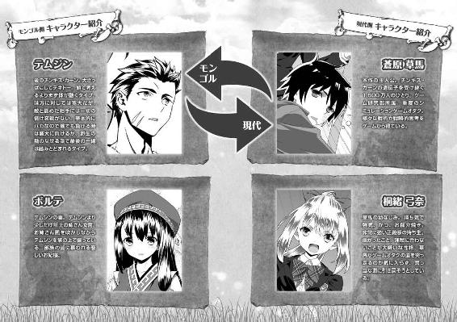
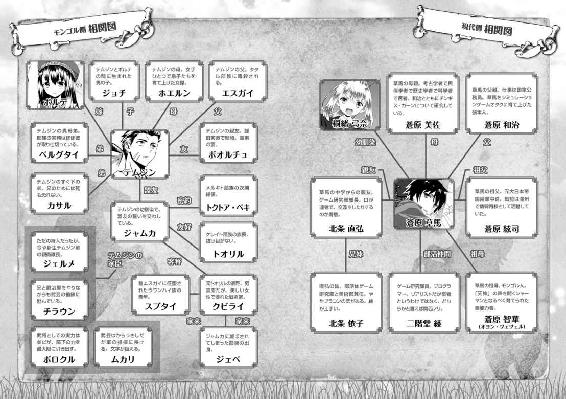
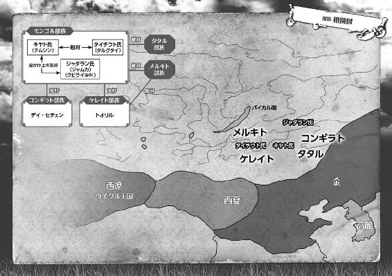
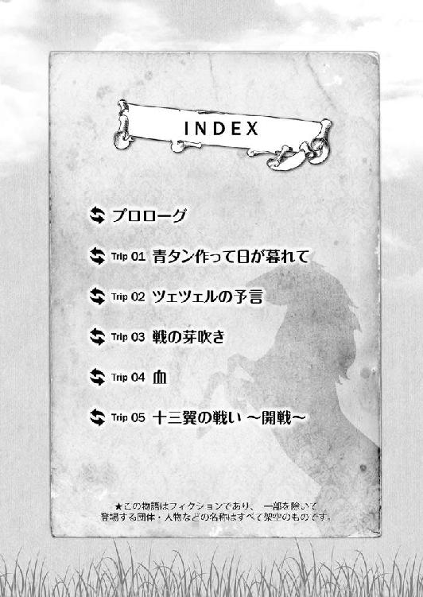
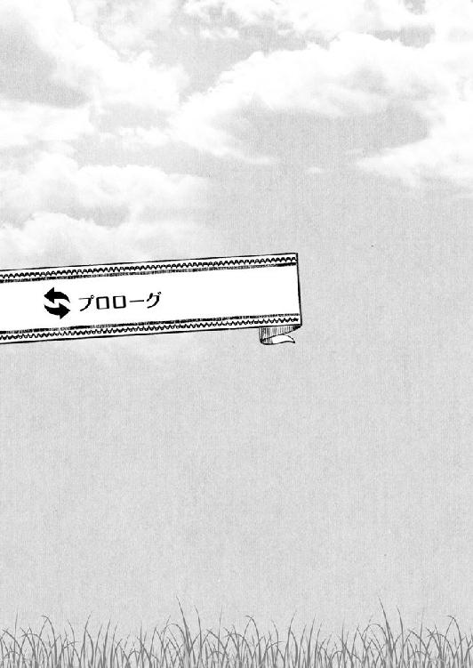
プロローグ
馬が走っていた。その数、およそ三〇頭。
気持ちよく抜けた夏空の下、赤茶けた大地にもうもうと砂煙を巻き上げながら、馬たちは団子になって疾走している。
「先頭の集団が戻ってきたな」
数キロ離れた小高い丘の上からその様子を眺めていたボオルチュが、隣で馬を並べる草馬に向かって言った。
「先頭の先頭は誰かなーっと」
走る馬群に目をこらし、草馬は言った。驚異的な視力を誇る遊牧民の目は、馬上で手綱を握っている人間の顔をはっきりと捉えている。
「......やっぱカサルかぁ」
「番狂わせはなかったな。こと、一騎打ちと馬の扱いでヤツの右に出る者はいまい」
まったく、ボオルチュの言うとおりだった。
先頭集団の更に一番前を走る馬の背で、相変わらずぽちゃっとした肉まんのようなカサルの体が揺れているのが見て取れた。
「他の連中よりも明らかに重たいだろうに、よくもまぁ......」
あんなに速く走れるものだ。感嘆とともにそう言いかけた草馬だったが、
「......あれ？ 待った。食らいついてるのがいるぞ。ふたり」
カサルの馬が巻き上げる砂煙の向こうから、きれいに鼻先を並べた二頭の馬が飛びだしてくるのが見え、草馬は話題を切り替えて身を乗り出した。
「誰だ？ 追いつきそうじゃん」
「チラウンとボロクルだな」
草馬の問いに、ボオルチュが迷いなく即答した。
カサルを猛追する二頭のうち、向かって右側を走る葦毛の馬にまたがっているのがチラウン。左側の栗毛を駆るのがボロクルだと、ボオルチュが指で示した。
草馬は知らないだろうが、今、草馬が借り受けているこの肉体の本当の持ち主であるテムジンにとっては、両名ともに浅からぬ縁がある人間だということも付け加える。
「チラウンは、以前にテムジンがタイチウトの虜囚となった折、逃亡の手引きをしたソルカン・シラという男の息子ふたりのうちの弟だ。ボロクルは、今は我々に従っているフウシン族の出で、かつてホエルン様がカサルの守り役に任じていた」
「へえ。そうなんだ」
「両名とも、テムジンはよく知っている男。接する時は注意してくれ」
「うん」
この中世モンゴルという時代と場所においてただひとり、草馬が平成の日本からやってきた未来人であることを知っているボオルチュである。その忠告には耳を傾けるべきであるが、草馬はあいまいなうなずきで返した。
けっしてボオルチュをないがしろにしているわけではないが、この瞬間に草馬の興味を引く情報はチラウンとボロクル両名の素性ではなかったからだ。
「馬の扱いは今見てよくわかった。武術の腕はどうかな？ 頭の回転は？」
草馬はたずねた。
「チラウンは、昨日の武術大会で優勝して羊三頭と奴婢の女をひとり得ている。元はメルキトの美女をな」
「優勝って、カサルに勝ったのか？」
「いや。そもそもカサルは出場すらしていない。すぐに食えない物が賞品ではやる気が起きないと言ったそうだぞ」
「カサルらしいよ。......で、ボロクルのほうは？」
「腕はそこそこと言ったところだが、奴はなぜかやたらと兵に人気がある」
「またカサルだけど、守り役だったって言ってたよな？ どうかな、俺やベルグタイじゃなくてボロクルでもカサルは言うこと聞きそうかな」
「乳飲み子の頃から面倒を見ていたんだ。さしものカサルも一目置いている男なのは間違いないだろう」
「......いいじゃないか」
ボオルチュとの質疑に大いに満足し、草馬はもう一度うなずいた。
と同時に、草馬があらかじめここをゴールと決めていた場所を三頭の馬が塊になって駆け抜けていった。
競馬で言えばハナとクビの差で、一着のカサルは変わらず。さっぱりとした短髪に少しつり上がった目つきが印象に残るチラウンが二着。いわゆる「ボンバーヘッド」というやつで、もっさりと膨らんだ天然パーマと熊を思わせる巨躯がやたら目を引くボロクルが三着に入ったようだ。
「あの二人も呼んでくれ」
「わかった」
「それと、前にボオルチュが会わせてくれたあの髪の毛長くてヒョロッとしたの......」
「ムカリだな」
「そう、ムカリ。あいつも一緒に。......まだ戻ってきてない？」
「あいつは頭を使うのに特化した男だ。まだ最後尾をとことこ走ってるさ」
「だったら、先にチラウンとボロクルにあいさつしてこようかな」
手綱を引き、草馬は馬首をめぐらせた。
ぽくぽくと蹄を鳴らしてゆっくりと丘を降りはじめる。
「さて、またこれから忙しいね」
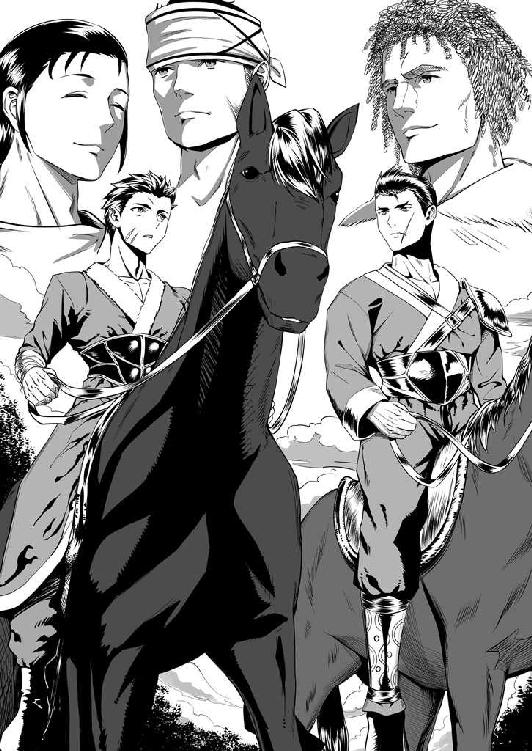
すぐに横に並んだボオルチュに向かって、草馬は言った。
「また寝る時間が減ってしまう」
軽く嘆息して首を振ったボオルチュが答えた。が、仕草とは裏腹にその声は明るい。
やりがいのある仕事を前に、気分が高揚しているようだった。
草馬がケレイト族を束ねるトオリルと秘密裏に連合し、モンゴル高原最強と目されていたメルキト族の大軍を撃破してから、既に二年の月日が流れていた。
草馬自身にはまったく身に覚えなく、あずかり知らないところで産まれてしまった長男のジョチはもう一歳。これがまた母親であるボルテに良く似て目鼻立ちのはっきりしたかわいい子であった。
三〇代半ばという平成の日本的感覚からすると若すぎる祖母となったホエルンと手を繋ぎ、よちよち歩きで集落を巡察する若君の姿は、今やボルテをもしのぐ人気を誇る全部民にとってのアイドルだった。
そんなジョチの誕生からこっち、キヤト・ボルジギン氏を取り巻く情勢はこれまでよりも更に大きく変わっていた。
高原最強のメルキトを破り、トオリルやジャムカと山分けの形で鉄山の利権も奪い取ったことでキヤト氏の威勢はいや増すばかり。少し前までは一〇〇〇騎を用意するのにも青息吐息だった弱小氏族が、今や単独で二万からの軍勢を動かすことも可能な「大国」に成長しつつあった。
そうなると急務として浮上してくるのが、膨れあがった軍勢を効率良く統率するための前線指揮官の確保である。
腹心中の腹心たるボオルチュには総参謀長として常に草馬の近くにいてもらわねばならず、対タイチウト戦から非凡な才覚を見せているジェルメには草馬の直衛部隊の指揮を執ってもらわねばならない。
弟のベルグタイはと言えば、平時においては行政の長、戦時には全軍の補給を滞りなく差配するという重要な役目がある。
最後に残るのはカサルだが、単騎での戦闘能力は一族最強と言っていいものの性格的に大部隊の指揮には向かない。壊滅的に。
そこで、優秀な指揮官候補を発掘するために草馬とボオルチュが考えたのが、全軍参加の「大競技会」だった。
剣、槍、弓といった武芸の腕前から馬の扱い、一〇〇人単位同士での模擬戦などを三週間にわたって催し、優秀な成績を残した者、何か光る特技がある者は出自を問わずに草馬が直々に声をかけて登用してまわるのである。
そして、今日がその大競技会の最終日と定めた日であった。最後の競技である競馬は、たった今カサルの優勝で幕を閉じた。
「三日以内には編成を終えたい。なんとかなりそうかな？」
「やるしかなかろう。時間は待ってはくれん。ムカリを使わせてくれ。実はもう先日から編成案をまとめさせている」
「ってことは、ムカリは文字を扱えるのか」
「個人でコンギラトの商人と渡りをつけて、金の書物を入手しているような男だ。奴は役に立つ。俺が請け合おう」
常に慎重なボオルチュにしては珍しく勢い込んで言い切るのに、草馬は目を丸くした。
「いるところには、いるもんだなぁ。今まで、どこで何してたのそいつ」
「女子供に交じって織物や飯の支度を。ソウマ殿がテムジンと入れ替わる前の一族......と言うか、今のキヤト以外の高原において馬の下手な男などいないのと同じだからな」
「またそういう偏った......。まぁそれはいいや。わかった、とにかくムカリの扱いはボオルチュに任せるから」
草馬たちがこうまで軍の再編を急ぐのには、もうひとつ理由がある。
それは、高原に展開する他の部氏族の動向もまた激しくなってきたからだ。
対メルキト戦の後、莫大な戦利品を得て勢力を伸ばしたのはキヤト氏だけではない。
むしろ、連合軍の頭目であったトオリルや、そのトオリルとの仲介役となって自身も多数の兵を出したジャムカのほうが、より多くを得ているのである。
情報収集に放った密偵たちによれば、トオリルは戦で得た財をかの万里の長城を越えた先にある金帝国の将軍や官吏にばらまいており、いずれ近いうちになんらかのよしみを結ぶと見られている。
が、問題はトオリルよりもジャムカだった。
公式に誰が言ったわけではないが、ジャムカが復活しつつあったキヤト氏の威勢をもう一度地に落とすため、メルキトと通じてボルテを誘拐させ、あまつさえその罪をタイチウト氏になすりつけようとしたという噂話は既に高原中に広まっていた。
ボルテ救出のためにメルキトの集落へ乗り込んだ時、ジャムカがメルキトの次期総領と目される男の口を封じようと躍起になっていたのを他ならぬ草馬自身が目撃してしまっており、その噂が大筋で間違っていないことは草馬も確信している。
真相が露見することを恐れたジャムカは、自身が率いるジャダラン氏の本拠地に舞い戻るなり、今後の身の振り方を決めかねていたいくつもの氏族に接触して反キヤトの体制を着々と整えている。
ジャムカの挙兵はいつあってもおかしくはない状況で、二年の時を経て新たな戦雲が草馬たちの頭上をつきまとっているのである。
「ジャムカかぁ......。できれば後回しにして、まずは他の連中を片付けたいんだけど、そうもいかない感じだよなぁ」
二、三、ボオルチュと今後についての簡単な意見交換をした後、草馬はうなじのあたりを揉みながら、絞るような声で言った。
「今更こんなことを言うのも逆に無礼かもしれんが、正直、申し訳ないと思うこともある」
そんな草馬の物言いに思うところがあったのか、ボオルチュの声色がやや沈んだものになった。
「これほど激しく一族の命運に関わる事柄が動いているというのに、すべてをソウマ殿に任せてテムジンはどうしているのか。せめてソウマ殿の働きに見合う何かを得て戻ってこられるのか。......どうなのだ、ソウマ殿。ここ最近の、テムジンの様子はわからぬか？」
ボオルチュが、草馬の目をのぞき込んできた。
瞬間、草馬の脳裏に平成日本にいるテムジンからの記憶のフィードバックとでも言うべき様々な光景やできごとがフラッシュバックする。
一番最近の交信は、二〇日ほど前のこと。ちょうど、人材発掘競技会の初日だった。
草馬の知らない間にベルグタイが万事準備を整えていた盛大な開会式が執り行われ、その余興にと、遠く西域からやって来たという旅芸人一座の褐色美女ダンサーたちが目のやり場に困るあられもない衣装で妖艶な舞を披露した後、祝宴となった。
席上、一族の長たる草馬への当然の礼儀として、美女たちはその衣装のままで草馬に対して色々とオトナの接待をしてくれたわけである。
草馬は、耐えた。がんばった。そして、宴が小休止となった隙に用を足すふりをして中座し......別の用を足したと、まぁそんな流れであった。
「......わかる」
さすがにボオルチュ相手とは言え、どんな時にテムジンとの交信が可能になるのか、詳細までもを語る勇気はない草馬だった。ただ、端的に事実だけを伝え、ボオルチュが次の質問を放つよりも早く自分から口を開いた。
「いや、隠してたわけじゃない。俺だってボオルチュにだけはちゃんと話さなきゃと思ってたんだ。ただ、向こうは向こうでなんかややっこしいことになっててさ......」
言って、改めて思い出した。
このモンゴル高原で為すべきことの他にも、草馬には考えねばならない問題が山積みのままになっているのだということを。
「聞こうか。さすがにそのぐらいの時間はあるだろう」
草馬の言葉に、ボオルチュが神妙な面持ちで答えた。
「実はさ......」
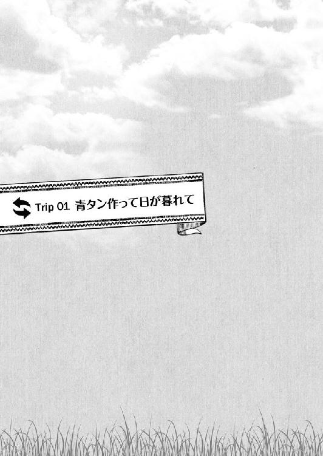
青タン作って日が暮れて
１
朝が来た。
「む、迎えに来たんだから早く着替えてきてよ」
昨晩、カズハルが現れた外へ続く大扉のところに立っている弓奈が、相変わらずの視線をテムジンに向けつつぼそりと言った。
「......と言われてもな」
Ｔシャツ、ジャージばきのままで弓奈と向かい合ったテムジンは、胸のあたりをぼりぼりと手でかきながら口を開く。
と、弓奈の視線がテムジンを通り抜けてその背後に注がれた。
気付いたテムジンも振り返ると、そこにはカズハルの姿が。
「おー、来てくれたか弓奈ちゃん。悪いなぁ、こんなこと頼めるの、おじさん他にあてがなくってなぁ」
耳に引っかけて目の前にかぶせるあの装飾品を指で持ち上げたカズハルが言った。それが妙に明るい声なのが、わずかにテムジンを警戒させた。
「あ、あんな状態で放っておけないし......。で、でも、今日だけ......ですから」
「大丈夫。夜にはしかるべきところに連れて行くからさ。おじさんが仕事行ってる間だけ頼まれてくれれば。すまん！」
「......わかりました」
何度となくテムジンとカズハルの顔を見比べながら、弓奈がうなずいた。
さっきよりも一層声がボソボソしたものになり、本当に不承不承といった様子だ。
「ほれ、せっかくわざわざ迎えに来てもらってんだから、とっとと着替えてくるんだよ」
と、そんな弓奈の様子に気付いていないのか、あえて無視しているのか、カズハルが気安い調子でテムジンの肩を小突いた。
「だから、何に着替えろと言うんだ。戦装束を着ろとでも？」
「学校の制服に決まってんだろ、このデコスケ！」
「知るか！ 俺様にわかる言葉を使え！」
むっとしてカズハルの手を払いのけたテムジンが吠えるのと、「はあっ......」という弓奈の盛大なため息とが重なった。
次の瞬間、
「お邪魔します！」
突如として弓奈が靴を脱いで板張りの床に上がり込んできたかと思うと、テムジンの腕をつかんで先ほどまで眠っていた部屋のある二階へと駆け上がっていく。
「お、おい！ ちょっと待て！」
「いいから！」
為す術なくテムジンは元いた部屋に連れ込まれた。
本当に情けない体もあったものである。
（いったいどんな生活を送っていたら、こんなやわな肉体になるんだ。ふざけやがって）
部屋に戻る間のごくわずかな間でもう息があがりはじめるという信じられない状況にテムジンが悄然としていると、
「これがシャツ。これがブレザー。ズボンはこっち！ ほら、早く！」
部屋の片隅で馬止めに使う策のような道具に吊されていた服を、弓奈が立て続けに寝台の上へと放り投げた。
断片的な情報を整理すると、どうやら弓奈もカズハルも自分をどこかへ行かせようとしているらしいことはわかった。「迎えに来た」と言うのだから、その場所まで案内するつもりもあるのだろう。
で、その場所へ行くには、放り投げられたこの装束を着なければならないというわけだ。
（どこか有力な部民......族長のような人間の家か？ いや待て、まずは神殿みたいな場所へ連れて行き、呪術師にでもあわせるつもりかもしれねぇ）
装束を手に取り、テムジンは考えた。
見れば、シャツにブレザーなる上着は弓奈が身に着けているものとよく似ている。
（この小石みてぇな出っ張りを......こっちの穴に通して止めるわけか。デールの首元を締めるのと似たようなもんだな）
弓奈の格好を観察し、見よう見まねで着替えを行う。
しばしその様子を黙って眺めていた弓奈だったが、
「着替えが終わったら、カバン持って。おじさんと連絡つかないと困るから、スマホも忘れないでよね」
ふと思いついたように、あの黒くて光って音が鳴る板きれと、寝台の足下に転がっていた把手つきの平べったい物入れを拾ってこちらに押し付けてきた。
「部屋の外で待ってる。急いでね」
そのまま、テムジンの返事も待たずに部屋を出て行ってしまう。ばん、と派手な音を立てて扉が閉まった。
「......これがなんだって？ カバンとか言ったか？」
押し付けられた物入れは、これも動物の革でできていた。造りは非常にしっかりしているように思える。
「ここを持つか......もしくは、紐か何かで馬にくくりつけるのか......」
開けてみると、中には何も入っていない。どおりで軽いわけだ。
とりあえず弓奈がスマホと呼んだあの板きれを中に放り込んだ。
この板きれを鳴らして耳に当てれば、どういう仕組みかは知らないが離れた相手と会話ができるらしいことは昨晩のうちに判明している。他はともかくそれだけは、重要かつありがたい情報だった。どこへ連れて行かれるにせよ、このスマホは持っておいたほうが得策だろうと判断した。
「準備できたぞ。これで文句はねぇだろう」
着慣れぬ服に苦戦しながらどうにか着替えをすませて、テムジンは部屋を出た。
向かいの壁に寄りかかって、例のスマホに目をやっていた弓奈が顔を上げる。
そして、頭のてっぺんからつま先までテムジンの姿をしげしげと見やり、
「ネクタイとソックス......まぁいいか。そこまで面倒見られないわよ」
また何事か聞き慣れぬ言葉を口の中だけで言う。
「まだ何かあるのか？」
「着替えたなら行くわよ。遅刻しちゃう」
たずねるテムジンの声は無視し、弓奈が先に立って階段を下り始めた。
「......チッ」
その態度は大いに不満であったが、どうにか舌打ちひとつでこらえて、テムジンも弓奈の背を追い階段を下りる。
「靴、はいて」
「......靴？ これか？」
示された靴も、カバンと同じ黒い革でできていた。テムジンたちが普段はいている、すねまでを覆うような長靴ではなく、くるぶしの下ぐらいまでしか覆わない短靴である。行商人が金や西域からこんなような靴を仕入れているのを見たことがあった。
とりあえず足を通してみると、履き心地はまぁ悪くはない。
「じゃ、おじさん。行ってきます！」
弓奈が、家の中に向かって声を張り上げた。
「おーう。車に気をつけてなー」
家の奥のほうから、カズハルの間延びした声が聞こえた。「はい」と殊勝に応じた弓奈が、大扉に手を掛けて押し開いた。
光と、外の空気が家の中に入ってくる。
（いよいよ......か）
この先は、家の外だ。
（異世界......俺様の生きてきた場所とは、違う世界......）
無意識のうちに、テムジンの下腹に力が入った。
緊張は、もちろんある。だが、けっして何を見ても恐れまい、うろたえまいと自身を鼓舞してから、テムジンは本当の意味で異世界への第一歩を踏み出した。
そして、
「......っ!?」
ほんの一瞬で、先ほどの決意は乾いた家畜の糞よりももろく崩れ去り、風に吹かれて散っていった。
２
表向きの平静を取り戻すまでに、五回の深呼吸を要した。
みっともなく叫んだりしなかったのは、テムジンの最後の意地のようなものだった。
が、正直その点以外は散々なものである。
全身から冷や汗が噴き出し、心臓は破裂寸前、膝が笑って次の一歩が踏み出せない。
「どうしたの？」
そこに弓奈が怪訝な声でたずねてくる。
「別に......どうもしねぇ」
うろたえるな。以前、あの光る道の上でソウマとまみえた時、俺様はあいつになんと言った？ その言葉を、自分で嘘にしてたまるか。
そう、何度も頭の中で繰り返し、テムジンは言った。
ともすれば自分の意志に反して、意味をなさないわめき声をあげてしまいそうになるのを最後の一線で踏みとどまる。
飛び散り、バラバラになった決意を必死にかき集める。どうにかこうにかもう一度形にして、テムジンは石のように固まった体を必死に動かした。
ゆっくり、ゆっくりと首をめぐらせて周囲を見渡す。
「城......か。そうだ、これは城ってやつだろう？ なに、初めて見たんでいくらか驚いちまっただけだ」
動揺を悟られぬよう、むりやり唇を引っ張り上げてテムジンは笑ってみせた。
が、
「またわけのわかんない......。何言ってるのよ、どこにお城があるって？」
そんなテムジンの並々ならぬ努力をあざ笑うかのように、弓奈が呆れ声を出した。
（何っ!? ち、違うのか!?）
交易のために金と高原とを行き来する行商人たちから伝え聞いたことをテムジンは思い返していた。
行商人たちは口を揃えて、
「金の城はゲルと違って四角い家々が往来の両側にびっしりと隙間なく建ち並んでいる」
「建物はどれも大きく、ゲルを三つも四つも積み上げたような高さがある」
「城の周りは高い壁で囲われていて、その内側に築かれた集落のことを、金の民は街と呼んでいる」
......そう語っていたはずだ。
今、テムジンの眼前に広がる光景は、まさしくその「城」そのものに見えるが、弓奈は違うという。
「だったらなんだ？ ......街か」
呆然とテムジンがつぶやくと、
「街って言うか......どこにでもある住宅街......って、冗談でしょ。記憶障害ったって、限度があるわよ」
弓奈は弓奈で、呆れた口調から一転、テムジンの様子に困惑を深めたように言った。
だが、幸いなことにその言葉が戸惑い混乱するテムジンにとってわずかな光明となって道を示した。
（キオクショーガイ......。キオク......記憶か）
少しずつ、落ち着いてきた。
（そうだ。俺様は記憶を失っているんだと思えばいい。ここが異世界だろうがそうじゃなかろうが、城だろうが街だろうが、元より記憶がねぇ人間にとっちゃ関係ねぇことよ）
もう一度、深く息を吸う。
そうだ、とテムジンは思い出した。
自分はいつだってそうして生きてきたということを。
その結果、手痛い失敗もした。命を落としそうにもなった。
（だからどうした。それも俺様が自分で選び、つかみ取った結果だ......）
そうとも。恥じることは何もない。誰にどう言葉を吹き込まれようとも、自分の目で見て、肌で触れた感覚だけを信じて生き抜いてきた人生は、誇るべきもののはずだ。
まず、受け入れること。
そして大切なのは、すべてを受け入れるための器の形と大きさ......すなわち、自分自身を見失わないことだ。
（俺様は......俺様だ!!）
この強烈な自負こそが、テムジンをテムジンたらしめるすべてであった。それを思いだした以上、もはやテムジンの心は揺らがなかった。
二歩目、三歩目......。
気付けば、ごく自然にテムジンは次の足を踏み出していた。
「初めて見る道だ。細かく砕いた石を敷き詰めてやがるのか。......なるほど、これだけ念入りに平らにしておけば、交易品が山積みになった荷車がひっくり返ることもねぇな」
面白い。
テムジンはうなずいた。
「家を高く作るのにも、何か理由があるに違いねぇ。......そうか、見張りのためか？ いや待てよ、他にも重要なわけが......」
面白いじゃねぇか、異世界！
テムジンは、もう一度うなずいた。
「ち、ちょっと！ どこ行くつもりよ！」
いつの間にか、弓奈を追い越していた。背後からの声に、テムジンははたと振り返った。
「何言ってやがる。てめぇが俺様をどこかへ連れて行くんだろうが。ぼけっとしてねぇで、ちゃんと案内をしろ」
振り返りながらも、歩みは止めない。
「バカ！ 前向いて！ 交差点、信号赤！」
「あん？」
叫ぶ弓奈の血相が変わっていた。
何か危険が迫っていることを直感的に悟って、テムジンは再び前を向いた。
その時、視界に飛び込んできた物に、今度こそテムジンは驚愕の声をあげてしまった。
「な、なんだこれは!?」
「ほんとふざけないで！ 轢かれるつもり!?」
駆け寄ってきた弓奈の手がテムジンの上着をつかみ、思い切り後ろへと引っ張った。
そのテムジンの目の前を、耳をつんざく不快で大きな音を立てた何かがいくつも連なって通り過ぎていく。
その様はまるで、野生化した猛牛の群れが走り抜けていくかのようだ。
大きく見開いた目でよく見れば、その何かにはぶっとい車輪がくっついている。車輪の上には妙な形の箱がかぶさっているのだが、もうそれ以上はテムジンの中にそれを形容する言葉は見つからない。
ただ、ただ、呆然として眺めていると、
「住宅街見て驚いて！ 車見て驚いて！ 次は何よ？ 電車見てひっくり返って、高層ビル見上げて気を失うつもり!?」
道の端にテムジンを引っ張っていき、力づくで自分のほうに向かい合わせた弓奈が、何度もつかんだ上着の襟を揺さぶりながら金切り声を出した。
「そういうベタベタなのもういいから！ そんなこといくら徹底したってね、私は信じないからね!!」
ゆっくりと、テムジンは弓奈の手を襟から外した。
改めて弓奈の顔を見ると、単に癇癪を起こしてわめいているわけではないことはわかった。テムジンを睨む目の奥が、わずかに揺れている。
弓奈は弓奈なりに、テムジンのことを心配してくれているらしい。
襟を正し、テムジンは息を吐いた。
「......てめぇの言いたいことは、なんとなくわかった。だが、もういい加減に受け入れちゃあどうだ？ 今の俺様は、てめぇが知っているソウマじゃねぇんだよ」
「草馬だよ！ どっからどう見たって！」
「見た目の話じゃなくてだな......。ああくそ！ だったらこう考えろ。俺様が本当は誰かとか、そういうことは考えるな。俺様はソウマでもいい。ただ、記憶を失っていると思え」
「はあっ!?」
テムジンの提案に、弓奈が目を剥いた。しかし、テムジンは怯まない。
「そうイキるな。この辺が落としどころだろうが。俺様は頭を打った衝撃でおかしくなって、今までの記憶を失っちまった。やれやれ、困ったものだ」
自分自身を取り戻したことで、テムジンには余裕が生まれている。譲歩できるところは、してやろうじゃないかという、一族の長にふさわしい寛大な心で諭してやることにした。
「......困ったものだが、仕方ねぇことだろう？ だからてめぇ......や、弓奈はだな、大変困ったことになっているこの俺様が、余計な問題を起こさねぇですむように助けてくれりゃあいい。これで丸く収まる」
「......うう」
弓奈が、腹を空かせた犬のような声を出した。
「で、早速だがあの車輪のくっついた箱はなんだ？ 教えろ。何かわかりさえすりゃ、もう無様に驚いたりはしねぇ」
考える間を与えないつもりでテムジンが更にまくし立てると、犬のうなり声から変わって、弓奈の口が今度は陸に上がった魚のようにパクパクと動く。
ややあって本当に息が吸えなくなったかのように弓奈の顔が赤くなった。同時に、両の拳がきつく握りしめられるのが見え、テムジンは思わず一歩退いて身構えた。
できればこの肉体で、あの拳を二度も三度も受けたくはない。
が、テムジンが警戒した弓奈の鉄拳が飛んでくることはなかった。
「一日......今日一日だけ......」
代わりに、何かに耐えるような声が口の端から漏れ聞こえてきて、
「わかった。わかったから、もう口を開かないで。黙って、何もしないで、おとなしくついてきて。じゃなきゃ夜まで待たずにこのまま病院送りにするからね！」
殺気のこもった視線が、テムジンを貫いた。
女を相手にしてこれほどの殺気を叩き付けられた経験は、少ない。母のホエルンか、ボルテが本気で怒った時に一度か二度あるだけだ。弓奈が本気だと悟るには充分な力が備わっていたのは言うまでもない。
悔しいが、この殺気とともに放たれる拳を今のテムジンに受けきれる自信は皆無だ。
（今は耐える時......か）
タイチウト氏に捕らえられた時のことを思い返し、テムジンは忍耐の道を選んだ。
（ソウマに代わってこいつをモノにして言うことを聞かせるには、こいつについてもっと知る必要がある......特に強さの秘密を）
屈辱を味わうのはこの際致し方ない。受け入れよう。だが、いずれは必ずその代償を払わせてやるという決意を新たにし、テムジンは言われるままに黙ってうなずいた。
３
弓奈の強さの秘密を知りたいと言うテムジンの願いは、思ったよりも早くにかなった。
それは、弓奈たちが「ガッコウ」と呼んでいた場所へと到着してすぐのことであった。
あの車輪つきの大きな箱が、どうやらこの世界の人間にとっては馬や牛と同じような移動や荷物の運搬に用いる物であること。そしてこの巨大な街（......のはずだ）の中を縦横無尽に張り巡らされた平らな道の上を無数に走っているのだということをテムジンがおぼろげに理解した頃、ふたりは「ガッコウ」へと到着したのだった。
「......なんつーデカさだ」
家ひとつとっても驚きであるのに、ガッコウの巨大さと言ったらなんだ。想像を絶するとはこのことだ。
この世界の住人たちは、どれほどの人と資材を建物ひとつに投じる豊かさを持っているのか。金と同等かそれ以上かもしれぬとテムジンが唸っていると、それを尻目に弓奈はどこも気後れする様子もなく、事もなげにその門をくぐるのだった。
慌てて、テムジンはユミナの後を追った。
そこで周囲の様子をそれとなく観察するうちに気付いたのは、このガッコウには弓奈と同じような年頃の人間が、男も女も関係なく、全員が同じような服装をしてどこか大部族の一軍にも匹敵するほどに集まっているということだった。
事ここに至ると、既に感覚の一部が麻痺してきてしまい、テムジンはいちいち驚くのも馬鹿らしくなってきて、無表情に弓奈の後ろを歩き続けていた。
その弓奈が、ようやくある場所で足を止めた。
そこはガッコウを構成するいくつかの建物のうちのひとつで、今までの道のりで目にしてきた物の中では比較的小さく、平屋建てだった。
入口らしき開けた場所の上に一枚の板が掛かっているのが目に止まり、なんとはなしにテムジンは視線を持ち上げた。
「格技場......か」
その板に太く黒々とした線で書かれていた何かを、目に入ったままに読み上げた。
瞬間、テムジンの脳裏に稲妻が閃いた。ぼうっと惚けていた目がいっぺんに醒め、昨晩スマホで弓奈と話をした時のことが鮮烈に蘇ってきた。
読める。いや、「読む」という行為を知っている。そして、意味が理解できる！
（そうだった......。俺様としたことが、とんだ間抜けもあったもんだ！）
稲妻が、頭の中で何度も何度も明滅した。
これまで、目にする物すべてが衝撃的で、その形や大きさにばかり目がいってしまっており、肝心なことを忘れてしまっていた。
今、テムジンが借り受けているこの体......いや、ここは頭と言うべきか。とにかく元の持ち主であるソウマの中に刻みつけられた知識というやつは、どうもそのままテムジンも利用することができるのだということを。
（格技場とはなんだ？ ......わかるぞ。素手で敵と戦うための技を鍛錬する場所だ）
そう、こんな風に。つまり、弓奈はこの場所で技を磨いたのだ。
「ひとりで教室に行かせるのも危ないから、一緒に来てもらうけど......いい？ 絶対におとなしくしててよ？ 朝練が終わるまで、勝手にどっか行ったりしないで」
「わかっている。そうわめくんじゃねぇ」
こちらを振り返って言う弓奈に、テムジンは鷹揚に答えた。自分の声に、心の余裕がにじむのをはっきりと自覚しながら。
「隅でおとなしくしてりゃいいんだろ」
言って、テムジンは先に立って格技場に足を踏み入れた。
やはりここもソウマの家と同様に建物の「外」と「内」とを履き物を脱ぐことできちっと分けているようだった。入ってすぐの場所にある木の棚に短靴が整然と並べられていた。
そういう風習なのだとテムジンは理解した。
棚の上に置かれた札のような物には「下足箱」とある。当然、これも読める。
戸惑うことなく靴を脱ぎ、テムジンは空いている棚にその靴を入れた。
「これでいいな？」
「幼稚園児でもできることで得意な顔しないでよ......」
またため息をついた弓奈と肩を並べて更に一歩入ると、中には一〇人ほどの若い男女の姿があった。全員が、前あわせになった真っ白な装束を身に着けている。それがテムジンには、えらく丈の短いデールのように見えた。
ただ、それよりもテムジンが気になったのは、そこにいた若者たちが例外なくテムジンに向けてくる奇異の視線だった。
皆、弓奈に対しては礼儀正しいあいさつをした後、一様に、
「どうしてあんな奴がここに？」
と言わんばかりにテムジンを見るのだった。
気にしていると思われるのも癪なので、テムジンは泰然としてその視線を受け流した。
黙って腕を組み、近くの壁に寄りかかる。
「道着に着替えてくる。......動くんじゃないわよ」
それを見た弓奈が言った。
「くどいぞ。俺様もてめぇが使う技には興味がある。黙って見させてもらうつもりだ」
手を振って弓奈を追い払うようにすると、また視線が集まってくるのがわかった。
「約束だからね」
念押しをした弓奈が、テムジンのそばを離れた。どうするのか見ていると、テムジンが立っている入口付近のはす向かい、一番奥の壁にふたつの扉が並んでいるのが見え、弓奈はその一方を開けて姿を消した。
その扉には何か書かれた物が貼り付けられていた。入口の板に書かれていたものと違い、妙に丸っこく柔らかそうな線である。
（女子更衣室。男子禁制・入室厳禁。許可なく入室した者......即刻処刑!?）
しかし、その柔らかさに似合わず、書かれていた内容は恐ろしいものだった。
別の衣服に着替えるためだけの部屋に男が入っただけで処刑とは、とんでもなく厳しい掟もあったものである。テムジンの顔が思わずひきつった。
（やはりこの世界では、裸や性器を他人に見せることが忌み嫌われているのか。しかし、処刑とはな。しかもなぜか、処刑されるのは男だけらしい。......理解できん）
モンゴル高原には大小合わせて一〇〇はくだらない部氏族がひしめいている。
中には女の権力が非常に強い一族もあるようだが、それでも裸を見ただけで死なねばならないというような苛烈な掟を課しているなど聞いたこともなかった。
昨晩、見られたのがテムジンではなく弓奈のほうであったらどうなっていたのかと考え、さしものテムジンも薄ら寒い思いを抱いていると、今度は「男子更衣室」とある扉が開くのが目に入った。
そこから、ひとりの男が出てくる。
やはり揃いの白装束を身に着けたその男が、ふとテムジンのほうを見た。
テムジンもまた男の顔を見返した瞬間、反射的にぐいと身を乗り出していた。
男の顔に、見覚えがあったからだ。それも、テムジンにとっては可能な限り会いたくない顔であった。
「ジャムカ......」
思わず、その名をつぶやく。
表向きはボルテの父であるデイ・セチェンの顔を立てて盟友の誓いを交わしてはいるものの、その実は互いにいずれは決着を付けねばならぬ大敵と見定めている男。
ギリッという歯ぎしりがテムジンの口から漏れた。
（待て、早まるなよ俺様。冷静に考えてジャムカがあんなところから妙な装束で現れるわけがねぇんだ。似ているだけだ。似ているだけ！）
必死に表情を取り繕いつつ、テムジンはもう一度しっかりとその男を見た。
一方、男のほうはと言えば、テムジンの存在に気付くやいなやどこか悠然とした足取りでまっすぐにこちらへ向かってくる。
その身ごなしがまたジャムカのそれに驚くほど似ていて、テムジンの胸をざわつかせる。
「どうして君みたいなゲームオタクが道場にいるんだい？」
剣なら、あとほんの一歩という間合いにまで近づいてきたところで男が口を開いた。
常に気取ったような声も、粘っこい喋り方も、すべてがジャムカに似ていた。
「誰だ、てめぇは？」
ジャムカに似ているが、ジャムカではないはずだ。もうこの声を聞いているだけで全身が痒くなってくるテムジンである。一刻も早く違うということを確かめたくて、テムジンはたずねた。
「おいおい、冗談はよそうよ」
男が笑った。
「わけを話すと長くなるんで省くが、あいにく冗談なんざ言える心境じゃねぇんだ。もう一回聞くぞ、てめぇは誰だ？」
どうしても挑みかかるような口調になってしまうのを堪えきれず、テムジンはもう一度たずねた。ジャムカに似た男が、鼻白んだ。
「空手部主将、三年Ａ組の源だよ、ミ・ナ・モ・ト」
「......そうかい」
テムジンは、鼻を鳴らして答えた。
両肩にのし掛かっていた重りが、すっと取れたような気がした。やはりこの男、ジャムカではない。
「今度はこっちの質問に答えてもらえるかな。改めて聞くけど、ゲームオタクがこんな所で何をしている？」
ミナモトと名乗った、ジャムカに瓜二つの男が言った。念のため、目だけでその辺を見てみるテムジンであったが、あいにくとミナモトとテムジン以外は間近に人影はない。
ミナモトの口調には、明らかに侮蔑の意思が込められていた。テムジンは自分に向けられる悪意や敵意には人一倍敏感であった。そうでなければ、生き抜くことができない世界にずっと身を置いていた。
「......やはり俺様に言っているのか」
「他に誰がいるって言うんだい。まさかとは思うけど、桐緒さんに誘われて我が空手部の見学に来たわけでもないだろう？」
「キリオ？ ......ああ、弓奈のことか？」
「ゆみ......」
誘われてという物言いで察したテムジンが弓奈の名前を口にした瞬間、ミナモトの顔がわずかに引きつった。
「と、とにかくだ。キミのようなインドア志向のオタクくんがいる場所じゃないんじゃないかなぁ、ここは」
加えて、声の調子が一段高くなる。
テムジンは少々の驚きと、それに倍する心中の不快感を覚えながらミナモトの言葉を聞くこととなった。
顔はともかく、何もこんな細かい──即ち、相手がおとなしく言いなりにならなかったり、自分の思うとおりに事が進まないと声が上ずる──ところまでジャムカに似ることもないだろう、と思う。
「あいにくだが、ここを離れてひとりで勝手にどこかへ行かないでくれ......そう弓奈に頼まれちまっているんでな。俺様の一存じゃあ消えてやるわけにもいかねぇんだ」
弓奈に頼まれたというところをあえて強調し、テムジンは答えた。
こうなるともう、理屈ではない部分で絶対に言うことを聞いてやるものかという気持ちが根を張り始めるテムジンであった。
たとえば今、このやりとりを遠巻きに眺めている有象無象どもにはっきりと「邪魔だから出て行け」と言われたなら、後の報復は確定としても、この場は黙って姿を消してやっただろう。
（......だが、てめぇだけはダメだ。恨むならその顔を恨め）
自分の意志を示す意味も込め、テムジンは両腕を胸の前で組むと改めて背後の壁にどっかりと体重を預けた。
「心配するこたねぇ、ミナモトとやら。騒ぎを起こす気はねぇよ。てめぇらがここで何をしようと邪魔もしねぇ。静かに見ている。それだけだ」
もうお前と話すことはない、と言外に伝えてテムジンはミナモトから視線を外した。
実際、テムジンはミナモトに言ったとおりに振る舞うつもりであった。
今テムジンの興味は、弓奈がここでどんな鍛錬を積んで業を磨いているのかということに集中している。
ミナモト含め、ここに集まっている白装束たちが全員同じ鍛錬を積むために集まっていることは想像に難くない。いずれ弓奈を攻略するにあたって、それをしっかりと見ておくことが有益であると判断したのだ。
が、この時既に事態はそんなテムジンの考えとはかなり違う方向へと転がり始めていたことに当の本人は気づいていなかった。
「......だったら、見ているだけでいいのかい？」
不意に、ミナモトがテムジンに一歩近づいてきて言った。
「あん？」
テムジンは腕組みを解いた。
と、ミナモトの肩越しに見えていた「女子更衣室」の扉が再び開いた。
やはり皆と同じような白装束をまとった弓奈が、扉の向こうから姿を現す。
「おーっす！ 桐緒先輩、おーっす！」
「女子ーっ！ せいれーつ！」
その弓奈を認めた人間のうち、女だけがばたばたと慌ただしく動き始め、弓奈の前に規則正しい列を作ったかと思うと、
『おーっす！』
頭に響く甲高い声を揃えてから、弓奈に向かって一礼した。
「......なんだ、ありゃ？」
テムジンは、あごをしゃくってミナモトにたずねた。
「弓奈のやつは、あの女どもの首領か何かなのか？」
「首領じゃなくて主将......いや、そうじゃなくて。どうして僕がキミに答えなきゃならないんだ。質問していたのは僕だぞ」
テムジンを見たまま、ミナモトが苛立たしげに舌打ちした。
「......そうだったか？」
少しからかってやるつもりでテムジンが言うと、
「見ているだけでいいのかと聞いただろう。わざわざ朝練にまでついてきたんだ。たまにはキミも授業の前に一汗かいてすっきりするのも悪くないんじゃないかと思ってね」
ミナモトから、思わぬひと言が飛び出してきた。
それでテムジンは、もう一度ミナモトに目をやった。
「......出て行ってほしいんじゃねぇのかよ」
「気が変わったんだ」
「......なるほど」
「まぁ別に無理にとは言わないけどね。もしお望みなら、僕が少々手ほどきをしてあげてもいいかなと思っただけさ」
手ほどきときたか、とテムジンは得心した。
先ほどからミナモトがテムジン......と言うかソウマに対して敵意丸出しで接してくるのはなぜかと考えていたのだが、その理由に思い当たったのである。
弓奈だ。
ミナモトという男の目に揺らめいて見えるのは、弓奈をめぐってのソウマへの嫉妬心に違いなかった。
またしてもジャムカと同じだ。どうにかしてボルテにいいところを見せ、気を引こうと躍起になっている時のジャムカとまったく同じ目をミナモトはしているのだった。
「やれやれ......。大勢の前で俺様を叩きのめして、弓奈の歓心を買いたいってわけか。同じ顔の奴は頭の中まで同じだな」
「な、何を......」
ミナモトが、たじろいだ。実にわかりやすく。
「そんなんだから、俺様に横からボルテをかっさらわれるんだ。......や、こりゃてめぇの話じゃなかったか。......まぁとにかく、女をモノにするやり方としちゃ下の下だな」
「わけのわからないことを言うな！」
ミナモトの声が荒くなった。
声は、格技場全体にわんと響き渡り、それをきっかけにその場にいた全員の耳目が一斉にこちらへと集中するのがわかった。
もちろん、弓奈も含めて。
「ちょっと！ 何してんのよ！」
案の定、整列した女たちをそのまま捨て置いて、弓奈が肩をいからせてこちらへと近づいてくる。
「どうして源さんと草馬がにらみ合ってるわけ？」
テムジンと源の間に割って入った弓奈が、厳しい口調で更に詰め寄る。
「よ、呼び捨て......」
もごもごと、情けない声でミナモトが言うのをテムジンは無視し、声をかぶせるように応じた。
「そう棘を立てるな。このミナモトが、俺様にひとつ手ほどきをしてくれるって言いやがるもんでな、だったら一丁頼もうかって話をしてたところよ」
「はあっ!?」
弓奈の声が裏返り。取り巻く有象無象がざわついた。
それらもまるっと無視して、
「なぁ、そうだろうミナモト？ だったら、今すぐやろうじゃねぇか」
テムジンは勢いをつけて身を起こし、壁際から格技場への中央へ一気に歩を進めた。
まったく、安い挑発だ。
乗ってやる必要など、どこにもない。
......理性では、テムジンもしっかりと理解している。
だが、感情が許さない。ジャムカと同じ顔をした男が、同じ女を狙っているのだ。
後先のことなどどうでもよい。とにかくこの事実がわかってしまった以上、もう選択の余地はないのだった。
「......源さんも馬鹿なことはやめてください。主将なんですよ!?」
テムジン相手ではらちが明かぬと早々に見切ったか、弓奈が傍らのミナモトを見上げた。
しかし、ミナモトとてこの流れではおとなしく引き下がろうはずはない。
「の、望んだのは僕じゃない！ 彼のほうだ。......これは僕たちの問題だ。き、桐緒さんは口出ししないでもらいたい！」
「するに決まってるでしょう！ 先生が来たら大変なことに......」
「ごちゃごちゃうるせぇな。やんのか？ やんねぇのか？」
「やるなっ！」
「いや、やるっ！」
怒号やら何やらが一斉に交錯し、場の空気が沸騰した。
だだん！ と、派手に床を踏みならす音がして、ミナモトが大股でテムジンの前へと回り込んでくる。
向かい合った。
「イヤアッ!!」
ミナモトが、弓で射られた野鳥のような声を出した。
テムジンのすぐ耳元で、空気を切り裂く音がした。
気付くと、額の真横わずか指一本分あけた位置に、ミナモトのつま先があった。
（蹴り......か？）
右足を振り上げ、左足一本でその場に立っているミナモトの姿。その顔に、なぜか勝ち誇った笑みが浮かんでいるのを、テムジンは訳がわからぬ思いで見つめていた。
正直、見事な蹴りだ。下からすくい上げるように勢いをつけて振り上げられたミナモトの右足は、完全にテムジンの死角をついて頭部を狙っている。
テムジンが理解できないのは、その蹴りをなぜ振り抜かないのかということもさることながら、蹴りそのものに髪の毛一本分ほどの殺気も感じなかったことだった。
気合いの声ばかりは大きかったものの、避けるべしと本能が訴えるところが何もない。こんな攻撃を受けたのは、初めてだった。
「......わからねぇ。よほどの達人なのか......それとも......」
一度まばたきしてから、テムジンは湧き上がる疑問を口にした。
相変わらずなぜかニヤついているミナモトを正面から見据え、一歩だけ間合いを詰める。
なぜだ、なぜだと首をひねりながら、地面につけたままの左足を両手でつかんだ。
軽くて前に引っ張ってやるだけで、貧弱きわまりないソウマの腕力でもごくあっさりとミナモトの体勢を崩すことができた。
「......あっ」
惚けた声を出したミナモトが、その場に尻餅をつく。周囲の取り巻きがざわついた。
「......何がしてぇのかわからねぇが......止めたらまぁ、こうなるだろう」
テムジンも訳がわからないままだが、ミナモトはミナモトで何が起きているのかまったく理解していない顔である。
両手を尻の脇に下ろしているので本当に無防備になっているミナモトの腹に向かって、テムジンはごくごく自然な動作で右膝を落っことした。
簡単なものだ。すっと足から力を抜くだけで、膝の先端にすべての体重が乗る。そのまま、ごくごく当たり前にテムジンの膝はミナモトの胃のあたりに吸い込まれていった。
瞬間、今度は羊の首に縄をかけて引き倒した時と似た声がミナモトの口から押し出された。そこに取り巻きどもの派手な悲鳴が混ざり合う。
無感動にその声を聞きながら、テムジンは拳を握った。
が、振り下ろす寸前にちらりとその生白い拳を見やり、思い直す。
（......無理だな）
この細腕で全力を振り絞ったとて、鍛錬を重ねたミナモトの戦意を挫くほどの打撃は期待できまい。だったら......、
（......目にしておくか）
拳を緩め、指を二本、鉤に曲げた形に握り直した。これならば、さして力はいらない。どんな豪傑でも鍛えられない柔らかなところをえぐるだけなのだから。
迷いなく、ミナモトの顔目がけてテムジンは鉤にした指を振り下ろした。
が、
「あああああっ!!」
その指がミナモトの目玉をえぐり出す前に、ミナモトの吠え声がテムジンの耳を打った。
それからわずかに遅れ、逆に自分の目の下あたりに固いものがめり込む感触があった。
頭の奥で火打ち石が弾けた。衝撃のあとに、熱がきた。
反撃を食らったのだ。
テムジンに目をえぐられるという恐怖のあまり、ただ闇雲に身をよじったミナモトが、ほぼ仰向けの体勢のまま下から拳でテムジンの顔面を打ったのだ。
拳には、さっきの蹴りと違って感情が乗っていた。だがその感情は、殺意でもなければ一矢報いてやろうという気迫でもない。恐れ。ただそれだけが乗った死んだ拳であった。
それでも、今のテムジンにはその一撃が効いてしまう。
弓奈に殴られた時と同様、派手にのけぞり、倒れ、床の冷たい感触がべったりと頬に張り付いてくるのがわかった。
「ふ、ふ、ふ、ふざけるなよ!! 何を考えているんだ、キミは!!」
そこへ、いまだ動転して歯の根が合っていないミナモトの声が歪んで聞こえてきた。
「......本当に話にならねぇな」
向かい合った敵を倒すつもりもなく技を繰り出し、それだけで勝ち誇るミナモトの心根も話にならなければ、そんな相手にすら遅れを取る今の自分も同じだ。
鈍い痛みに顔をしかめたテムジンが身を起こし、頭の中でぐわんぐわんと鳴り響く割れ鐘の音を追い出すように首を振った。
ようやく目の焦点が合ってきたところで、もう一度ミナモトを見る。
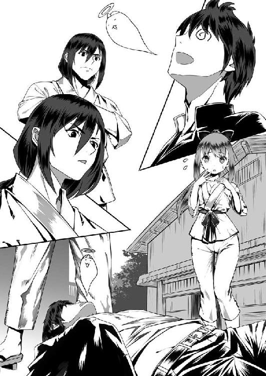
先に立ち上がったミナモトが、こちらを見下ろしていた。やや血の気が失せた唇が、小刻みに震えている。
そんなミナモトの背後に、弓奈がいた。
目が合う。
両手で口元を押さえた弓奈は、言葉もなく立ち尽くしていた。
ジャムカに良く似たいけ好かない男と、散々に自分をコケにしてくれた女とが、揃って恐れおののいた顔つきになってこちらを見つめていることに、わずかにテムジンは胸がすくような思いを抱いた。
しかしすぐに、
（こいつはまた、先が思いやられてきたぜ......）
昨晩と、今と、立て続けに味わった同じ痛みがテムジンに無情な現実を突きつけてくる。
武勇という最大最強の武器を否応なしに奪われてしまった自分が、この右も左もわからぬ異世界で己を曲げずに生きていくのは、並大抵のことではなさそうである。
常に死と隣り合わせの戦場を駆け巡っているほうが、まだしもたやすいのではないか。
「天神の与えたもう試練......だと？ ふざけやがって」
まさしく今、テムジンは人生で初めて経験するとてつもない試練のただ中にあることを実感せざるを得なかった。
４
「......で、おかしくなった蒼原の学校生活をサポートするのに、俺たちも力を貸せと」
『学生食堂』という看板のかかった大広間──子供の頃に見たケレイトの長トオリルのゲルよりも広い──に何十と並べられた円卓の上に頬杖を突いた男が、どこかとぼけたような声で言った。
この男、名前をホウジョウというらしい。例によって、耳慣れぬ響きの名である。
「元はと言えば北条くんたちが草馬を妙なことに引き込むから、関係ない私がこんな目に遭ってるんじゃない」
円卓をぐるりと囲む形で、そこにはテムジンも含めて五人の人間が着座していた。
まずホウジョウ、その向かいに弓奈。
「とにかく、私ももううんざりなの。なんとかして！」
激しく卓を叩き、腰を浮かせた弓奈がホウジョウに詰め寄った。
「いやいや、弓奈ちゃん。そらちょっと乱暴やわ」
ホウジョウの右隣にいた、カズハルがしていたのと同じような装飾品（色は違うが）を顔に乗せた髪の短い女が、弓奈をなだめるように肩を押さえる。
「乱暴じゃない。綾ちゃんにだって責任の一端はあるんだからね」
アヤ、というのが女の名前らしいとわかったところでテムジンはひとつ気がついた。
どうもこの世界の人間たちも、人の名前とともに何か称号のようなものを呼ぶことが多いということだ。
ホウジョウ・クン。アヤ・チャン。
他にも耳にしたのは、「サン」とか「センパイ」。「センセイ」などというのもあったか。
これはテムジンたち遊牧民の言葉で言うところの「バアトル」や「カン」、もしくは「カーン」というような称号と同じようなものなのかもしれない。
いずれモンゴル高原を制覇した暁にはテムジンも帝王にふさわしい名に改め、誰はばかることなくカーンの尊称を用いて大軍に号令を発し、タタルやオングートをそそのかしては高原に乱を広めようとする憎き金帝国を蹂躙してやろう......などという野望を抱いていたりするのだが、まぁそれはともかくとして、
「責任とか言われても......うちが何したん」
「草馬にナントカってゲーム勧めたの、綾ちゃんだって聞いたわよ。そのゲーム遊んでから、草馬はおかしくなっちゃったんだから」
「話変わってるって！ さっきは転んで頭を打っちゃったせいで記憶障害を起こしてるって言うてたやんか」
女というのは、どこの世界でもやかましいものだ。
つまらん言い合いを始めた弓奈とアヤに、テムジンがうんざりとした目をやっていると、
「依子ちゃんからもなんとか言うてよ」
弓奈の剣幕にたじたじとなったアヤが、この卓にいる最後のひとりに助けを求めた。
わざわざホウジョウとテムジンの間にある狭い隙間に身を滑り込ませるようにして、小さい女が座っていた。この女が、アヤの言うヨリコなのは疑いない。
で、その小さい女ことヨリコであるが、これがさっきから産まれたばかりの子犬のような目をじっとテムジンに向けているのであった。正直、気になって仕方がない。
「おい、アヤとやらが呼んでるぞ。あっちを向け。俺様を見るな。......なんなんだ、さっきから変な目でじろじろと。食い物ならやらねぇぞ」
気味が悪い思いで口を開いたテムジンは、目の前にあった飯の器をさっと左手で持ち上げながら言った。
「と、取ったりしないよぉ......」
ヨリコが、体と同じく小さな小さな声で言って、首をふるふると動かした。心なしか瞳が潤んでいるようにも見えて、それがまた子犬そのものといった印象を与えている。
「......だったらいい」
器を卓に戻したテムジンは、中に金属の匙を突っ込んだ。
「依子ちゃんにまでスゴむんじゃないわよ！」
キンキンとうるさい弓奈の声は無視し、中身をすくった匙を口へ。
粒状になるまで細かく挽いた肉とむにゃむにゃした歯ごたえの白い塊を香辛料で味付けしたとろみのある煮汁でまとめ、それを炊いた米にかけて食うという料理だった。
これが、うまい。実にうまい。
米などという物は、本当にごくごくまれに金やら吐蕃、もしくはモンゴル高原のずっと南に住む連中が交易の途中に持ち込んでくるのを買うだけで、普段はほとんど口にすることのない食い物なのだが、この辛い煮汁と米との相性の良さは驚愕すべきものであった。
ただでさえ昨晩から今まで、まともな食事を摂っていなかったこともあって、余計にうまく感じられる。
ヨリコはともかく他の奴が横取りしてくるかもしれないと、テムジンは全方位に睨みを利かせながら大急ぎで匙を動かしてこの辛味肉飯を口の中に詰め込んでいった。
「......ふう、食ったぜ」
顔より大きな器からはみ出さんばかりに盛られていた飯を、煮汁の一滴まで残さず胃袋に収めたところで、テムジンはようやく何かひとつ満たされた心持ちで背当て付きの椅子にふんぞり返った。
「......やっぱりソウちゃん......変」
と、あっちを向けと言ったにもかかわらず、結局最後までテムジンが飯を食う様をじっと見ていたヨリコが、ぽつりと言った。
「ソウちゃん、辛いの苦手なのに......麻婆豆腐丼なんか食べてる」
「確かになぁ......」
そんなヨリコの言葉にうなずいたのは、ホウジョウであった。
「何が変だ。人が飯を食うのがそんなにおかしいか。ここは、飯を食うところなんだろうが。周りを見てみろ、みんな何かしら食ってるぞ」
くちくなった腹をさすり、テムジンは言った。
「......あー、確かにこりゃめんどくさいわ。こいつ、午前中はどうだったんだ？」
そんなテムジンの物言いを受け、ホウジョウが重たい声を出した。
天に向かって逆立つ髪を手でかき回しながら弓奈を見る。
「......最悪よ」
こちらもどっと疲れた様子で腰を椅子に戻した弓奈が、目頭を揉んで答えた。
そこからしばらくの間、弓奈の恨み節が続いた。
言われているテムジンからすれば、面白くない話だ。
「部活の朝練で揉めて、なんとか教室まで引っ張ってくれば鞄の中はスマホしか入ってないし......」
持ち物について細かい指示をしなかったのは、弓奈の落ち度である。テムジンは、言われたとおりにしただけだ。
「授業が始まれば始まったで、ちっともおとなしくしてないし。落ち着きのない幼稚園児じゃないんだから！」
それについても異論はある。
この学校という場所が何をする場所なのか、テムジンは知らなかったのだから。
ここが、似たような年の男女を一カ所に集め、年配者から様々な知識や技術を学ぶ場所であること。そういう場所のことを指して「学校」というのだと知ったのは、ついさっきのことだった。
「最初から説明しなかったてめぇが悪い。見たことのねぇ場所にあれこれ興味が湧くのは当たり前じゃねぇか」
「そうでも！ まわり見たらみんな静かに座って話聞いてるんだから、そうするもんだってことぐらいは薄々わかりそうなもんでしょ！」
「......知らねぇな。人は人、俺様は俺様だ。他人の顔色なんざいちいちうかがってたら、何もかもが手遅れになっちまう。そういう場所で、俺様は生きてきたんだ」
「またそういう......。もうわかったでしょ、北条くんも綾ちゃんも依子ちゃんも！ 確かに頭を打ったのが直接の理由かもしれないけど、記憶がおかしくなるにしたってなりようってもんがあると思わない!?」
また、弓奈が身を乗り出した。
「もう少し、静かに喋れねぇのかてめぇは。殴られたところに響いてしかたねぇ」
弓奈がひと騒ぎする度にズキズキとうずく頬をさすって、テムジンは言った。
弓奈とミナモト、昨夜と今朝と立て続けに二人にやられた部分は青黒くアザになってしまっていた。
勝手に水を流して汚物をどこかへやってしまうという驚きの仕組みになっていた厠に貼ってあった鏡（凪いだ水面のごときアレだ）でそれは確認している。
「人のお金でお腹いっぱいになってる奴が、偉そうなことを言うんじゃないの！」
「飯との交換に銭を使うってことだって、ひと言も言わなかったじゃねえか！」
頬から手を放し、テムジンは弓奈を睨んだ。
「俺様たちの土地で銭なんざありがたがってるのは、金の文化にかぶれたクソ野郎どもばっかりだ。どうやらここも、そうみてぇだな！」
「誰がクソ野郎よ！」
一方で弓奈も退かない。互いの視線が交わり、火花が散りかけたところで、
「わかった、わかった！ はい、双方そこまで！」
強引にふたりの間に体を割り込ませてきたホウジョウが、大きく腕を振って言った。
「ここは、みんなが楽しく飯を食う場所だから、な？ ただでさえ今日の蒼原は学年中の注目の的なんだから、ここは双方こらえて。こらえて！」
「俺様は......」
「私は......」
「いいの！ いい！ ここは俺が預かります！」
これでは収まりきらぬと、尚も言いつのろうとしたテムジンと弓奈を再び遮り、ホウジョウが続ける。
「......本当の原因はともかく、蒼原が大変なことになってるのも、そのせいで弓奈ちゃんがしんどい思いをしているのも、よーくわかった。だけど、それで互いに噛みつきあったところでなんの解決にもならんでしょうが」
このホウジョウという男の声には、どこかちゃらちゃらとした軽さがあるものの、不思議と耳を傾けてしまう力があった。この男の話は聞いておくべきだと、頭のどこかでソウマの記憶が訴えているようにも感じられる。
「蒼原......じゃないんだっけ？ えーと？」
「......テムジン」
「オーケー、テムジン。まずはっきりさせておこうや。俺は、お前の味方。弓奈ちゃんの話を聞いて、お前の助けになりたいと思ってる」
「......」
ホウジョウがテムジンに顔を向け直して言った。
てらいのない、率直な言葉だった。しかも、弓奈のように「ソウマ、ソウマ！」とテムジンの存在を否定しない。まずはこちらの言い分を受け入れるというその姿勢も、好ましいものに思えた。
「とりあえずはまぁ......信じてやってもいい」
「そいつはありがとさん。......ただ、お前が戸惑っているようにこっちも戸惑っちまってるっていうことは、わかってもらえないか？ 特に弓奈ちゃんは」
するり、とホウジョウの腕がテムジンの肩に回された。
いつの間にか、気付かぬうちにヨリコとホウジョウのいる位置が入れ替わっている。
「それも......そうかもしれねぇな」
ちら、と弓奈を見やると、あからさまに肩の荷が下りたというような表情になっているのがわかった。
「だろぉ？ だったらさ、ここはお互いに協力していこうじゃないの。お前は、とりあえず今日家に帰るまでの間はもう余計な騒ぎを起こさない。もちろん、おとなしくしてくれている間に俺たちも色々と策を考える」
回した手で、ぽんぽんとテムジンの肩を叩くホウジョウ。
「策、か」
「策だよ、策。こう見えてね、俺ってばけっこう役に立つよ？ 少なくとも、蒼原は俺のことを認めて頼ってくれてた」
「ソウマが......」
テムジンの趣味ではないが、ソウマが奴なりのやり方で立ち回って一族を守ってくれているということはテムジンも理解している。その手腕については、これまでの経過を見るに一目置いてやってもよかった。
そのソウマが頼るというのだから、ホウジョウもなかなかやり手なのかもしれない。
少なくとも、ぎゃんぎゃんとうるさいだけの弓奈のみを頼みにこの異世界を生きていくよりは、まだ目があるように思う。
「いいだろう」
テムジンは、決断した。
夜になった。
テムジンはまた、ソウマの部屋に戻ってきていた。
暗い部屋の中、寝台の上に寝転んでテムジンは今日の出来事を思い返していた。
食堂でホウジョウと取引した後、テムジンは誠意を見せて約束を守った。
騒ぎは、起こさない。
だが、何か新しい見知らぬものが目に入れば好奇心を抑える自信はない。というか、つもりもない。
ならば約束を守るためにはどうするか？ 答えは、簡単だった。
「寝てりゃあ、何も見えねぇし何も聞こえねぇ」
教室という学びのために設けられた部屋の中、そこが以前からソウマに割り当てられていた場所だという小さな机に突っ伏して、テムジンは寝た。
うまい飯をたらふく食った後のことである。睡魔はすぐに訪れた。
夕方、学校に集っていた若者たちがその日の課業を終えて家路につくその瞬間までをテムジンはしっかりと休息を取ることに費やしたのである。
そのおかげもあって、今はすっきりと目も覚めている。気持ちも落ち着き、こうして考え事をするには都合が良かった。
わずか一日ではあるが、この異世界で過ごしてみてわかったことがある。
それは、恐らくこの世界には......少なくとも目で見える範囲においては、戦がないのだろうということだ。
学校に集う者、街を歩く者、今日目にしたすべての人間が短刀ひとつ備えていないのがその証であった。
戦がなければ、人は富む。皆、奪い奪われることに怯えることなく日々を過ごし、誰も飢えに苦しむことなく、穏やかに生きることができる。
なるほど、ソウマがこんなふやけた体で生きていけるのも納得であった。
朝、テムジンと立ち会ったミナモトが、何かの武術を修めながらもその技にかけらも殺気がない理由もよくわかる。
（いずれは俺様もそうなる......のか）
ここに長く留まれば、そうなってしまうかもしれない。平和な生活を謳歌する一方で、牙を抜かれて戦う術を忘れる......。
それは、戦いこそがすべてと言っても過言ではない生活を送ってきたテムジンには、まるで想像がつかない暮らしだった。
では、いずれ元の世界に戻るのだとして、その時はどうする？
無論、まずは戦うだろう。父の仇であるタタルを討ち、裏切り者のタイチウトを討つ。そうしたら、ジャムカと決着をつける。父への恩を忘れてでかい顔でのさばるケレイトのトオリルも片付けねばなるまい。
そうなれば、大きく成長したテムジンとその一族を脅威に思い、メルキトや金が必ずや立ちはだかってくるだろう。これも容赦なく討ち滅ばさねばなるまい。
では、その後はどうする？
打倒すべき敵がいなくなってしまったその瞬間から、何をすればいい？
そこまで考えた時、テムジンはハッとして身を起こした。
（偉大なる天神は......その時のことを俺様に教えようというのか？）
すべての敵を倒し、老人から赤子までもがテムジンの前にひれ伏した時、それは即ちモンゴル高原の全部民がテムジンの〝家族〟となることを意味していた。
家長たるテムジンは、彼らの生活を守り、行く道を示さなければならない。
敵がいない世界で、やるべきことは何か？
まずは奪い合う必要のなくなった土地に部民たちを配し、住まわせる。そこには、生活の基盤となる街が生まれるのだろう。
次は、その街と街を結ぶための道を整備し、交易の荷車が安全に行き交うことができるようにする。交易そのものにも、誰かが暴利を貪ったりしないように決まりや掟を作ってやる必要があるはずだ。
そして、そうやって培った知恵を次の世代の子供らに伝えることも必要だ。
「運命......天神の試練......」
口に出してつぶやくと、目の前に覆い被さっていた分厚い天幕が、さっと引き上げられたような気がした。
今日目にしたもの。そしてこれから目にするもの。何もかも、いずれテムジンが覇業を成し遂げてカーンの冠を戴いた後に為すべきことを、天神は示しているのではないか。
もしそうだとすれば、明日からはもう少し認識を改めてこの世界を見る必要がある。
そんな考えに至ったところで、
「なんて......めんどくせぇ......」
テムジンは再び寝台に倒れ込んだ。
これまで自分が自由に、面白く生きていくことだけを考えていたテムジンにとって、これは確かに途方もない試練なのかもしれなかった。
ううむ、と唸ってテムジンは頭をかいた。
と、
「おう、キヤトのテムジン。お帰りかい？」
不意に部屋の扉が開いたのは、その時だった。
日中どこかへ出かけていたらしいカズハルが、逆光の中でテムジンを見下ろしている。顔の装飾品が、廊下の明かりを反射して鈍く光った。
「......なんの用だ。俺様は今、大事な考え事を......」
寝転んだまま答えかけたテムジンに、
「だったら、移動しながらにしてくれ。こっちも色々と予定があるんだよ」
一歩、部屋に踏み入ってきたカズハルが、強引にテムジンの腕をつかんだ。
自分の行動を誰か他人に縛られるのを何よりも嫌うテムジンであるが、さすがにもうこの体では力ずくでどうにかなるものではないと悟っている。
「どこへ連れて行くつもりだ」
せめてもの抵抗につかまれた腕を振り払い、テムジンは自分から寝台を降りた。
「お前に見せたいものがある」
別段気分を害した様子もなく、あっさりと言ったカズハルが踵を返した。
「わざわざ俺様が付き合ってやるんだ。つまらねぇものなら承知しねぇぞ」
それがまた妙に癇に障り、テムジンが吐き捨てるように言うと、
「なに、そうイキりなさんな。お前の未来を見せてやろうってだけだ」
振り返ったカズハルが、にやりと笑った。
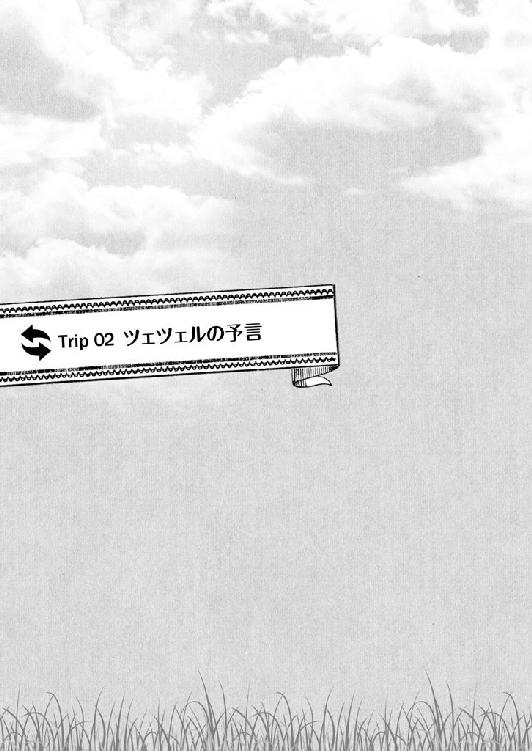
ツェツェルの予言
１
「出してくれ」
和治が運転手に短く告げると、運転手は無言で小さくうなずいてサイドブレーキを倒した。黒塗りの公用車が静かに滑り出す。
和治の隣には、息子の顔をした男が乗っている。
運転手は、男の正体をまだ知らない。当然だが、和治の息子、蒼原草馬だと信じている。
「悪かったな。ついでに息子まで拾ってもらって」
バックミラー越しに何度も視線を投げかけてくる運転手に向かって、和治は言った。
「あの......」
対し、顔に疑問符を浮かべた運転手が何かを言いかける。
「ちょいと親子同士、腹割って話したいことがあるんだ。着いたら知らせてくれ」
その機先を制し、運転席の背面に埋め込まれていたタッチパネルを操作した。
要人の送迎や極秘の会談にも用いる特注車である。運転席と後部座席とは厚さ二センチの透明な強化ガラス板で隔てられていた。スイッチひとつでそのガラス版の内側に挟まれている液晶シートに電流が流れ、一瞬で運転席側からはまったくこちらが見えない濃いグレーに変化するのだ。
同時に、特殊な低周波と車の内装材を組み合わせた遮音装置と盗聴防止装置も作動して、後部座席で交わされる会話の内容は当事者たち以外には聞こえなくなる。
「これで向こうの奴に気を遣わず話ができる」
タッチパネルにそれらの装置が問題なく作動していることを示すアイコンが表示されるのを確認して、和治は隣の男──息子、草馬の肉体に乗り移ったテムジンこと若き日のチンギス・カーン──に向かって声をかけた。
「たった一日過ごしただけだが、驚かされることばかりだぜ。この荷車はどんな仕組みで動いていやがるんだ」
そのテムジンは、生まれて初めて乗り込んだ自動車に心底驚きつつ、あちこちに好奇心に満ちた視線を飛ばしていた。
「電気自動車ってんだ」
「デンキジドウシャ？」
和治の言葉を、テムジンが妙なイントネーションで繰り返した。
「こういう字を書く」
着ていたスーツの内ポケットから手帳とペンを取り出し、和治はまっさらのページにさらさらと漢字を書き付ける。
首だけ寄せてきたテムジンが、手帳をのぞき込んだ。
「......ジ？」
「そう、字。文字。......ああ、そうか。あの時代のモンゴルにはまだ文字で何かを記す文化は無かったんだったな」
「......いや、読める。だいたいは意味もわかる」
「何？」
テムジンの意外な返答に、和治は思わず目を見開いた。それを見たテムジンは、一瞬得意げな顔になってから、
「ソウマの記憶ってやつだ。どうやらこの頭の中に、読み書きの知識がこびりついているらしい。それで、わかるのよ」
こめかみのあたりを、指でちょんちょんとつつく。
「......こうして日本語で会話ができてる時点で、なぜと問うだけ無駄な話か」
理屈は考えず、和治は事実だけを飲み込むことにした。
言って、和治は「電気自動車」と記した横に「文字」と書き加えた。
「文字......か。便利なもんだ」
テムジンが、顔を上げて和治を見た。
「今日、弓奈の他に何人かの人間とも話をした。名前も聞いた。そいつらの名前を文字とやらで表すとどうなる？」
「変わったところに興味を持つな」
「いいから、見せろ。今日聞いた名前は......」
「いや、いい」
今日、テムジンが出会った人間の名を口にしようとするのを和治は手を上げて制した。
そしてすぐに手帳の新しいページを開き、漢字を書き込んでいく。
「源」、「北条」、「綾」、「依子」......。
他にもいくつか。「学校」、「道路」、「トイレ」、「空手」......。
「読めるか？」
一通り書いてから、手帳をテムジンに渡した。
手帳を手に取ったテムジンが、食い入るように開いたページに目を落とす。
ややあって、
「てめぇ......。どういうことだ？ どうしててめぇが、俺様が今日見聞きした物やら人やらのことを知っている？」
書き込んだ名詞の関連性に気付いたらしく、鋭い目つきで和治を睨んだ。
ふっと笑って、和治は首を振った。
「お前さんの行動は、俺の部下によってすべて監視されている。空手部で一悶着起こしたことも、授業中にフラフラ出歩いて弓奈ちゃんをキレさせたことも、水洗トイレに腰を抜かしたことも、昼飯に麻婆丼を食ったことも......何もかもだ」
「馬鹿な......。そんなわけが......」
「俺たちはその道のプロ......達人なんだ。それに、この世界にゃお前が想像すらできないような知恵や技術が山ほどある」
「また怪しげな呪術を使ったってことか」
「この車がこうして動いているのだって、お前にとっちゃ呪術と変わらんだろうから、そう思っといてもらっていい」
唸ったテムジンが、手帳を和治の膝元に放り投げた。
「気に入らねぇな。そうやって見えない場所から、俺様がじたばたみっともなく足掻くのをあざ笑ってるってわけか」
「そう卑屈になりなさんな」
手帳を拾い、ポケットに戻しながら和治は苦笑した。
「お前が今日会った北条くんの言葉じゃないが、俺たちも基本的にはお前の味方だ。だからこそ、お前に万が一のことが起きないように見守っていた......そう思ってもらいたい」
「どうも信用できねぇな。てめぇはまだ、知っていることを全部話しちゃいねぇ」
「嫌われたもんだな。一応これでも、その体の持ち主の親父だぜ？ 息子の運命にだって関わることで、嘘をつくつもりはない」
「てめぇの命惜しさに息子を見捨てる親なんざ、俺様の世界じゃ珍しくもねぇぞ」
そう言って、テムジンは座席に深く腰掛け直した。腕を組み、目を閉じる。
どこかでボタンを掛け違えてしまったようだと、和治は胸の内で嘆息した。
北条の申し出にはあっさり乗っかった割に、同じことを口にした和治にはなびいてこない。単純な性格のように見えて、人の話の中に紛れるある種の匂いを敏感にかぎ分ける嗅覚がテムジンには備わっているのだろう。
「......まぁいいさ。この世界には、『百聞は一見にしかず』ってことわざがあってな。人の話を一〇〇回聞くよりも、一目でも自分の目で確かめたほうがよくわかる......ってな意味なんだが、そのほうがお前の性根に合っているかもしれん」
じっと黙って目を閉じたままのテムジンに向かって、和治は独り言のように言った。
答えは期待していなかったが、テムジンは「ふん」と鼻を鳴らすことで応じてきた。
「その一見ができる場所までは、しばらくかかる。なんか考え事をしてたとか言ってたな。もう邪魔しないから、ゆっくり考えてくれ。それか、寝てろ」
冷静なつもりでいても、やはりどこかに焦りがあったのかもしれない。その気持ちが、テムジンの嗅覚に引っかかってしまったのだろう。和治は息を吐いた。
目的地に着くまで時間があるのは、同じ車に乗る和治にとっても同様だった。
次に対応を間違わないためにも、もう一度原点に立ち返ってみるのもいいかもしれないと、和治は考えた。
（それにしても......七〇年越しか。親父も親父だし、お袋もお袋だ。とんでもない宿題を押し付けてくれやがって）
流れゆく車窓の風景に目を転じ、しばらく眺めていると、いつしかその流れは時間に逆行し始め、和治の意識を過去へと誘っていく。
七年前に死んだ和治の父親である蒼原絃司が、自身の死期を悟った時に唐突に語り始めた長い長い話を、和治は思い出していた。
２
蒼原絃司陸軍中尉が、満州国の首都にして自身が所属する関東軍総司令部の置かれた新京を発ったのは、一九四三年の一○月であった。
鉄道を乗り継ぎ、一路西へ。中国と国境を接する熱河省（現在の内モンゴル自治区）は赤峰へと入り、そこから更に道なき道を進んで、西喇木倫河という長大な大河の北にある林西という目的地へ到着した時には、月が変わっていた。
当時、日本は太平洋戦争のまっただ中である。
前年の六月に山本五十六司令長官率いる連合艦隊が、ミッドウェー海域において米機動部隊を相手に虎の子の航空母艦四隻を失うという大敗を喫し、マレー作戦および真珠湾攻撃から始まった日本軍の快進撃にもついに陰りが見え始めた......そんな折のことだ。
この時絃司は二三歳。陸軍士官学校を優秀な成績で卒業して関東軍へと配属されてから、三年が経過していた。
その彼が総司令部を離れてこんな辺境を訪れたのは、もちろん任務の為であった。
任務の内容をひと言で言えば、情報収集だ。
林西のような辺境地域は、満州国の行政機関である国務院の目はほとんど届いておらず、関東軍総司令部もそれは同様であった。
ではどうやって辺境の統治を行っていたのかと言えば、比較的大きな赤峰や承徳といった地域から派遣された官僚が、現地の豪族や有力部族と接触して形ばかりの出張所を置いた後、ほとんど全権委任の形で行政を代行させていたのである。
その為、こうした辺境地域には国境を接している中ソの工作員やスパイが常に跳梁しており、日本の後ろ盾で建国された満州国を転覆させ、ひいては日本をも大陸から追い出そうと日夜陰謀をめぐらせていると言われていた。
絃司は、現地に赴いてこうした不貞な工作員たちの情報を収集し、場合によっては現地の機関──つまりは、軍の息がかかった豪族たちだ──と連携してこれを摘発する任務を帯び、単身乗り込んできたわけである。
到着した絃司は、林西一帯を治めていた部族によって盛大に歓待された。
彼らは元々遊牧民であり、一九世紀の終わり頃にこの辺りに定住したのだという。
「わしらは、あの偉大なチンギス・カーンの子孫なんじゃ。チンギス・カーンがこの地に行幸された折、この地の娘を見初められて子を設けられた。その子は長じて後、カーンの弟君であるカサル様より直々に、ここいら一帯を治めるようにと命じられた。その子こそ、ワシら一族の祖先なのよ」
絃司を歓迎する宴の席で、一族の長老である老人は得意げにそう語った。
その話は、絃司の好奇心をいたく刺激した。
なぜなら絃司は元々歴史学者志望であり、特に中央アジア史を学びたいと考えていたからである。しかし、経済的な事情で大学進学を早々に諦めざるを得ず、苦労する両親のために軍で一旗揚げようと士官学校の門を叩いたのだ。
関東軍への配属を強く希望したのも、子どもの頃からの憧れである大陸の風に吹かれながら仕事をしたかったからだった。いずれ退役後には、この地に留まって余生を研究に費やしたいという密かな願いもあった。
そんな絃司にとって、かのチンギス・カーンに連なるという一族と共に過ごしながら彼らの文化を学ぶ機会をも得られるという今回の任務は、本当に夢のような話だったのだ。
後に戦争が日本の敗戦によって幕を閉じた時、実はこの任務そのものが優秀な絃司を妬んだ同僚が巧妙に仕組んだ左遷人事だったことを知った絃司であったが、その時彼は自分を陥れた同僚を恨むどころか、手を合わせて感謝すらしたという。
ともかく、蒼原絃司はこの林西の地で水を得た魚のように精力的に働いた。
まず手始めに行ったのは治安の改善であった。
「工作員やらスパイやらがまず接触するのは、金に汚く、すねに傷持つならず者と相場が決まっている。まずはそういった輩を一掃し、この地の蒙古人に日本と共に歩む道を行くほうが幸せで豊かな生活に繋がるのだと理解してもらうことだ」
軍が用意した官舎も使用人も断り、常に遊牧民たちと寝食を共にし、その仕事を手伝い、彼らの生活や文化を尊重することで絃司は彼らの信頼を勝ち取っていった。
その頃の絃司は良くも悪くも有能で情熱的な帝国軍人であり、『五族協和』──日本人、漢人、蒙古人、満州人、朝鮮人が共に手を取り合って国を栄えさせようという精神──という満州国の建国理念を頭から信じていて、またその理念を現地の人々に説いて回ることに労力を惜しまなかった。
誠実にして勤勉、深い知識と武勇をも併せ持った絃司はいつしか自然と一族の大切な仲間として迎え入れられ、次の春が来る頃には当初の目的をほぼ達成するという大きな成果を挙げていた。
が、順風満帆に思えた絃司にとって大きな試練の時が訪れる。
絃司の活躍によって現地の利権と情報網を失いつつあった中国国民軍の一部勢力が、業を煮やした末に国境ともっとも近い場所にある村へと侵攻してきたのである。
国民軍などと言っても中国は中国で満州国同様に辺境地域の統制は取れておらず、この時攻め込んできた連中も、要は近代兵器で武装をした山賊のような存在であった。
中央に援軍を要請しているような時間はなかった。かと言って、このまま手をこまねいて見ているわけにもいかない......。
絃司は、決断した。近隣に住まう全部族を糾合して軍を編成、自ら司令官として彼らを指揮し、敢然とその〝山賊〟どもに立ち向かった。
激戦は七日間に及んだが、絃司の指揮は的確だった。ソ連と独自に通じて密輸した最新の武器を持つ〝山賊〟に対し、地の利を生かしたゲリラ戦と、蒙古人にとってはお家芸とも言える騎馬部隊による一撃離脱戦法を組み合わせることで装備の不利を覆し、最終的には捕縛した〝山賊〟の首領や幹部たちを殺人・強盗・傷害の重罪人として新京の軍刑務所に叩き込んだ。
「ゲンジ、そなたは真の勇者だ。我らはそなたにバアトルの称号を贈り、その功績を未来永劫伝えていくことを約束しよう。ゲンジ・バアトル、願わくばこれからも我らと末永き友誼を結んでくれ」
すぐさま、街をあげての盛大な戦勝の宴が催された。
その宴の席で、絃司はひとりの少女と運命的な出会いを果たす。
少女の名は、オヨン・ツェツェル。この年、一五歳。
チンギス・カーンがこの地の娘に産ませた者の血を最も濃く受け継ぐ家の末娘であったツェツェルは、生まれながらの神懸かり......即ち霊媒体質であるという話だった。
その素養を見込まれたツェツェルは、彼らの信ずる「天神」の声を聞くシャーマンとなるべく育てられており、このほど一年にも及ぶ山ごもりの修行を終えて、ちょうど戦いが終わった時に山から戻ってきたのだと絃司は聞かされた。
絃司のもとに挨拶に訪れたツェツェルは、土地の言葉で「智恵の花」を意味する名前どおりに知的な澄んだ瞳でまっすぐに絃司を見つめ、野辺に揺れる花のような愛らしい笑みを浮かべて、開口一番こう言った。
「ゲンジ様......。あなた様こそ、大いなる天神がこの地へと導きたもう方。偉大な帝王の運命を切り開き、世界を救う礎を築かれる方です」
と。
最初、絃司はこの言葉を〝山賊〟との戦を勝利に導いた自分を大げさに褒め称えてくれただけだと思っていたが、後々になってそうではなかったことを悟る。
そもそも、その瞬間に限れば話の内容などどうでもよいと思っていた。
一目で絃司は、ツェツェルに心奪われてしまっていたからだ。
「つかぬことをうかがいますが、シャーマンというものは......生涯に夫を持ったり、子を成したりしてはいけないのでしょうか？ あ、あの......お、俺の国では、神の声を聞く巫女の中には、そういう掟を課された者もいるのですが......」
完全に放心してしまったような顔で、いきなり不躾にもほどがあることを口走る絃司に、その場にいた誰もが耳を疑った。
しかし、言われた側のツェツェルは先ほどにも増して華やかに相好を崩すと、
「......いいえ。そんなことはございません。私もいずれはゲンジ様のように強く、賢く、実のある殿方を伴侶として、幸せな家庭を築きたく存じますよ」
ゆっくりと首を振って言った。
「で、では......今すぐでなくてもよいですから......。俺......いや、私のことをもっと知っていただいた上で、もしもあなたがよろしければ......私と一緒になることを考えてはいただけませんか？」
そこへ続けて放たれた絃司の言葉に、宴席は一瞬水を打ったように静まりかえり......。
「皆、酒を取れ！ 乾杯だ！ 今日はなんとめでたき日なのだ！」
「ゲンジは真に我らの兄弟になることを望む！ 血を交わらせることを望むと言うぞ！」
「ツェツェルの身を案じたまま亡くなられた父御も、喜ぶであろう。我らの偉大なバアトルが夫となるならば、なんの異論もなかろうぞ！」
次の瞬間、歓喜の声が爆発した。
それから半年、絃司とツェツェルのふたりは、現代の感覚で言えばけっして長いとは言えない時間ながらも丁寧に互いの愛を育んだ。
これは遊牧民たちの文化から見れば異例のことであった。
遊牧民の子供たちは、息子も娘も一三にもなればもう結婚適齢期とみなされる。その結婚相手は娘の父親が見つけてくるという形が多く、婚姻の条件や日取りが決まったところで初めて娘は父から、
「お前は誰それのところの二番目の息子に嫁ぐことになったから、良き妻となれるように準備を始めなさい」
と、下手をすればまだ互いに顔も知らないまま将来の夫の名を告げられるのである。
こうして新郎も新婦も互いに一二や一三、結婚のなんたるかも家庭を築くということがどういうことかもわからぬままに夫婦となるのが常であった。
それと比べれば、劇的な出会いもさることながら、いわゆる交際期間というものを経ての結婚はとても珍しいパターンだったのである。
ともあれ半年後、長老の前に呼び出された絃司とツェツェルはお互いの意志が変わらないことを確認し、ツェツェルが一六歳の誕生日を迎えたその日に結婚した。
いずれ一度は日本に戻って親族に話をしなければならない絃司の身の上を思った長老の厚意で仮の住まいを用意してもらい、そこでふたりは穏やかに新婚生活を始めた。
生活の中には当然、夜の営みも含まれる。
互いにぎこちなく初夜を終えた時のことだった。
絃司の胸にもたれかかって寝息を立てているツェツェルの髪を、なんとはなしに絃司が弄んでいると......不意に急激な眠気が襲いかかってきた。
せっかくの初夜、せめて新妻の愛らしい寝顔を愛でながら過ごしたいと、なんとか絃司は襲い来る睡魔を振り払おうと奮闘したのだが、無駄な努力だった。
闇に飲まれるように意識を失って次に目覚めた時、そこで絃司が目にしたのは......。
３
「......ふと意識を取り戻した時、俺は母さんが繕ってくれた寝間着ではなく、やけに重たい遊牧民の服を着て立っていた。デールというんだ。襟の部分には色鮮やかな糸で何本も縫い取りが入っていてな」
自宅のベッドに横たわった父親の絃司が語ることを、和治はなかば呆気にとられながら聞いていた。
壁の時計に目をやると、時刻は午後八時を回っている。
階下の客間では今頃、絃司が戦後に一代で築き上げた莫大な資産の分配をめぐって、親族たちが互いにつまらぬ牽制を飛ばし合っている頃だろうか。
和治には、年の離れた姉がふたりいる。ひとり、兄もいた。
兄だけが過去形なのは、既に鬼籍に入っているからである。聞いた話では、和治が生まれる前に難病を患って他界したらしい。
生きている姉たちも和治に物心が付いた頃には、既に絃司がこれと見定めた家に嫁いでおり、姉弟で仲良く遊んだというような記憶はあまりない。
そのため、父も母も不惑を越えてから生まれた和治は、末っ子であるにもかかわらずほとんど一人息子のような扱いで育てられた。
両親の愛情を一身に受けながらも途中で少々道を踏み外しそうになり、色々と紆余曲折はあったものの最終的には父の望んだ道へと進んだ。
今では、父の跡目を継ぐ覚悟もできている。
話があるからと呼ばれたのも、病に倒れ余命幾ばくもない父が後のことをあれこれと言いつけておくつもりなのだろうと思っていた。
ところが聞かされたのは、まさかの母との馴れ初め話であった。父が戦時中、満州国で結婚したことはいつか聞かされた記憶があったが、まさか母親が今で言うモンゴル人で、嘘か誠かチンギス・カーンの子孫であるという話は初耳も初耳であった。
しかもどうやらそこまでは言わばまだ前置きで、本題はこの先だと言うではないか。
これは長くなるなと腹を決めた和治は、腰掛けていた椅子に深く座り直した。
あとで息子の草馬と一緒にゲームで遊んでやる約束をしていたのだが、今夜は諦めてもらうことになるかもしれない。
「......その豪華なデールを着せられた俺の目の前には、何十人という人だかりができていた。その中のひとりが、俺に気付いて言ったんだ。『お待ちしておりました。どうぞお側へ』とな」
「ちょっと待ってくれ親父。いくらなんでも訳がわからない。なんの話だ？」
「俺もその時は、訳がわからなかった。混乱し、促されるままに人垣をかき分けて前へ前へと進むしかなかった。人垣が途切れると、目の前に天蓋のついた大きなベッドがあってな、そこにひとりの老人が横たわっていた。ちょうど、今の俺みたいにな」
絃司の首がわずかに動き、和治の顔を見た。
死病に冒され、昔の面影など微塵も感じられないほどにやせ細っていた絃司であったが、その眼光だけは以前と変わってはいなかった。瞳の中に、はっきりと理性の光が灯っている。絃司は、けっして耄碌して支離滅裂なたわごとを口にしているわけではなかった。
「......で、その老人ってのは誰だったんだ？ 良くしてくれた長老さんか？」
「いや、違う」
首を振って、絃司は視線を天井へ戻した。
しばし目を閉じ、二度ほど大きく呼吸をした。
「......ここから先の話は、今のお前にはとうてい信じがたい内容だろう。だが、断じて俺は嘘や妄想を話すわけではない。あとで母さんに確かめてもらってもいい」
それから、ゆっくりと上体をベッドの上に起こしながらもう一度和治を見た。
慌てて立ち上がった和治が、絃司の体を支える。
「わかった！ ちゃんと聞くから、寝ててくれ。医者は絶対安静だっつってんだよ」
「心配するな。お前に後を......俺の仕事と、草馬のことを託すまでは死ねないようになっているはずだからな」
「親父！」
「大声を出すな。下にいる母さんたちが心配するだろう。いいから座れ」
枯れ木のような絃司の腕が、和治の肩を後ろへ押しやった。
この腕にまだこれほどの力が残っていたのが、和治には驚きだった。押され、よろよろと後ずさった和治がもう一度椅子に座るのを見届けると、絃司はもう一回深呼吸をしてからスッと背筋を伸ばして居住まいを正した。
そして、また訥々とした口調で語り始める。
「俺が人垣の向こうで目にした老人こそ、お前や母さんの......そして後でわかったことだがこの俺にとっても遠い遠い祖先にして、一二世紀という時代で認識されていた〝世界〟のほぼすべてを手にした覇王だったのだ......」
「親父、ちょっと待て......」
「その名は......」
日本を遠く離れた地で妻を娶り、抱いた。
腕の中でまどろむ妻の寝顔を眺めつつ、自分も眠りに落ちた。
そして目覚めた場所は、長老が用意してくれたレンガ造りの質素な新居ではなかった。
広い部屋だ。
半年前、戦勝の宴を開いた村の集会場と同じくらいの広さがあるだろうか。
何がなんだかわからぬまま、天蓋付きのベッドと自分を押し出した人垣とを絃司は何度も首をめぐらせて見比べた。
人垣を形作る数十人の人間は、絃司にもなじみ深い遊牧民たちの伝統衣装を身に着けている。そして皆一様に顔を伏せ、その場に畏まっていた。
（ここは......どこだ？ 彼らは、誰だ？）
素朴が疑問が思い浮かんだ時、しわがれた声が絃司を呼んだ。
「余が説明してやる......。近くへ参れ」
ベッドに横たわる老人の声だった。
（説明してやると言ったか......）
老人のほうに向き直り、うなずくと、絃司は老人の枕元へと近づいていった。
「ふたりきりで話がしたい。皆は下がれ」
互いに囁き声でも会話ができそうなところにまで絃司が近づくと、老人がベッドの前で畏まる人々に言った。
人々の先頭にいた壮年の男が、「ははっ！」と老人の命にうなずき、居並ぶ人々を伴って広間を出て行った。
一気に人の気配が失せ、しんとした静けさが広間に満ちた。
と、
「......余の息子の顔をした男よ、余が誰であるかわかるか？」
老人が、妙なことを口にした。その顔には、わずかに笑みが浮かんでいる。
「わ、わかりません。村では......一度もお会いしたことがないかと......」
相変わらずいくつもの疑問が頭の中を駆け巡っていたが、何からたずねていいかわからず、結局、聞かれたことに絃司は素直に答えた。
「そうであろうな」
また、老人が笑った。
「余が誰であるかを答える前に、まずそなたのことを聞きたい。そなた、いずこから来た？ やはり、日本か？」
「そ、そうです。私は、蒼原絃司。あなたの仰るとおり、日本人です」
「アオハラ......。そうか......」
絃司が名乗ると、老人の顔つきが少し変わった。
浮かべた笑みの中に、とても懐かしい旧友と再会したかのような暖かな色が乗った。その顔つきのまま、老人は重ねてたずねてくる。
「そなた、子供は？」
「おりません。ちょうど今日、あなたと同じ遊牧民の妻を娶ったばかりなのです」
「ほう......。それは、ちと悪いことをしてしまった。だが、これも天神の定めたもう運命なれば......許せよ」
老人の物言いに、絃司は確信した。
やはり自分は眠っている間に何者か──恐らくはこの老人の手の者──によって、ここへと連れて来られてしまったのだ。
「ご老人、いい加減に種明かしをしてくださいませんか？ 家では、私の妻が帰りを待っているはずなのです」
寝込みを拉致されたことも、それを許した自分の不甲斐なさも腹立たしかったが、帝国軍人としての矜持でその気持ちをぐっとこらえ、絃司は言った。
「そうだな。あまり時間もないことだ。......ではまず、余の名を明かそう。余の名は、テムジン。今は、チンギス・カーンと名乗っている」
「......は？」
老人の言葉に、絃司は馬鹿みたいな反応しかできなかった。
一瞬の間があって、少しだけ頭を働かせるだけの冷静さが絃司に戻る。
（年のせいで惚けているのだな......。見たところ、六〇は越えていそうだが......）
が、そんな絃司の内心を読み取ったように、
「世迷い言を言っているつもりはないぞ。体は多少弱ってきたが、まだまだ頭ははっきりしておるつもりだ」
老人は重ねて言った。
「信じられぬのも無理はない。余には、そなたの混乱が手に取るようにわかる。だが、事実は曲げられぬのだ。......表を見るがよかろう」
「表......」
老人が、右手を持ち上げて指さしたのは、広間に外の光を取り入れるための窓だった。
一度老人のそばを離れた絃司は、その窓から言われたとおりに外を見た。
「こ、これはっ!?」
眼下に広がっていた光景に、絃司は息を呑んだ。
「そなたの今までいた場所に、これほどの馬がいたか？ あのように剣と弓で武装した兵たちが何万といたか？ 無数のゲルが平原を埋め、軍旗がはためいていたか？」
絃司の背に、老人の声がぶつかる。
確かに絃司の目には、老人が言ったとおりの光景が映っていた。
「逆に、そなたの住む街で目にするような物があるか？ 無かろう？ あろうはずがない。そなたは今、時間と場所を飛び越えて過去の世界に立っている。我が息子の体を借りて」
「そんな......あり得ない！」
「受け入れよ、ゲンジ。ここは、カラコルム。余が西域とその先にある国々を討つために築いた兵站の要衝であり、いずれは大モンゴル帝国の首都となるであろう場所だ」
さすがに話し疲れたのか、絃司が水を要求してきた。
和治が水差しの水をコップに注いで渡してやると、絃司は一息にそれを飲み干し、
「......信じるしか、なかった。俺は、一三世紀のモンゴルにいた」
再び気力を取り戻したように話を続ける。
「それで？」
正直言って、その時の和治は絃司の話に茶々を入れる気力も湧かなかった。
（まるでＳＦだな......）
和治の肩から力が抜けていた。
絃司にそんな趣味があったとは、ついぞ知らなかった。そう言えば以前、どこぞの巨匠が監督する映画へ出資したとかいう話を聞いたような覚えもある。
もしや趣味が高じて、映画のあらすじまで考えたのか？ 死ぬ前にそのあらすじを自分に伝え、ちゃんと完成させてくれと念押しでもするつもりなのではあるまいか？
（......それにしても、自分を主人公に据えるか普通）
恐らくこれが父とまともに話す最後の機会になるだろう、遺言を託されるのだろうと身構えていたこともあって、肩すかしを食らった感が凄まじかった。
それでも、これもまた親孝行のひとつと割り切り、忍耐強く耳を傾けた。
だが、そのうちに和治は、絃司の話にどんどん引き込まれていくのを自覚せざるを得なかった。
確かに荒唐無稽ではあったが、絃司の話は恐ろしく微に入り細にわたるものだった。
まるで見てきたようになどと言うが、まさにその言葉どおりだったのだ。
作家でも脚本家でもない絃司が、どちらかと言えば口下手で通っているあの父が、仮に密やかな趣味であったとしてもこれほどのストーリーを立て板に水を流すように話すことなど、とうてい考えられなかった。
となれば、絃司は本当に自分の記憶をたどり、目で見て耳で聞いたものを述べているということになる。
「俺が出会ったのは、亡くなる直前......人生最後の遠征に赴こうとするチンギス・カーンだった。俺の精神は、彼が第一皇后のボルテ・ウジンとの間に設けた四人の息子のうち、末子であるトゥルイの肉体に宿っていたのだ」
「......じゃあ、親父の肉体には......」
「トゥルイがいた。つまり母さんは、結婚したばかりだというのにに俺ではない男としばらくの間過ごさねばならなかったということだ。だが、母さんはその運命を受け入れていた......と言うより、知っていたのだ」
「そ、それで？」
先ほどと同じセリフで話の先を促す和治だったが、言葉のニュアンスはだいぶ変わっていた。そのことに絃司も気付いたようで、微かに笑みを浮かべた。
「俺が一二世紀のモンゴルでやったことは、しかるべき文献を調べればいくらか記録が出てくるだろうが......今は省く。大事なのは、この後だ」
もう一度、水で唇を湿らせて絃司が間を取った。
和治は、じっと次の言葉を待った。
遠い記憶を手繰り寄せようと目を閉じ、天を仰ぐ絃司の真剣な顔つきを見ていると、これはもう間違いなく父が真実を語っているのだと確信する和治であった。
その一言一句を聞き逃すまいと、神経を集中させた。
「西夏という国へ遠征の途上、ついにチンギス・カーンに寿命が訪れた。遠征軍に従軍していた俺はひとり、死の床にあるカーンに呼ばれた......」
遠征の陣中、偉大な皇帝が使うには粗末に過ぎる野営用の寝台にあって、チンギス・カーンは絃司の手を取って言った。
「ゲンジ......我が子トゥルイの体を借りる男よ。この二年、そなたの持つ知識と機略は帝国を大きく富ませた。礼を言う。......余は、もう死ぬ。これは避けられぬ定め。だが、最後にもうふたつばかりそなたに託したいことがある」
「......なんでしょうか？ 大カーン」
「ひとつは、余の死後のこと。余が死んだ後、そなたが摂政となってしばらくの間だけ国を率いてほしい。その間、外には余の死を伏せよ。そなたはあくまで余の名代として振る舞ってもらいたい」
「しばらくの間......とは？」
「二年、というところか。そのぐらいあれば、周辺への備えもできよう。そうしたら、オゴタイに余の遺言として大カーンの位を譲り、この地でのそなたの仕事は終わる」
この地での、という部分をいくらか強調するようにカーンは言った。本題はこの先であるということだった。
「もうひとつは？」
「......この頼みのほうが、よほど難題かもしれぬ。元の世界に戻り、子を成せ。その子を育て、孫を得よ。そなたが誰を愛し、幾人の子孫を持つのかまでは余にはわからぬ。だが、必ずや生まれた者のうちのいずれかが、若き余に試練を与えるであろう」
「若き......カーンに？ それはいったい......」
「いずれわかる時が来る。そして、その時のために遙か未来の世界のどこかにあるであろう余の亡骸を探し、備えてほしい。......これは、余が大いなる天神より得た啓示なのだ。全ては運命と心得よ。そなたは、既に選ばれておるのだ」
「......俺に遺言を残した数日後に、チンギス・カーンは死んだ。死と同じくして遠征軍は西夏を滅ぼした。その後二年、俺はカーンの死に乗じて利を得ようとする連中を牽制しつつトゥルイとして国をまとめ、トゥルイの兄オゴタイに国を引き継ぐ準備を整えた」
「そして......帰ってきた？ 満州に？」
「そうだ」
「......どうやって？」
「言えん」
そこまで、流れるように言葉を紡いでいた絃司が初めて口を濁した。
急なことに面食らいながら、和治は重ねてたずねたのだが、
「母さんと、約束した。どうしても知りたければ、母さんの許可をもらってこい」
絃司はそう繰り返すばかりで頑なにその理由だけは明かさなかった。
ともかく、なんらかの方法で中世モンゴルから昭和の満州に絃司が戻った時、既に戦争は終わっていたという。
当然、満州国も所属していた関東軍も解体されており、更に妻の待つ林西の村も共産党軍と国民党軍の内戦に巻き込まれ、大変なことになっていた。
しかし、絃司と入れ替わっていたトゥルイはモンゴル随一の勇将として名を轟かせる男であったようで、しっかりとツェツェルの身を守ってくれていた。
かくして戦後の混乱の中、筆舌に尽くしがたい苦労の末に日本に戻ってきた絃司とツェツェルは、そこで改めて夫婦の契りを結んだ。
ツェツェルは日本に帰化し、名を「蒼原智華」と改めた。
帰国後、絃司は裸一貫で事業を興して成功したのだが、その成功の陰には、まさしく神がかりとしか言いようのない智華の的確な助言があったという。
そして表の事業が盤石になったところで、絃司はかつての軍関係の伝手と莫大な資金を背景に政界へと食い込み、チンギス・カーンの遺言を果たすべく動き始めた。
「......だが、残念ながら志を果たす前に俺の命数は尽きた。後を託せるのは和治......お前しか残っていない。どうか頼む、俺が死んだら母さんや美佐さんと協力して、俺と大カーンとの約束を果たしてほしい......」
長い長い話を終え、それで残された生命力のすべてを使い果たしたのだろうか、三日とおかずに絃司はその生涯を閉じたのだった。
４
「起きろ。到着したぞ」
声とともに肩を揺さぶられ、テムジンは目を開いた。
座席の真横にある扉を開けた和治が、テムジンを見下ろしていた。
「何が考え事だ、ぐっすりお休みだったぜ」
「......ね、寝てねぇ」
「寝てたよ」
本当は、寝ていた。
最初はあれこれと今後のことについて考えをめぐらせていたのは確かなのだが、とにかくこの自動車、恐ろしいほど乗り心地がよかった。
まず、揺れない。荷馬車などよりよほど速く走っているにもかかわらず、まるで凍った湖の上を滑るように走っていくのである。
この乗り心地がどうにも眠気を誘ってきて、気付けば......というわけだ。
「......で、どこだここは？」
寝ている間に強ばっていた首筋をほぐしながらテムジンは言い、自動車を降りた。
「東京......ってもわからんか。簡単に言えば、この国で一番でかい街の真ん中だ」
和治が答えた。
「一番でかい街だと？」
テムジンは、ほぐした首を回した。
街という割には、えらく暗い。四方を壁に囲まれた、何もないだだっ広い空間に、今までテムジンが乗っていた自動車がぽつんとひとつあるだけだ。
「これのどこが街だ？」
「ここは、地面の下だ。お前さんの頭の上、何十メートルってところに街があるんだよ」
面倒くさそうに説明する和治の声が、空間の中にわんわんと反響する。
「またぞろわけのわからねぇ......」
「とにかく、来い。こいつを首にかけてな」
そう言って、和治がテムジンに何かを差し出す。また、板きれだ。大きさはスマホよりも小さく、厚みもない。板きれには、輪になった紐がくくりつけられていた。
言われたとおり、その輪に首を通してから板きれの表面に視線を走らせると、『ID:GUEST』と書かれているのがわかった。
「......客、か」
ソウマの頭にこびりついた知識でその文字の意味を読み取る。だんだん、知識の使い方と言うか、引き出されるまでに覚える違和感が少なくなってきたように思う。
「ほう......英語でも意味がわかるのか」
和治が、興味深そうな声を出した。
「ソウマの知っていることなら、ということみてぇだな。なんとなく、だが」
「親父とトゥルイも、こんなだったってわけか......」
「......あん？」
「いや、こっちの話だ」
はぐらかすように手を振った和治が、先に立って歩き出す。向かう方向には、そこだけ壁が切り取られている場所があり、そこからまぶしい光がこちらに漏れている。
それは、ソウマと出会った〝光る道〟の先で見た光景にどこか似ていた。
あの向こうに、何かがある。そんな予感がテムジンの胸に湧く。
しばらく歩かされた。
のっぺりとした砂色の壁に青白い灯りが等間隔に灯る細い道を行くと、またぞろ扉が姿を現した。見たところどこにも手を掛ける場所がないが、先を行く和治はお構いなしに扉へと近付き、
「そのＩＤカードをここに置け」
扉の脇、壁から突き出た小さな台を指さす。台は、ちょうど首から提げている板きれと同じくらいの大きさだ。
まず和治が上着から取り出した自分の物と覚しき板きれを台に置き、テムジンにやり方を示した。
次いで、テムジンも訝りながらそこに板きれを置くと、音もなく扉が左右に開く。
「うおっ！」
「かわいい反応してるんじぇねぇよ。入れ、見せたいものはこの中にある」
扉の向こうは、また別の部屋だった。
最初に自動車を降りた場所と比べるとずいぶん狭い。今日いた学校の教室ぐらいの広さだろうか。こちらの部屋には、様々な物が置かれていた。が、テムジンにはそれがいったいなんなのかさっぱりわからない。ソウマの部屋に置いてあった黒い箱や光る板に似ているようにも思えるが......。
「その辺の計器やらコンピュータ......いや、なんだ？ 道具か？ とにかくそこらにある物には触れるなよ。お前さんに関係ある物は、それじゃない」
好奇心を抑えきれず、部屋のあちこちに視線を飛ばすテムジンに和治が先回りするように言った。
「だったら、どれだ？ ......あれか？」
いちいち細かい指示をされ、少々苛立ってきたテムジンが指さしたのは、部屋の中央に置かれている物だった。
それだけは、テムジンにもなんであるかすぐに予想がついた。
棺だ。
天然の岩をくりぬき、磨き、削って形を整え、表面にびっしりと細かい彫り物を施した大きな石の棺が、無造作に置かれていたのだった。
棺という物が遺骸を納めておくための物であることは、さすがにテムジンも知っている。
だが、普段の生活で目にすることは稀だった。
人が死んだ場合、地面に穴を掘ってそのまま埋めて弔うか、もしくは谷底などに放り込んで鳥たちが食らうに任せるというのが、遊牧民の常である。
棺に遺骸を納め、盛大に葬儀が執り行われるのは身分の高い人間に限られていた。
テムジンが覚えている限りでは、父エスガイの葬儀で見たぐらいだが、それとてこれほど大層な代物ではなかった。これほどの棺が作られる人間は、よほどの大部族を率いていたか、部族の偉大な英雄であったに違いない。
そんなことを考えながら、テムジンがその石棺を眺めていると、
「来た、来た、来た！」
その石棺の向こう側から、ぬっと現れる人影があった。
女だ。鍛冶屋が火花から身を守るためにしている革の前掛けに似たものを身に着けた年増の女が、小躍りしながらこちらへ近づいてくる。
「だ、誰だてめぇ!?」
思わずテムジンが誰何すると、なぜか女の目が輝いた。
「あら、あら、あら！ 本当に草馬の顔してるけど、違う中身なのね！ 私のこと、わかんない？ そう、わかんないの。あらー」
やかましい女だった。
その女は、テムジンのすぐ側まで近づいてきたかと思いきや、「あらー。そうなのー。すごいわー」などと口走りながら、無遠慮に体を触ってくる。
「聞かれたことに答えろ！ ......おい、和治！ なんなんだこいつは！」
たまらず女から距離を取り、テムジンは和治を振り返った。
「......草馬の母親だ」
和治が、肩をすくめて言った。
「母親だぁ？」
意外な答えに驚き、もう一度女を見る。テムジンと目を合わせた女が、何度もうんうんとうなずいた。
「私、蒼原美佐。考古学者で民俗学者で歴史学者で科学者で医者もやってて......そんでもって、あなたが今乗り移ってる蒼原草馬のお母さん！」
本当らしい。
「まー！ 感激だわー！ 本当にお義父さんとお義母さんの言ってたとおりなのねー！ すごいわねー！ ねぇねぇ、もうちょっとなんか喋って！」
ソウマの母親で、ミサと名乗ったその女が、テムジンの手を取った。
「しゃ、喋れだと？ てめぇなんざと話すことなんか何もねぇぞ、俺様には」
「俺様！ ......聞いたあなた？ 俺様！ うーん、目つきが違うもんね、草馬とは。あの子もっとボーッとしてるけど、この子はなんかギラギラっとしてて！」
「おい......」
「ん～っ！ 大急ぎでモンゴルから帰ってきた甲斐があったわー」
「おいっ！」
「これって、なんかもう歴史的な瞬間よね！ ......あー、私あなたと結婚してよかったわー。和治さん、愛してる！ チュッチュッ！」
「いい加減に手を放せ！ 気色悪い！」
何やら得体の知れない恐ろしさ......狂気にも似た何かをミサから感じ、テムジンは女の手を振り払った。
「その辺にしておけ、美佐......」
さすがに和治も間に入ってきて、テムジンとミサを引き離す。
が、それでもミサの勢いは衰えることなく、
「色々聞きたいことも、調べたいこともあるけど......とにかくまずは、試してみましょ！ ね？ それがいいわ。せっかく苦労して持って来たんだし！ いいわよね、あなた？」
またしても、くるくると踊るような足取りでミサが石棺に手を掛けた。
「はい！ オープン！ ご対面！」
ペチッとミサが石棺の蓋を叩いた。と、天井から音を立てて何かが降りてくる。
何か。ぱっと見て閃いたのは、鍛冶仕事の時に焼けた金属をつかむ鋏のすこぶる巨大なやつである。ミサの前掛けから連想したものだ。
その巨大鋏が、石棺の蓋をがっちりとつかんだかと思うと、大の男がふたりか三人はいないと動かせなさそうなそれを宙づりにし、じりじりと動かしていくのであった。
「おい、大丈夫なのかあの女は。頭おかしいんじゃねぇのか？」
ゆっくりと開いていく棺の様子を見ながら、テムジンはミサに気付かれぬようそろそろと和治のそばに移動して言った。
「普段はあんなんじゃないんだがな......。とにかく、お前さんに見せたい物があの棺の中にあるのは間違いない。悪いがしばらく付き合ってやってくれ」
和治が、嘆息した。更に、
「......悪いことは言わん。今のあいつには逆らわないほうがいい」
真剣な声色で付け加える。
石棺の蓋が、完全に開いた。
満面の笑みでミサがテムジンを手招きした。
「チッ......。もうどうにでもなれ」
言いつつ、中が気にならないと言えば嘘になる。蓋が外された石棺の中身を、テムジンは意を決してのぞき込んだ。
「これは......」
骨であった。
恐らくは大人の男性の物だ。しかも、テムジンと同じ遊牧民だろう。
男はどうやら戦装束を身に着けたまま棺に納められたようで、錆びてぼろぼろになった鉄の兜や胸当てなどが、高原でよく使われている物に似ていた。
あとわかることと言えば、これほどまでに風化が進んでいるからには、相当に古い代物だろうということぐらいだろうか。が、だからなんだという話だった。
はっきり言って、高原では行き倒れたり戦で死んだ人間の骨など珍しくもなんともないので、テムジンにはこれという感慨はない。当たり前の物が、当たり前に棺の中に入っている。それだけだ。
「身分は......高い人間だったみてぇだな」
言って、テムジンは無造作に頭蓋骨の部分に手を伸ばした。
指先で、額の部分に触れてみる。
瞬間、
「......ツッ!!」
鋭い痛みのような、痺れのような妙な感覚が指先に走った。
慌てて指を引っ込めると、
「何？ どうしたの？ ねぇ、ねぇ、ねぇ！」
駆け寄ってきたミサがテムジンの腕を取り、肩を揺さぶり、鼻息も荒くたずねてくる。
「だーもう！ うるせえ！ なんでもねぇ！」
ほとんど、糞にたかるハエだ。うっとうしいこと、この上ない。
「本当に何もないのか？ 今、慌てて指を引っ込めたようにも見えたが」
一方で冷静なのは、やはり和治だった。
しっかりとこちらの様子を観察していることがうかがえるが、
「骨が欠けて尖ったところで、指を引っ掻いちまっただけだ」
頭蓋骨に触れた指をぺろっと舐めて、テムジンは首を振った。
そして、改めてたずねる。
「で、だ。和治、てめぇは俺様を連れ出す時にこう言ったな？ 『お前の未来を見せてやる』と。ここへ来る途中にこうも言った。『百聞は一見にしかず』って言葉があると」
ああ、言った。と和治がうなずいた。
「......それで俺様に見せたのが、こんな骸骨ってのはどういう了見だ？ これのどこが、俺様の未来なんだ。見て、何がわかるって言いやがるんだ？」
続けながら、テムジンはもう一度、棺の中に横たわる骨を一瞥した。
何度見ても、骨は骨だ。それ以上でも以下でもない。
「たばかったのか？ 俺様を」
すっと一歩、和治に詰め寄った。
「いいえ」
と、答えたのは和治ではなく、ミサのほうだった。
「その人が言ったことは、本当。あなたの未来......まさにそうよ、キヤトのテムジン」
ミサの声は、落ち着いていた。先ほどまでの、うっとうしいばかりの勢いが嘘のように消え失せていた。
自然、その落差にテムジンは警戒心を抱き......結果、おとなしくミサの言葉に耳を傾けることとなる。
ミサが、続けた。
「......その骸骨こそ、あなた自身なのよ」
「この骨が......俺様だと？」
言われたことをそのまま、なぞるようにテムジンはたずね直した。
ミサが、はっきりとうなずいた。
（やっぱり......そういうことか......）
もう一度、テムジンは骨に触れた指先を眺めた。
欠けて尖った骨で引っ掻いたと言ったその指先には、一滴の血も付いてはいなかった。
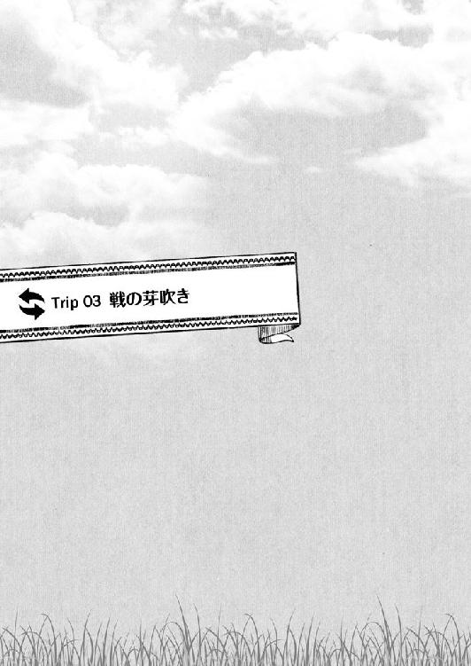
戦の芽吹き
１
十日が過ぎた。
あの狂気をはらんだ女学者・美佐に、よりにもよって自分自身だという骸骨を見せられたテムジンであったが、その時に体験したことをミサにも和治にも伏せ、表向きはごくごく平穏に異世界での生活を送っていた。
以前、草馬がのんべんだらりと送っていたであろう、日常を。
毎朝、起きて飯を食い学校へ行く。
授業というやつも、あえて自分から進んで受けてみたりもした。
言っていることの九割は、ほとんどシャーマンの唱える呪文と同じでちんぷんかんぷんではあったが、新鮮な体験ではあった。
ひとつ、草馬と違うところがあるとすれば、体を鍛え始めたことだろうか。
本当にこのふやけた肉体のままで日々を生きねばならぬことに、精神的な限界を感じ始めていたのだ。
最初は、例の空手部とやらで鍛えついでに技を盗もうと考えていたのだが、これは弓奈が全身全霊で嫌がったので頓挫した。
そこで、家の物入れに転がっていた棍棒を使って独自に鍛えることにした。
その棍棒は実にみっしりと中身の詰まった木でできていて、握り手の部分から先のほうに向かって太さと重量が増していくという、打撃武器としては理に適った代物だった。
これを剣に見立て、テムジンは振って振って振りまくった。
昔、エスガイに徹底的に叩き込まれた剣技を一からなぞり直したのだ。
最初の一日で指の付け根の皮がめくれ上がり、手の平は血に染まった。同時に、全身を凄まじい筋肉痛が襲った。ずいぶん長いこと忘れていた、懐かしくどこか心地よさすら覚える痛みだった。
帰宅した和治が晩酌に飲んでいる強い酒を布に染みこませ、それを破けた手の平にあてがって再び振った。振り続けた。
そして十日、今日も今日とて学食でがっつりと三人前の飯を平らげた後で、学校の連中が「中庭」と呼んでいる緑の芝に覆われた場所で、ひとり剣をおさらいしていると、
「......また今日もやってんのかよ」
不意に、北条の声がした。
棍棒を振り回す手を止めて、テムジンは諸肌脱ぎになっていた上半身の汗を布でぬぐった。タオルというこの布、実に肌触りがよく水気も吸う。
「北条か。なんの用だ？」
汗をぬぐってから、今度は手首だけを使って棍棒を自在に取り回す鍛錬を始めながらテムジンは言った。
「......蒼原の顔でそういうことされるの、慣れねぇなぁ」
北条が、頭をかいた。
「お前、学校中で噂になってんの知ってる？ 二年の蒼原がここんとこ毎日、中庭で血まみれになってバット振り回してるって」
「バットってのか、この棍棒は。こいつは、なかなか使えるぞ。訓練にもちょうどいい」
「棍棒って......。野球部の連中が聞いたらぶち切れんぞ......じゃない、そんな話をしに来たんじゃないんだよ。前にお前に頼まれてたこと、なんとかしてみたぜ」
どういう意味があるのかは不明だが、両手で何か荷物をどかすような仕草とともに、北条が言った。
「そうか。そいつは助かるぜ」
その北条の言葉に、テムジンは目を輝かせた。地面に置いておいた服に袖を通しつつ、北条と向かい合う。
「それともうひとつ、こいつも渡しとくわ。一応」
と、北条が何かを差し出した。
「こんなもん、頼んじゃいねぇぞ」
それは、茶色い包みだった。受け取ったテムジンが、中身を確かめようとすると、
「ここで開けるのはマズいっての！」
慌てた声を出した北条が、テムジンの手を押さえた。
「こいつはな、元々は蒼原に頼まれてた物なんだよ。こういう場所で大っぴらに見ちゃならないってことになってる」
「なんでだ？」
「そういう法がある。掟とでも思ってくれよ。見るな、とは言わない。蒼原じゃなくて、お前がどういう反応をするのか興味もあるし......。だが、こいつは家に帰ってからひとりで開けるブツだってことは言っておく。男のたしなみとして」
「たしなみ、か......」
そうだ、と北条が強くうなずいた。至極真剣な顔つきであったので、
「わかった。約束してやる」
テムジンもうなずき返し、改めて包みを受け取った。
北条も言っていたように、テムジンは密かに北条にある依頼をしていた。自分の骸骨を見せられた夜、家に戻ってすぐにスマホで連絡を取ったのだ。
その依頼を、十日目にして北条は果たしてくれたわけで、ここでいらぬ不興を買って関係を悪くするのは避けたい。さすがにテムジンにもそれぐらいの知恵は働く。
「じゃ、放課後に部室で。もう場所はわかるよな？」
「ああ、大丈夫だ」
この十日、暇を見つけては学校の敷地内はくまなく探索した。弓奈や綾、依子からも普段草馬が立ち寄っていた場所についての情報も得ている。
午後の授業は、数学と体育だった。
体育のほうは敵味方に分かれて球蹴り遊びに興じていれば終わるので、特に心配する必要はない（戦に関わる全体行動の訓練なのだろうとテムジンは理解していた）。
数学は......これはもう、シャーマンの呪文どころの話ですらない代物で、いかに断片的に草馬の知識を使えたとて理解はできぬと諦めている。寝て過ごそうと決めていた。
そして、放課後。
テムジンの姿は北条に指定された『部室』の前にあった。
ひとつ、想定と違っていたのは弓奈も一緒にくっついてきたということであった。
「てめぇなんざ呼んでねぇぞ。さっさと帰るか、空手部にでも行っちまえ」
そう言うテムジンに、
「しばらくおとなしくしてるかと思えば、急に北条くんとコソコソなんかやり始めて......つまんないこと企んでないか監視してるのよ」
弓奈は冷淡に返し、自分から部屋の入口をくぐった。
「何が今日一日だけ、だ。結局、ずっとついて回りやがって。もういいだろう、てめぇの望みどおりに騒ぎは起こしちゃいねぇんだから、ほっとけ」
なんだかんだ言いつつ世話焼きというか、すぐにこうして主導権を握りたがるあたり、弓奈はボルテに似たところがある。
が、最後には布団の上に組み敷いて散々に啼かせてやれるボルテと違い、弓奈は今のところそうもいかないので、それがまたテムジンにとって苛立ちの元となっていた。
ともかく、不本意ながらもふたり連れ立って部室に入ると、既に室内には北条たち三人の姿があった。
「あら、弓奈ちゃんも一緒なん？」
顔を合わせるなり、まず綾が言った。
「私がいると、何か不都合でも？」
険のある声で弓奈が返す。
「そんなことないわ。......や、どんだけぶーたれてても、やっぱりアオやんのこと心配しとんのやなーと思って」
それをさらりと受け流し、「まぁ座り」と綾はテムジンたちに椅子を勧める。
弓奈が一瞬、何か言い返したそうに口を開きかけたが、結局は何も言わず勧められるままに席に着いた。
向こう側には、北条と依子。意図してそうしたわけではないが、二対二で向かい合う形になった。少し離れた位置で、テムジンたち四人を眺めるように綾が陣取る。
「ほいじゃ、ぼちぼち始めるとするか」
居並ぶ面々を順繰りに見渡し、北条が口火を切った。
「......綾ちん、頼む」
次いで、綾を促すと、「ほいな」と請け合った綾が、机の上に置いてあった物をテムジンたちのほうに向けた。
「ノートパソコンなんかで何するのよ。まさか、またゲームじゃ......」
それを見た弓奈が、不審げに言った。
「口だけで説明しても、今の蒼原......いや、テムジンにはうまいこと伝わらないような気がしてなぁ。わかりやすく、紙芝居を作らせた」
北条が続け、それに合わせるように綾がノートパソコンをカタカタと操作した。スマホやテレビというやつもそうだが、未来では何かと言うとすぐにこういう箱やら板きれを取り出すのが未だに慣れないテムジンであるが、ここは黙って映し出されたものに目をやる。
そこには、遊牧民の戦装束を身にまとい、馬の上で剣を振り上げる男の絵と共に『チンギス・カーンの生涯』という文字が書かれていた。
「......なんなのよ、いったい」
またしても弓奈が口を挟む。
「いちいちうるせぇぞ。俺様が頼んだんだ。ここに居座るつもりなら、黙ってろ」
そう、テムジンが北条に依頼したこと......それは、自分自身の一生について北条たちが知っていることをすべて教えてもらうということであった。
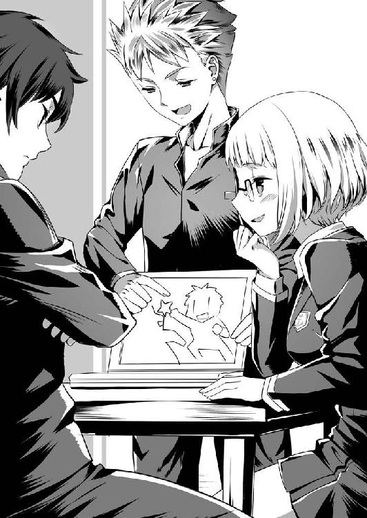
無論、テムジンなりの狙いあってのことだ。
あの日、あの夜、石棺の中にあった骸骨に指を触れた瞬間、テムジンの意識は一瞬にして石棺のあった部屋を離れ、いつも草馬とまみえるあの闇の中に飛ばされていたのだった。
が、その時はいつもと様子が違っていた。
〝光る道〟はどこにも見えず、草馬の姿もなかった。ただ、真っ暗闇の中をテムジンは上下左右の感覚もわからぬままに漂っていた。
と、不意に頭の中に直接語りかける声が響いてきたのだ。
『そなたもまた扉を開き、輪は繋がった。己が天命と向き合う時......』
声は、しわがれた老人のものだった。
「誰だっ!?」
テムジンは叫んだが、声の主が姿を見せることはなかった。重ねて問いかけようとしたその時だった。テムジンの脳裏で何かが閃き、強烈な直感が全身を貫いた。
声の主は......あの骸骨だ。
そう考えるにたる合理的な理由など何もなかったが、ほぼ確信に近い思いをテムジンは抱いていた。
『刻の理は、そなたとそなたを巡る者を縛らぬ。故にそなたは己が目で見て、耳で聞いて、彼の地にて学べ。再び輪が離れるその時まで。それも、余の望み』
また、声が響いた。
はっとしてもう一度声を出そうとしたのだが......その時にはもうテムジンは闇を抜け、再び石棺の前に立っていた。石棺の中では、物言わぬ骸がただ虚空を見つめている。
わずか、まばたきひとつに満たない間に見た幻影だったのかと考えたが、それにしてはあの声が生々しく耳にこびりついていた。
（己が目で見て、耳で聞いて、学べ......）
頭の中で声の主に言われたことを反芻しつつ、たった今体験したことによる動揺を悟られまいと、わざと和治たちに「こんな骨を見せてどういうつもりだ？」と詰め寄った。
そして、衝撃的なことを告げられた。
この骸骨が、テムジン本人の遺骸であるということを。
（俺様に何を学べと言うんだ......俺様は）
何かを期待する目で、和治と美佐がこちらを見ていた。それでもやはり、テムジンはこの期待に応えうる回答を伏せた。
（俺様自身で答えを見つけろ......というわけか）
己が目で見て、耳で聞け。
美佐の告げたことが本当ならば、他ならぬ自分自身からの命令であった。
たとえどれほどの権力者であろうとも、他者に自分の行動を縛られることを何よりも嫌うテムジンであったが、命を下すのが自分自身であれば話は別だった。
逆に言えば、どれほど唐突であろうと、理不尽であろうと、テムジンがテムジンに下す命ならば......信じられる。
だからまず、テムジンは自分を知るところから始めようと考えたのだ。
あの骸骨がテムジンの末路であるならば、あの声が年老いたテムジンのものであるならば、この世界はテムジンが生涯を終えたあとの時代......未来の世界ということになる。
だったら、誰かがテムジンの一生を誰かが覚えているかもしれない。文字というものがあるこの時代ならば、誰かが書き記しているかもしれない。それを、知りたい。
そう思って選んだのが、北条だった。
あの男は、切れ者だ。一番すんなり話が通じるに違いないと考えた。
家に帰されるなり、スマホをひっつかんで北条に連絡をつけ、言った。
「俺様のことで知っていること、わかっていることをすべて教えろ」
と。
２
北条と綾が用意していた「紙芝居」とやらは実によくできていた。
北条の軽妙な語りに息を合わせ、綾がノートパソコンを操作すると。そこには、依子の手によるという絵によって実に生き生きと、そして色鮮やかにテムジンの生涯が描き出されていた。
テムジンがこれまでに体験してきたこと、そしてこれから体験するであろうこと......。
その長い物語も、いよいよ終わりの時を迎えようとしていた。
「......とまぁ、そんなわけでテムジンことチンギス・カーンは、世界史上でも有数の巨大帝国を築き上げたんだが、最後は子供たちに後を託して、遠征の途中で亡くなったと」
「それは、いつ頃の話だ？」
『おしまい』という文字とともに最後の絵が映し出されたあと、テムジンは初めて北条に疑問を投げかけた。
「いつ？ ......ええと、待てよ。チンギス・カーンが死んだのが六三歳頃って言われてて、一二二七年らしいから......ざっくり八〇〇年前ぐらいか」
「はっぴゃくねん!?」
思わず、みっともなく声を裏返してしまってから、テムジンは腕組みをして唸った。
話を聞いた限りでは、タタルもジャムカも金も、目障りな連中はことごとく叩き潰すことができたようなので、それについては非常に満足したのだが、
「......まさか、八〇〇年とはな」
四〇まで生きられれば長生きとされるような中で生きてきたテムジンにとって、あまりに現実感のない数字に驚きは隠せなかった。
この世界のとてつもない技術や、豊かな生活を目の当たりにしてきたことも併せて、ここが未来の世界であるということはもはや疑うまいと思うものの、実際に具体的な数字を示されるとめまいがしてくる。
「しかし......よくそれほど昔のできごとが細かく残っているもんだ」
そう、誰にともなくつぶやくと、
「それだけ、チンギス・カーン......つまりテムやんが偉大な英雄やったってことなんやろうねぇ」
綾が、テムジンの顔をなめるように見て言った。
「遊牧民ていっつもどんな生活してるん？ みんな馬に乗って、弓で獲物をとるんやろ？」
「狩りもするが、家畜を引き連れて回ってる時のほうが多い。だが、弓と馬は扱えて当然だな。三つにもなれば男も女も馬の乗り方を覚えるもんだ」
偉大な英雄と持ち上げられれば、悪い気はしない。変な呼ばれ方をしたことは気にせず、綾の問いに素直に答えてやってから、テムジンは改めて北条を見た。
「なんにせよ、助かったぞ北条に綾。俺様の目に狂いはなかったぜ。それと、依子もな。お前ほど絵がうまい人間を、俺様は見たことがねぇ」
満更、世辞でもなく言うと、
「そりゃどうも」
「お褒めにあずかり光栄や」
北条と綾が、ふたり揃っておどけた様子で頭を下げた。依子のほうは、無言のまま照れくさそうに肩をすくめる。
「......北条、どうだ？ お前さえ良ければ俺様が盟友になってやろう」
「アンダ？ ......ああっと、友達みたいな？ ジャムカって奴がそうだったんだっけ？」
「あんなクソ野郎とは形だけのこと。お前をジャムカと一緒にする気はねぇよ。お前はできる奴だ。草馬がお前と友誼を結んだのもわかる気がしてな。どうだ？ 俺様がこんな申し出を自分からするなんてめったにねぇことだぞ」
「ははっ！ そいつはいいな！」
北条が笑った。加えて、
「世界史に名を残す英雄と友達になれるチャンスなんて、この先一生ないからなぁ。......そうだ、モンゴルの遊牧民は家族を何より大事にするんだって？ ならいっそ、依子と結婚しちまうか？ そうすりゃ、俺たちはアンダで兄弟だぜ」
テムジンの提案がよほど面白かったのか、思い切ったことを言い始める。
「ほう......依子を俺様の嫁に？ 俺様は別に構わねぇぜ」
嫁が何人いても困ることなど何もない。それだけ、子孫が増えて一族の威勢が増すことに繋がる。なので、テムジンがあっさりと応じると、
「ふぇっ!?」
急に野リスの鳴くような声を依子が発した。見れば、驚きのあまり椅子からずり落ちそうになりながら両の頬を真っ赤に染めている。
「どうだ、依子。お前の兄はこう言ってるが、俺様の嫁になるか？ 第二夫人ってことにはなるが、お前なら大事にしてやるぞ」
「わ、わた、わた......私が、そうちゃんの......お、お嫁さんに......」
今のところ依子はまだまだ子供っぽい体つきで、そそるところはあまりない。が、素材はとても良さげな印象である。あと三年も待てば、ボルテとは違った雰囲気の美しい女に成長するに違いない。
この反応を見るにつけ、本人も満更でもなさそうなので、半ば本気でテムジンはたずねたのだが、
「い、いいわけないでしょ！ 何考えてんのよ！」
そこへ、鼻息も荒く横やりが入った。
弓奈である。
なぜか、突如としていきり立った弓奈が、口から泡を飛ばさんばかりに食ってかかってきて、テムジンと依子を引き離そうとする。
そればかりか、
「......って言うか、なんなのよこの集まりは！ みんなして、草馬が本当にテムジンとかいう奴になっちゃったって信じてるわけ？ それとも、わかってて面白がってるの!?」
怒りの矛先は、テムジンのみならずその場の全員に向けられる始末。
「草馬を元に戻す相談ならともかく、こんなんじゃいよいよ本格的に草馬がおかしくなっちゃうよ！」
「ちょちょっ！ 弓奈ちゃん、ブレイク！ ブレイク！」
怒髪天を衝く弓奈をなだめたのは、綾だった。
わざわざ席を立って弓奈のそばまで移動し、荒れ狂う弓奈の両手を自分の手で包み込んで落ち着かせる。
「うちらも別に、アオやんのこと心配してへんわけちゃうよ。......まぁ、さっきはちょっとノリ良くしてもうたんは謝るけど」
「ほら見なさい！」
「最後まで聞き。最初にアオやんがおかしくなったって聞いてから、うちなりにずっとアオやんのこと注意して見とったけど......やっぱりちょっと違う気がするねん。いくら記憶喪失だか記憶障害だかでも、こうまで人は変わらんと思わへん？ それに、な......」
「それに......何？」
「うちもうまく言えへんけど......今のアオやん......ううん、テムやん、ほんまに困ってるように見えてん。これ、うちより弓奈ちゃんのほうがわかるんちゃうかな？」
「どういう意味よ」
「弓奈ちゃん、中学の時にお父さんの仕事の都合で外国に行っとったんやろ？ 最初のうちは、言葉も文化もなんもかんも日本と違うてしんどかったって話してくれたことあったやんか。テムやんも、その時の弓奈ちゃんと同じちゃう？」
綾と話すうちに、目に見えて弓奈の怒気が衰えてきた。どうやら、綾の言葉には何か思うところがあるらしかった。
それでも、すべてを素直に受け入れるのにはまだ抵抗があるようで、歯切れ悪く口の中でしばらく何かをもごもご言っていたのだが、
「......で、これからどうしようってわけ？ 一万歩譲って、草馬とコイツの意識が入れ替わってて、コイツが未来の世界で困ってるとしても、野放しにはしとけないでしょ」
でかいため息ひとつでどうにか折り合いを付けた様子で、椅子を引いて座り直した。
「野放しとは言わないけど、とりあえず本人の希望くらいは聞いてあげてもいいんじゃないかと俺は思うけどな」
弓奈の言葉を受けて北条が言い、
「......というわけで、テムジンくんの望みを聞きたいんだけど？」
テムジンに目を戻す。
「望みと言われりゃ、そりゃ元いた世界に帰ることだ。俺様は、どうやら偉大なカーンになることが決まっているようだ。まぁそんなことは至極当たり前なんだが、実際に自分の手でそいつを成し遂げないことには意味がねぇからな」
「......でも、戻る方法はわからない？」
「そこが問題よ」
言って、テムジンは手で机を打つ。
「戻るためには、どうやら俺様はここで何かをやらなきゃならねぇらしい。だが、それがなんなのかは確かにまだわからねぇんだ」
「それじゃ、お手上げやねぇ」
綾が、本当に両手を頭上に持ち上げて言った。
テムジンは、体をずらして綾のほうを向いた。
「それを知るためにももっと俺様はこの世界のことを知りてぇんだ。北条の話と依子の絵巻で、ここは気が遠くなるような未来の世界だってことを知った。こいつは一歩前進ってやつだ。だから、次はこの世界をもっと見てみてぇ」
「それが今のテムやんの望み？」
「そうだ。何日か前、俺様は和治に『この国で一番でかい街』ってところに連れて行かれたんだが、なんだかんだあって街そのものを見ちゃいねぇんだ。できれば、そこを実際に見て、知りてぇと思ってる」
そこまで言うと、テムジン以外の四人が互いに顔を見合わせた。
「......そうちゃん、東京行きたいって」
「行ってどうするのよ」
「そらわからへんけど、別に連れてってあげて損はせぇへんのと違う？」
「ま、いいんじゃないの。本人がそうしたいってんなら、ここはやりたいようにさせてみるのが一番だと俺も思うわ」
うん、と北条が大きくうなずいた。
「......わかった。じゃあ、次の休みに俺たちが連れてってやる。なに、草原から来た留学生に日本を知ってもらうと思えば別に大したことじゃない」
「おお！ さすが北条！ 我がアンダだ。話が早い」
期待していたとおりの成り行きに内心で快哉を叫びながら、テムジンは北条の手を握って振り回した。
「そんなに喜んでもらえるなら案内する甲斐もあるな。......にしても、あのチンギス・カーンに東京案内か......こいつは......」
テムジンに何度も腕を振られながら、北条がにやりと笑った。
と、
「......あ、にぃに......ダメ」
その笑みを見た依子が、はっとして北条の口を手で塞ごうとした。
「......めっちゃ面白そうだぜ」
が、遅かった。北条が最後まで言った次の瞬間、
「やっぱり面白がってるんじゃないの!!」
弓奈の怒声が部室の隅々まで響き渡った。
テムジンが未来の世界に来て、一〇度目の夜を迎えた。
その夜もここしばらく日課にしていた夜の鍛錬を終え、テムジンは自室の寝台で荒い息を整えていた。
まだまだ、鍛錬に体のほうがついてこない。
眠る前に二時間、最近読み方を覚えた時計という道具の針が二回りする程度かけて五～六〇〇〇回、見えない敵を相手にバットを振るっただけでもう完全に足腰が立たなくなってしまっていた。
ならばこのまま眠ってしまえと目を閉じたのだが、息が戻ってもなかなか眠気が来ない。
体は疲れているのに、頭のほうが覚醒してしまっているのだ。
激しい鍛錬や、戦のあとにはよくある状態だった。
そんな時は女を抱くに限るのだが、悲しいかな今のテムジンのそばにはボルテもいなければ、戦利品の愛妾たちもいない。
（弓奈は......まだだ。あいつは最後のお楽しみだ。この柔な体をもっと鍛え抜いて、いくら抵抗しても無駄だと思い知らせながらじゃねぇと俺の気が収まらねぇ）
女、女......と寝台の上を右へ左へ転がるテムジンであった。
（依子と綾......めぼしいところだと、まずはあっちのふたりか。依子は、もう北条と話が通っているからな......ちと華奢すぎてアレだが、俺様と結婚するならせめて口で喜ばせる方法ぐらいは教えておかねぇと）
などと考えてしまうと、いよいよ眠気はどこかへ消え去って、
（綾のほうは顔も肉付きも悪くない。特にあの尻はいい。持ち上げながら打ち付けてやれば、さぞかしいい声を出しそうだ......）
膨らむ妄想とともに下半身が熱くなってくる。
がばっと、テムジンは身を起こした。
今から外へ出てふたりばかり略奪してくるかなどと半ば本気で考えもしたのだが、ふとその時、昼に中庭で北条から預かった包みが床に転がっているのが目に入った。
元々、草馬が頼んでいた物だと言っていたが......。と、気になってテムジンは寝台を降りて包みを手に取った。
何か暇つぶしか気晴しになる物でも入っていないかと、微かに期待して包みを開けると、入っていたのは、部室で見せられたノートパソコンよりもやや小さく厚みがある紙の束であった。
「......なんだこりゃ？」
ぺらりとめくってみると、何かの絵巻のようである。
その内容が、衝撃だった。
のっけの一枚目から、妙にひらひらした衣装に身を包んだと言うべきか、半脱ぎになっていると言うべきか、とにかく胸をぼろんと放り出している女の絵が描かれていた。
驚いてめくってみると、ほとんどすべてが男と女が組んずほぐれつまぐわっている様子を描いたものばかりであった。
「こ、これは......」
紙と言えば、高原ではかなりの貴重品である。実際に自分たちで使うのではなく、主に吐蕃あたりに向けた交易品として使われるのだが、筒状に丸めた一本で羊一匹買えるという代物であった。
その高価な紙を惜しげも無く使って描かれているのが男女の営みとは、この世界で受けた衝撃の中でも三本の指に入ろうかというものだ。
描かれている絵は、テムジンからすると少々気色悪いものだった。
目がやたらと大きく強調されていて、
「......まるで虫だ。イナゴの目かってんだ」
見ていると、なんだか背筋がゾワゾワしてくる。
だが、
「......ああ、ごしゅじんさま。はしたない、いんらんめいどにおしおきしてくださいませ」
「いやあ、そんならんぼうにしないで。わたし、おかしくなっちゃう」
「ごしゅじんさまのあついのが、しみこんでくる......きもちいい......」
それはそれとして、内容のほうは非常に興味深かった。特に、今のテムジンには。
ぺらぺらと紙をめくるうち、目についた文字を声に出してみると、これがなんだか下半身にやたらグイグイとくるのである。
すると我ながら都合のいいもので、最初はイナゴの目に思えて気色悪かった絵の中の女たちが次第に魅力的に思えてくる。
その思いが、更に紙をめくらせる。手が止まらない。目が離せない。
不思議な感情がテムジンを支配していた。生身の女に欲情するのとも違う、この独特な、言葉に言い表せない感情は......この一見気色悪い絵に対して、なぜか胸に湧き上がる衝動はいったいなんなのか......。
気付けばテムジンの右手は、しっかりと握りしめていた。
試してみる必要があった。これもまた、己が目で見て学ぶということなのだと自分に言い聞かせた次の瞬間、
「おねがいします。とろとろになっているここ、さびしいんです。ごしゅじんさまがはいってないといやなんです」
（だったら......仕方がねぇな）
テムジンの右手は、激しく動き始めていた。
３
「......その、『らぶらぶいんらんめいど』という書物は何か重要な手がかりなのでは？」
話の流れで草馬がうっかり口にしてしまったアレな漫画のタイトルを、ボオルチュが生真面目な顔と声とで繰り返すのを、
「あーっ！ いいの！ そこは忘れて！ 絶対に重要じゃないから！」
大慌てで手を振って制止し、草馬はむりやり話題の方向を変えた。
「それより、大事なのは俺の親父と母ちゃんがテムジンに見せた物のほう！」
びっと一本指を立て、力を込めて言うと、ボオルチュも「ふむ」とあごを撫でて何事かを考えるように目を閉じた。
「......テムジンの遺体、か。ソウマ殿が未来の世界から来られたと言うならば、その未来にテムジンの骨のひとつも残っているのは理解できるが、ソウマ殿のお父上、お母上はなぜそれをテムジンに見せたのだろうな」
目を閉じたまま、考えたことをそのままボオルチュは口にしたようだった。
「......意図って言うか、そもそもおかしいことだらけなんだよな。俺、母ちゃんが学者だったなんて初めて知ったんだぜ？ ずっとただの主婦だと思ってて、ここんとこ家を空けてたのは田舎の婆ちゃんの具合が悪いから看病に行ってるって話だったのによ」
ボオルチュが、目を開いた。
「ソウマ殿にも秘密だった......それではまるで、お父上たちはテムジンとソウマ殿の意識が入れ替わることを予め知っていて、その準備をしていたようではないか」
「そこ！ 思えば最初から親父にはそんな気配があった。だから、前にテムジンと会った時に親父からうまく話を聞き出すように言ったんだけど......結局あいつ、自分のことばっかりで大事なことなんにも聞いてないんだよね......」
「......奴はそういう男、と言ってしまえばそれまでなのだが」
さすがに、ボオルチュはテムジンのことをよくわかっている。
草馬も直前の邂逅でもう一度そのことは嫌というほど思い知らされていた。
草馬が旅芸人のお姉様たちに攻め落とされ、テムジンのほうはまさかの二次エロに陥落するという形でそれぞれ〝賢者タイム〟を迎えて再びまみえたわけだが、
「何をお前は効率悪いことしてんだよ！ のんびり学校で授業受けるとか、俺の体を鍛えるとかどうでもいいから、親父か母ちゃん捕まえて話を聞いてくれ！ お前だって、自分の骸骨にわけわかんないこと言われたら気になるだろ！」
「やかましい。俺様は、俺様のやり方でやるだけだ。てめぇは、いつ俺様が戻ってもいいように軍の準備だけやっときゃいいんだ。聞いただろ？ 俺様は偉大なカーンの座を約束された男。てめぇのような凡夫とは格が違うんだってことを覚えといて、俺様の偉業を手伝えることに感謝しながら働くんだぞ」
「......お前のその偉業とやらの三分の一ぐらいは、俺がもう終わらせたってことも忘れんなよ。あとな、感謝っつーならボルテを助けてあげた礼ぐらい言えないわけ？」
「その分、いい思いしてんだろうが。こっちも苦労してんだから、おあいこだ」
「どこが！ こっちは、二年も三年も一族まとめてやってんだぞ？ お前なんか、たかが十日じゃないか。せっかく貯金してた俺の金、ほとんど飯代に突っ込みやがって。食い過ぎなんだよ！」
「ありゃ、和治が使っていいっつったんだ。文句言われる筋合いじゃねぇ」
「とにかく、親父と母ちゃんに話し聞けよ!? ちゃんと！」
「......そんなつまんねぇ心配してていいのか？ おい」
「な、なんだよそれ......。これ以上大事なこと、ないだろ」
「そう思ってんなら、それでいい。......ま、お前もせいぜい未来の覇王の生活を楽しめよ。そいじゃ、俺様はもう行くぜ。次の日曜日は、東京見物ってことになってんでな」
......こんな感じで相変わらず互いの主張は噛み合わず、気付けば時間切れ。目が覚めてみれば、旅芸人一座の座長である脂ぎったオヤジが、揉み手をしながら遠回しに興業の代金を上乗せしてくれと頼んでいるところだった。
「もう......ほんと勘弁してくれ」
適当にその辺にあった高価な壺だか皿だかを好きなだけボーナス代わりにくれてやり、団長を追い払った時のあのうんざりした気持ちを思いだし、草馬は馬上でうなだれた。
「ソウマ殿、まぁそう落ち込まず......」
ぽくぽくと蹄の音に合わせて力なく上下する草馬の肩を哀れと思ったか、馬を寄せてきたボオルチュが何度か肩を叩いた。
「これもまた、天神の思し召し。未来の世界で、テムジンが自身に出会うということにもきっと何か意味があってのこと。我ら人間は、あるがままを受け入れるしかできぬのだから、大きく構えるがいい」
「テムジンが、テムジンにねぇ......。そこもちょっと気になるんだけど......」
どうにか顔を起こした草馬が前を向くと、もう集落が目の前だった。
歌や楽器の音が、風に乗ってこちらにも聞こえてくる。
「仕舞いの宴が始まっているようだな。さすが、ベルグタイは手回しがいい」
草馬が主催した人材発掘のための大競技会は、そのプログラムのすべてを滞りなく終え、いわゆる閉会式に移行しているようだった。
「さて、すまんが俺は先に行かせてもらうぞ。成績優秀な者に与える褒美の差配をしなければならん。ソウマ殿も色々思うところはあろうが、集落に入ったら族長の顔でな」
「わかった。またあとで話そう」
宴の中にある集落を目前に、ボオルチュが馬に鞭を入れた。風のように駆け去って行く背中を見つめながら、草馬は尚も考えていた。
テムジンが草馬の両親に見せられたあの骸骨は、本当に後のチンギス・カーンのものなのだろうか。
こちらに飛ばされる前、チンギス・カーンについては一通り知識を仕入れている草馬である。その中には、彼の死後についてのものも多少は含まれていた。
少なくとも草馬が生きてきた時代において、公式にはチンギス・カーンの陵墓は発見されておらず、世界史上でも大きな謎のひとつとされているはずだった。
ある学者は遊牧民たちが神聖視する山、ブルカン嶽の頂上に埋葬されたに違いないと主張し、またある学者は霊廟と思われる遺跡の近くに存在するはずだとして発掘調査を行っているという。
いずれにしろ、テムジンが見たあの骸骨がチンギス・カーンの遺体なのだとすれば、これはもう歴史に残る大発見になるのは間違いない。
そんなとんでもない代物を、どうやって両親は──正確には両親の協力者たちかもしれないが──発見し、あまつさえ日本に持ち込むことができたのだろうか。モンゴル政府がそう簡単に許可を出すとはとても思えない。
そういう大事なところをまったく聞き出そうとしなかったテムジンに、またしても腹立たしい思いを強くして、草馬は天を仰いだ。
次の邂逅までに何か進展があればいいが......と淡い期待を抱くと同時に、
（それにしても......時間の流れ方が全然違う）
草馬は、ボルテをメルキトの手から救出した直後に体験したことを思い出していた。
「刻の理は、そなたとそなたを巡る者を縛らぬ」
そう告げたあの声の主、あれはテムジンによれば老人になった自分自身からの言葉であるというではないか。そんなこと、あり得るのだろうか？
いや、あり得る・あり得ないという話をするのは今となってはナンセンスだった。普通に考えてあり得ないことを、草馬はもう山ほど体験している。
考えるべきは、これからのことだろう。
次に〝賢者タイム〟が訪れた時、また何年も時間が経過していて、例えばボルテがお婆さんになっていたりすることがあるのだろうか？ それでも、未来の日本ではいいとこ一ヶ月ぐらいしか経っていなかったりみたいなことがあるのだろうか？
......まるでわからなかった。今のところ、これも考えるだけ無駄かもしれない。
（ボルテがお婆さんになっちゃってるところは......あんまり見たくないかなぁ）
などと、何も建設的なところのないことをぼんやり思っているうちに、草馬の馬も集落の中に入っていく。
宴はだいぶ盛り上がっているようで、行き交う部民たちが明るい顔で草馬に向かってあいさつしてくるのに答えているうちに自分のゲルに到着した。
ゲルの前で張り番をしていた護衛の兵士に馬を預け、入口をくぐる。
と、
「お帰りなさいませ、族長」
「お待ち申しておりました」
中から、若い女性の声がした。それも、ふたりだ。
えっ？ と思って見てみると、どこかで見覚えのある顔がふたつ、にっこりと微笑みながら草馬を出迎えている。
「あ、あの......ボルテは......」
どこで会った顔だったかと頭を回転させながら、場つなぎのつもりで聞くと、向かって右側の非常に目を引く胸をお持ちの女性がころころと笑い声をあげた。
「お忘れですか？ 奥方様は今朝方、ジョチ様をお連れになってコンギラトのご実家に里帰りされるためにお発ちです」
そうだった、と草馬は思い出した。
もう一歳を過ぎてだいぶしっかりしてきたので、一度コンギラトにいる両親にもジョチの顔を見せてあげたいとボルテに頼まれ、了承していた。
本当は、大競技会が始まる頃に出発する予定が、直前になってホエルンが風邪をひいたりしてバタバタしたので延び延びになり、結局、今朝早くジェルメが率いる護衛の兵団一〇〇騎とともに旅立ったのだった。
「あ、いや。大丈夫。......で、おふたりは？」
適当に取り繕って、草馬は改めて聞いた。
「はい。私が戻ってくるまで族長の身の回りのお世話をせよと、奥方様より申し使っております。短い間ではございますが、よろしくお願いいたします」
今度は、向かって左側、非常にまろやかなラインのお尻をお持ちの女性が答えた。
さすが、ボルテである。自分が不在の間でも草馬が困らないよう、ちゃんと手配をしてくれていたらしい。
それにしても、どちらも美人である。見たところ良く似ているので、姉妹かもしれない。
（......おっぱいちゃんに、お尻ちゃん）
名前がわからないのでしょうがないとは言え、心の中で草馬が我ながらひどい識別コードをふたりの女性に与えていると、
「では、お召し物を替えさせていただきますね」
「どうぞお楽になさってくださいませ」
美女たちはしずしずと草馬に近付き、草馬の着ていた服と靴に手をかけた。
ふたりの体から放たれる、甘い香りが草馬の鼻腔をくすぐる。瞬間、草馬の脳裏に蘇る光景があった。
それは、本格的に草馬とテムジンの意識が入れ替わってしまう直前に見た光景だった。
タイチウト氏に連なる一団が、テムジンたちが縄張りにしていた放牧地にちょっかいを出してきて、テムジンはベルグタイやカサルを率いてその一団を討った。
一団の幕営地を焼き払い、そこにいた女性は「戦利品」としたテムジンは、あろうことか戦の最中であるというのに焼け残ったゲルに戦利品のうち気に入ったふたりを連れ込んで、彼が言うところの「味見」をしているまさにその時、草馬の意識はテムジンの肉体に初めて乗り移って......。
「あの......もしかして、ふたりとも......三年ぐらい前にタイチウトの幕営地で......」
どうりで見た顔のはずだった。
恐る恐る、テムジンがふたりに向かってたずねると、
「まぁ、覚えていてくださったんですね」
お尻ちゃんが、嬉しそう言った。
「申し遅れました。私は、パイ・ラン。そちらは姉のシリュ・ラン。仰せのとおり、タイチウトの奴婢であったところを、族長のお情けを賜った者にございます」
と、おっぱいちゃん。
「ぱ、パイに......尻......」
「シリュ、でございます」
「あああっ！ ご、ごめんなさい！」
冗談のような名前であった。
いや、問題はそこではないのだが......。
どう考えてもテムジンは、あの時完全にむりやりこのふたりをモノにしてしまっているはずで、そんな相手がまさかここで揃って草馬の世話係として現れるとは......。
「あ、あ、あの時はその......俺じゃなくてテム......い、いや違う！ 本当に、なんというか、申し訳ないというか......」
全身から冷たい汗を噴き出しながら、草馬がしどろもどろになって言った。はっきり言って、ここで恨み晴らさでおくべきかと刺し殺されても文句は言えない状況である。
しかし、そんな草馬の焦りをよそに、
「......こうしてまた、お目にかかれるなんて本当に嬉しいです」
「族長に救っていただいたこの身でございます。精一杯ご恩返しさせていただきますね」
ふたりとも、揃って思いもかけないセリフを口にするのだった。
「え、ええ～っ？」
とうてい信じられぬ思いで草馬はふたりの顔を見た。
「実を申しますと、わたしもパイも......あれから......」
「......どうしても族長に賜ったお情けが忘れられず......」
ふたりもまた草馬を見つめていた。その目が、暗い恨みに燃えるどころか、しっとりと艶やかに潤んでいるのがわかって、草馬はますます混乱した。
同時に、寝台の上で裸に剥かれたパイとシリュに挟まれ、いわゆる事後の余韻がはっきりと残るむせるような濃い匂いの中で目覚めた時のことが生々しく思い出されてしまい、草馬の股間に力がみなぎってしまう。
これはもう、不可抗力である。自分ではどうしようもなかった。
「まぁ、シリュ。族長が......」
草馬の服を脱がせていたパイが、まずそれに気付いた。
「あら......。少しお待ちになってくださいね、族長」
草馬の足下にひざまずいて靴を脱がせていたシリュが、そのまま少しだけ顔を持ち上げ、ゆっくりとその唇をあろうことか草馬のそこへ這わせようとする。
「えっ!? えっ!? えええ～っ!?」
こんな......こんなことが許されていいのだろうか？ 今の草馬が、いかに二万の軍勢を束ねて三万五千の部民を率いる族長だとしても、こんなおいしい展開がそうそう......。
「その分、いい思いしてんだろうが」
テムジンの言葉が頭の中に大きく響いた。
（い、いやいやいや！）
必死にその声を追い出し、草馬はパイから逃れるように下がろうとしたのだが、
「どうぞお楽に、と申し上げましたでしょう？ あとは私たちにお任せください」
既に退路は断たれていた。
パイのパイが草馬の背中に押し当てられた。するりと伸びた腕が草馬の胸を絡め取り、吐息が耳元にかかった。
「宴に出られる前に、すっきりなさるのがよろしいかと」
舌先でちろちろと草馬の耳たぶをくすぐりながら、パイが言った。
「奥方様より、こちらのお世話も滞りなくと申しつけられておりますので」
既にガチガチのギンギンになっている部分をついばむようにしていたシリュが、妖艶な流し目を向けてきた。
「ボ、ボルテがそんなことまで!?」
いいのかボルテはそれで......などと草馬が混乱の極にありながらも考えていると、
「ただし、直接のお情けは受けてはならぬと......」
「ですがそれ以外であれば、族長のお望みどおりいかようにも......」
いよいよ攻勢を強めてきたふたりが、続けて言った。
「......あ、はい」
ボルテの、二一世紀のウブな青少年にはなかなか理解しがたい妥協ラインに首をひねったところで、草馬の理性は尽きた。
「族長は少しお疲れのようですな。先ほどから、あまり盃が進んでいらっしゃらない」
「無理もありません。兄上にとっては、ただ面白く競技を眺めているというわけにはいかなかったでしょうから。少し、休ませてさしあげましょう」
酔ってだみ声を発する部将のひとりと、草馬に気を遣ってくれるベルグタイとの会話が、喧噪の中からわずかに聞こえてきた。
ぼんやりと、草馬は満たされた盃を手にしたまま宴席を眺めていた。
宴は夜になっていよいよ佳境、広場にうずたかく積み上げられた薪と干した家畜の糞に火が入り、天をも焦がす勢いでごうごうと燃え盛っている。
揺らめく炎を瞳に照り返し、草馬はただ物思いにふけっていた。
今、紛うことなく、これ以上はないというぐらいの〝賢者タイム〟に入っていながら、草馬の意識は飛ぶことなくテムジンの肉体に繋ぎ止められたままだった。
どんな時でも一〇〇％、テムジンとの邂逅があるというわけではないらしい。向こうはまだ、そういう状況になっていないのだろう。
パイとシリュの攻撃は、それはもうスゴかった。
しかし、どこか満たされないという思いがあった。散々流されるだけ流されたあとで、説得力も何もあったものではないのだが。
別に美女ふたりを相手に最後の一線が越えられなかったから......というわけではない。
理性が吹っ飛んだ状況でも、なぜか頭の片隅にボルテの笑顔がずっとちらついていて、それが理性とは何か別のところですべてを委ねきる心情に至らせなかったのだ。
それは、寂しさだったのかもしれない。
ここしばらくの間は競技会の視察と人材発掘に全精力を傾けていて、ろくにボルテと会話もしていなかったにもかかわらず、彼女がいないということを自覚した瞬間にこんな思いに駆られるとは想像もしていなかった。
「すぐに戻ってくるからね。夜、お腹出して寝ちゃだめよ？ お義母様みたいに風邪ひかないでね。お土産、お父様からいっぱいせしめてきちゃうから楽しみにしててね」
そう言って旅立っていったのは今日の朝だというのに、もう何ヶ月も会っていないような気がする。今やボルテは、それほどまでに草馬にとって......。
（いやいや、ダメダメ！）
そこまで考えて、草馬はかぶりを振った。
ボルテは、あくまで草馬のことをテムジンと信じているのだ。草馬自身が、ボルテに特別な感情を抱いていいはずがない。
それに引き替え......と、草馬は未来の日本に思いを馳せた。
自然とまず浮かんできたのは、弓奈の顔だった。
それも、怒ったり泣いたりしている顔だ。
草馬と違って、テムジンのほうは自分の正体をまるで隠そうとしていない。どこにいようと自分は自分という精神を貫いている。それが、弓奈から笑顔を奪ってしまっている。
草馬は、知っていた。
弓奈が単に怒りっぽくて手が早い女の子ではないことを。
心底、草馬のことを案じてくれているからこそ、まるで違う人間になってしまった草馬の変化を受け入れられずにああいう態度を取ってしまうのだ。
しかし、今の草馬にはどうしてやることもできなかった。
あのテムジンのことである。そんな傷心の弓奈に対していつ何をしでかすかわからない。
自分で言うのは情けないが、今の草馬の肉体に収まっている間ならどんな暴挙に出ようと空手黒帯である弓奈に一蹴されるだけだろう。
が、その状況がいつまでも続く保証はなかった。数え切れない修羅場をくぐって己を鍛え抜いてきたテムジンが本気になれば、あっという間に優劣は覆ってしまいそうだ。
その上、北条が悪乗りしてくれたせいで依子にまで狙いを定めているようにも思える。
（実は、思っている以上にかなり危機的な状況ってやつなんじゃ......）
弓奈や依子がテムジンにどうにかされてしまうことを恐れ、嫌だと考える自分がいる。
一方で、ボルテの不在を寂しく思い、気持ちを募らせてしまっている自分がいる。
（なんて都合のいい......）
もやっとした、黒い染みのようなものが胸の中に広がっていく気がした。
燃え盛る炎から目を離し、草馬はなみなみと注がれた盃に目をやった。
縁一杯まで注がれて揺れる酒は、ほんの少しバランスを崩しただけでこぼれてしまいそうだった。
酒の中に映る自分の......テムジンの顔が醜く歪んでいるように見え、瞬間、草馬は衝動的に盃をあおっていた。
４
かがり火の下に、ふたつの人影があった。
ひとつは、男。背が高く、肩幅もがっしりと広い、見事に鍛え上げられた体躯の持ち主。
もうひとつは、女。こちらは小さい。背丈は隣にいる男の胸まで届かない。身に着けている革の胸当てがわずかに膨らみを帯びていなければ、年端もいかぬ少年と見間違えそうな体つきをしていた。
男の名はスブタイ、女はジェベという。
ふたりは、ジャダラン氏の長であるジャムカに仕える兵だった。
主であるジャムカは今、背後にある巨大なゲルの中で盛大な宴席を催しており、スブタイとジェベはそのゲルの入口を警護する任に当たっていた。
「うめぇもの、食ってんだろうなぁ。酒も山ほどあってさ」
ゲルから漏れ聞こえる華やかな音楽と笑い声、何よりも漂ってくる料理の香りに若い腹を痛いほどに刺激されつつ、スブタイが呻くように言った。
「ちょっとぐらい、おこぼれとかもらえねぇかな」
傍らのジェベにそうこぼすも、
「......お腹すいてないから」
ジェベのほうは素っ気ないにもほどがある返事をひとつよこしたきりであった。
ジェベの視線は、手にした自分の得物にじっと注がれていた。
弓である。それも凄まじく大きい。
全長は、長身のスブタイより更に頭ひとつ長いように見えた。
弓の下端には、槍の柄ほどの太さをした鉄釘が溶接されている。
ジェベはその釘を地面に突き刺すことで弓が倒れることを防ぎ、同時に支点にしてくるくると回しながら、油を含ませた鹿の革で丹念に磨き続けている。
警護と言っても形ばかりのものであった。
今、この地には高原各地からいくつもの氏族の代表たちが、それぞれある程度の軍を引き連れて集結していた。そんな場所に攻め込んでくるような馬鹿はいない。
手持ち無沙汰も極まる状況で、スブタイがただ空きっ腹を手で撫でていると、
「......上」
不意にジェベが手にした革をスブタイに突き出してきた。
「なんだよ......」
「立てたままだと、届かない」
「オレに拭けってか？」
革を受け取ってスブタイが聞くと、ジェベがこっくりとうなずいた。
何もすることがないよりはマシかと、スブタイがジェベの背丈ではとうてい届かない弓の上端あたりを磨いてやっていると、
「ありがと。お礼」
ジェベが、腰にくくりつけていた革袋から干した鹿肉を取り出してスブタイの口元に差し出してきた。
「お、おう。こっちこそ、悪ぃな」
手がふさがっているので、そのまま口で干し肉を受け取るスブタイ。少々面はゆい思いで肉を噛んだ時だった。
「異常はないか」
暗がりから、鋭い声がした。
はっとしてふたりが声の方向に顔を向けると、男物の戦装束を着こなした妙齢の女性が立っていた。
「クビライ様......」
ジェベが、女性の名を呼んだ。
立っていたのは、警護の責任者であるクビライ将軍だった。元々はケレイト族のトオリル王に仕える武将のひとりであるクビライだが、今は同盟を組んでいるジャダラン氏の客分扱いでジャムカの下にいる。
女性ながら、以前メルキト族との大戦でめざましい働きを見せた勇将として名を馳せるクビライの存在は、当然ジェベやスブタイも知るところであった。
「い、異常ありません」
慌てて噛んでいた干し肉を飲み下し、スブタイが背筋を伸ばして答えた。
「だろうな」
と、鷹揚に応じるクビライ。どこか、声に物憂げな匂いが混じっている。
「あ、あの......クビライ将軍」
そんなクビライに、スブタイがおずおずと声をかけた。
「あのう......少し聞いてもいいですか？」
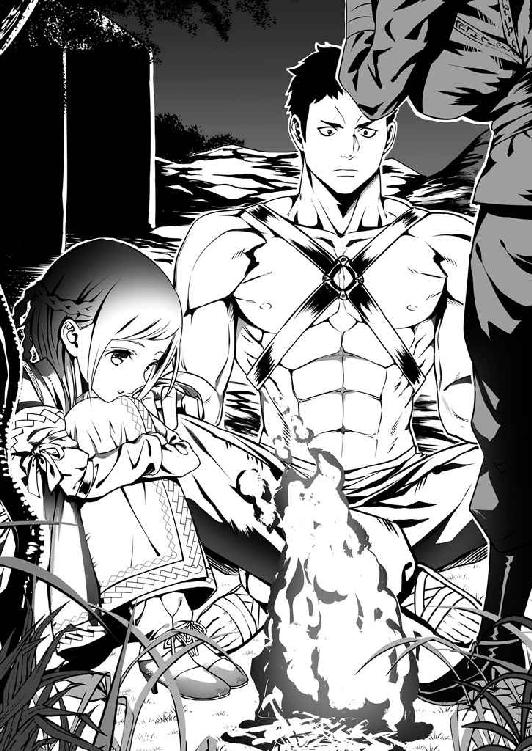
「なんだ？」
「今回のこの宴、ずいぶんあちこちから偉い人が集まってるみたいですが、なんのための宴なんです？」
一介の兵士が口にするには分を越えた発言であった。が、クビライは特にとがめ立てすることもなく、
「戦の相談だ。かのテムジン率いるキヤト氏とのな」
あっさりと答えた。
「やっぱり......」
うなずいたのは、ジェベだった。クビライが、ジェベを見た。
「確か、ジェベとスブタイ......だったな。お前たち、何か思うところでもあるのか？」
「いえ、そういうわけでは......」
スブタイが首を振って言葉を濁すと、クビライは「いいから言ってみろ」と先を促してくるのだった。
「......あの、オレ、ガキの頃に生き別れた兄貴がいるんですけど、その兄貴が実はキヤト氏に仕えてるってのがわかって......。メルキトとの戦の時に。だから、こう言っちゃなんですけど......あんまり戦いたくねぇなって」
仕方なくスブタイが先を続けると、
「そういうことか。......そうだな、できれば私もテムジン殿とは戦いたくない」
クビライが、今度は将たる者が口にするのは憚られるようなことを言い出す。
「......どうして？」
ジェベが、率直にたずねた。
「知ってしまったからだ」
クビライが言った。言葉に滲む匂いが濃くなっていた。
「......何を？」
重ねて、ジェベ。おいおい、とスブタイがジェベの肩を引いた。
「知りたくなかったことを、だ。......だが、だからと言って主の命が下れば我らは戦わねばならん。相手が誰であろうと。それは、お前たちも同じことだぞ」
クビライが、スブタイとジェベを見据えた。
「......わたしは、家族を食べさせないといけないから」
「オ、オレも兵士の端くれです。命令があれば戦いますよ」
ふたりが、言葉は違えど意志は同じくしてうなずくと、クビライが「ふっ」と小さく笑みをこぼした。
「ならば、いい」
言って、最後に「励めよ」と付け足してクビライはその場を立ち去ろうとした。
「あの！ クビライ将軍！」
その背中に、スブタイが声を張り上げた。
「もし、戦になったら......オレとこのジェベを将軍の下で働かせてくれませんか？ オレは腕っ節に自信があるし、ジェベは弓の達人です。損はさせません！」
「......なぜ私の下を望む？ 私は、ジャムカ殿の配下ではない。客将の身分だぞ」
足を止めたクビライが、振り返る。
「でも、先のメルキトとの戦いでは大きな功績を挙げられたと聞いてます。そういう優秀な人の下でなら、オレたちも手柄を立てやすいんじゃないかって」
「なぜ、手柄を望む？」
スブタイの訴えを聞き、どこか面白がるような顔になったクビライが重ねて聞いた。
「手柄を立てれば、もし兄貴を捕虜にした時に命を助けてもらえるよう訴えられるかもしれないからです」
率直に、スブタイが答えた。クビライが、今度はジェベに水を向ける。
「お前は？ お前もこのスブタイと共に私の下につくことを望むのか？」
「......無能な人よりはいい。そのほうが、生き残れる。わたしが死んじゃったら、誰も兄弟を養っていけない」
ジェベの返答も、また素直なものだった。
「......警護の任が終わったら、ふたりとも私のゲルに来い。一〇〇人を指揮できるようなら、使ってやろう」
ふたりの答えを聞いたクビライが、微かに笑みを浮かべて言った。
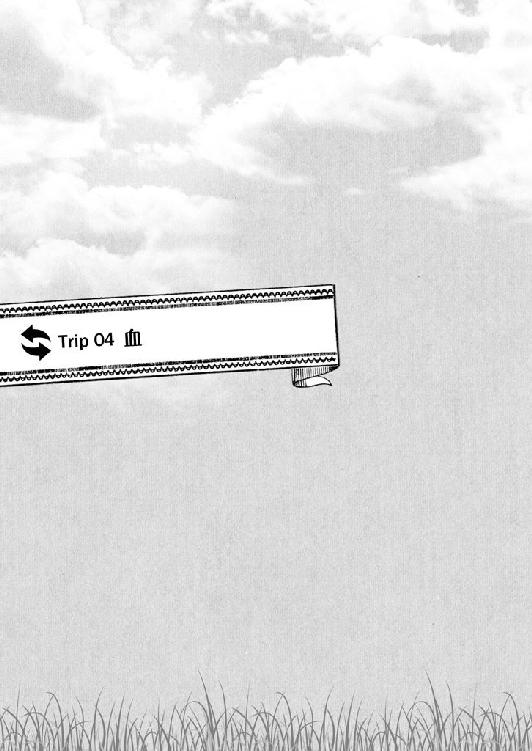
血
１
約束の日が、来た。
一日を二四の刻で割ったり、七日をひとまとめとして考えたりする日本の暦にもだいぶ適応してきたテムジンであった。今日は日曜日、基本的には労働や学業を休んで過ごすとされているらしいことも既に知っている。
が、日課の鍛錬を怠るつもりはなかった。それこそ一日でも、一時間でも早く精強な肉体を取り戻したかった。
その日も陽が昇る前からひたすら剣に見立てたバットを振りまくり、体をいじめ抜いた。
手を見る。破けた手の平にはようやく薄皮が張ってきたが、これをまた何度も何度も破いて初めて求める手になる。
一〇年かけて作り上げてきたものを、このごく短期間で取り戻そうというのだから、休む暇などあるはずがなかった。
すっかり陽が昇り、小鳥のさえずりが道を行く自動車の騒音にかき消され始めた頃、ようやくテムジンは朝の鍛錬を終えて家の居間に戻った。
と、
「はいはい、手見せて。ダメよちゃんと消毒してケアしとかないと」
草馬の母親である美佐がすっ飛んできて、テムジンの手に何かの軟膏を塗りたくってから細長い布でぐるぐると巻き上げる。
「どう？ 血染めのタオルで押さえておくよりはマシでしょう」
そう言って、美佐は笑った。
美佐が突然この家に現れたのは、二日前のことである。和治は、毎日夜になると帰宅していたのだが、美佐の顔を見たのは例の骸骨を見せられた時以来だった。
家に戻った美佐は、ここしばらく男ふたりの生活で荒れ放題になっていた家の中をてきぱきと片付け、洗濯をし、飯を作った。
そこにはテムジンを質問攻めにしていた女学者ではなく、故郷の高原でもごくごく普通に見かけるひとりの妻の、母親の姿があった。
が、
「はーい、あなたもテムジンくんもさっさとご飯食べて！ 日曜日だからってゴロゴロしない！ 急いだ、急いだ！」
その早口と、異様に爛々とした目つきは変わらない。
傷の手当てをしてもらった礼すらいう間もなく食卓に座らされたテムジンの前には、今日も温かい湯気の立つ飯が置かれている。
しかも、今日は羊だ。テムジンが高原で慣れ親しんだ羊の汁煮込みが、鍋の中でなんとも食欲をそそる匂いを振りまいていた。
「この匂いは......母上の作るやつとそっくりだ。美佐、お前は高原の料理が作れるのか？」
まさかこんな場所で大好物にありつけるとは思っていなかったので、テムジンが興奮を隠さずに言うと、
「そうよー。すごいでしょー？ 尊敬するでしょー？ モンゴルでね、ばっちり教わってきたの。はいはい食べて！」
美佐が空の器にこれでもかと盛り付けた物を差し出してきた。
「母ちゃん、朝からこれはちょっとヘビーだと思うんだが......」
「若いんだから平気、平気。食える！」
あまりの量を目の当たりにして、和治がやや引き気味に言うのも美佐はまったく意に介する様子はない。テムジンの向かいにどかっと腰を下ろすと、何かを期待するような眼差しをテムジンに送ってくるのだった。
元より遠慮などするつもりもないテムジンだったが、この期待に応えるのが手当の礼代わりかと思い定め、食った。
歯をむき出し、野獣の勢いで食った。肉を引き裂き、臓物を噛みしめ、汁をすすった。
うまい。やはり、故郷の味は馴染む。体に染み入るようだった。
あっという間に山盛りの料理をテムジンが食らい尽くしたところで、
「草馬は何食べさせてもイマイチ反応悪いから張り合いなかったんだけど、テムジンくんの食べっぷりは、見てて気持ちいいわー。ねぇ、あなた？」
「あんだけむちゃくちゃに体動かしてりゃな」
「あなたも最近、なまってるんじゃないの？ ちょっとテムジンくんに付き合ったら？」
などと、空になった器をしげしげと眺めながら美佐と和治が言った。
そんなふたりを見て、ふと浮かび上がった疑問をテムジンは口にする。
「......お前たちだけは、俺様と草馬の意識が入れ替わっていることを素直に受け入れてやがるんだな。弓奈なんぞ、俺様が何を言っても未だに聞く耳持たないってのに」
ふたりの視線が、器からテムジンに移った。
「別に俺様が気にする話じゃねぇが、心配じゃねぇのか？ 草馬は、一応てめぇらの実の息子なんだろうが」
テムジンが続けると、今度は互いに顔を見合わせてから、
「心配してないわけないでしょ。テムジンくんが言うように、あんなんでも自分のお腹痛めて産んだ子だもの」
「だが、お前がこうやってこっちで元気にしているうちは、草馬だって元気にやってるはずだ......と、俺は思ってる。違うか？」
言った。
何かの拍子にいつもの場所で出会えば、ギャーギャーとうるさいのは間違いない。あれも元気にしていると言うなら、そのとおりだった。
「あいつ、あれでなかなか頭が回るし、良い意味で諦めが悪い。俺がそう鍛えたからな」
「そこにテムジンくんの体も借りてるわけだし、あの子なりになんとかするでしょ」
まったく、肝の据わった夫婦だとテムジンは思った。エスガイやホエルンも豪胆には違いなかったが、このふたりの太さとは少し毛色が違う。
この自信がどこから来るのか確かめたい気持ちもあったが、残念ながら今は時間がない。
「今日は出かけてくる」
器に箸とさじを放り投げ、テムジンは言った。
「一応、どこに行くのかぐらいは言ってけよ」
あんまりその体で無茶されるのも困ると、そこは親らしく和治が言う。
「東京だ。東京の......なんだ？ シンジュクだったか？ とにかく、お前が前に言ってた、この国で一番でかい街とやらを見たいと言ったら、だったらそこだと北条が手配してくれた。なに、夜には帰るつもりだ」
テムジンが席を立つと、和治は「そうか」とさして興味があったわけでもなさそうに、自分が使っているスマホを手元に引き寄せていじり始める。
「じゃ、さっさと着替えなきゃ。その汚れたジャージで行かれちゃ困っちゃうわ。ご近所さんの目ってのもあるんだから」
美佐が言って、ひとり居間を出て行く。テムジンの着替えを取ってくるつもりだろう。
別にテムジンとしてはこのＴシャツとジャージでなんら問題はないのだが、せっかく新しい服を出してくれるというのを拒む理由もない。
机に放り出してあった草馬のスマホを手に取ると、そろそろ約束の時間だった。北条が家まで迎えに来ることになっていた。
２
自動車は、見た。既に驚くべき存在ではない。
電車とかいうやつも最初こそ多少は驚いたが、一度乗ってしまえばまぁ大きさと走る場所が違うだけで、基本的には自動車と大して変わる物ではないと思った。
草馬たちが日々暮らす街にある建物の大きさや広さも、これまでの生活である程度は余裕を持って受け止められるようになった。
だが......。
「テムやん、完全に固まってるで」
「驚きのあまり死んでないだろうな」
目の前にいくつもそびえ立つ、その巨大すぎる何かを見上げたまま、テムジンは完全に言葉を失っていた。綾と北条の声が、牧の反対側から聞こえてくるように遠い。
見上げて、見上げて、なおも見上げて。背中と腰が弓なりに反っていき、もうこれ以上はというところで、
「そうちゃん、ひっくり返っちゃうよ」
依子の手が背中に触れる感触と声とが、テムジンの意識をこっち側に引っ張り戻した。
「依子......教えてくれ。これは......なんだ？」
乾いた唇をなんとか唾で湿らせ、あえぐようにテムジンは言った。
「なんだって......ビル。あ、高層ビル？」
あからさまに戸惑った表情で、依子がぽそぽそと答えた。
「こ、コーソービル」
反りきってしまった体をゆっくりと戻しつつ、テムジンはつぶやいた。
「......今日、ずっとこの調子なんじゃないでしょうね」
「この調子じゃないと面白くないからいいよ、ずっとこの調子で」
「どこがよ！ 面白がらないでって言ったでしょ」
「だって、実際面白いじゃん。文明の発達してない大草原からやって来た留学生を案内してると思えば、腹も立たないだろ？」
「そういう問題？」
背後で弓奈と北条が何やら言い合っているのが聞こえたが、今はそれどころではない。
東京は、とてつもない所だった。
今まで見てきた街がキヤトの集落だとすれば、東京はケレイトかメルキト......いや、そんなものではない。金帝国そのものに匹敵するのではないか。
そう思うほどに東京は巨大で、密で、そして高かった。
「そ、それでこのコーソービルは何をするための物なんだ？ どうしてこんなにもボコボコと何本も必要なんだ？」
ようやく一時の衝撃から立ち直り、テムジンがたずねると、
「お仕事......とか」
また依子が要領の悪いことを言う。
「仕事!? ......そうかわかったぞ。この中で羊や牛を飼っているんだな？ そうだろう。いや、俺様もおかしいと思ってたんだ。今朝も羊を食ったんだが、どこから調達してきたのかがわからなかった。これで謎が解けたってもんだ」
「羊は......いないよ。牛も」
「ああ、では鍛冶か？ 自動車やら電車やら作るのには山のように鉄がいるだろう。ここで鍛冶仕事をして、作り続けているんだ。これで間違いねぇだろ！」
「それは、工場っていうところ......。ビルじゃないよ」
まったく、わからない。
「あーもういい！ 絵に描け、絵に。お前は喋るよりそっちのほうが早い。ここでなんの仕事をしているのか、絵で説明しろ」
「ふえぇ？」
焦れたテムジンが依子の肩を揺さぶると、更に戸惑いの度合いを深めた顔になりつつも、依子は鞄の中から紙と、ペンという溶かした墨が無限に染み出してくる細筆を取り出して描き始めた。
「はい」
「おう、見せろ！」
ほどなく描き上がった絵をひったくるように見た。
椅子に座った女が机の上に手を置いている後ろで、和治が着ていたのと同じ服を着た男がスマホらしき物で喋っているような様子が描かれている。
「......これが仕事か？」
「会社のお仕事......」
「そうか......」
もしかすると、依子は少し頭の残念な女なのかもしれない。テムジンは思った。
故郷の集落にも、幾人かはそんな部民がいる。
だが、女としてみればそういう人間のほうが可愛げがあったり、よく尽くしてくれたりすることも多かった。全員がそれではさすがに困るが、嫁に迎える女の中にひとりぐらいは依子のような女が混ざっていても、それはそれで彩りになろうというものだ。
そして、これまでに両の手では足りない数の女をモノにしてきたテムジンは、そういう手合いの女を頭ごなしに叱ったりしたところでなんの得にもならぬということを経験として知っていた。
「わかった。依子は本当に絵がうまいな。こんな短い時間で、これほどの絵が描ける奴は世の中広しといえどもそうはいねぇだろうな、うん」
だから、ほとんど生まれたばかりの子羊を世話してやるような、バイカル湖よりも広く深い心で接してやると決め、テムジンは依子の頭をぽんぽんと軽く撫でてやった。
案の定、
「......へへ」
恐らくはテムジンの「わかった」という言葉を想像どおり良いほうに勘違いした依子が、目を細めて笑った。
「これからも俺様のためにその能力を伸ばすんだな。いずれ俺様が後宮を構えた暁には、毎晩その日に描いた絵で俺様を迎えるといい」
「ま、毎晩？」
「そうとも。できが良ければうんと褒めてやるし、褒美だってやろう。依子の絵には、きっとそれだけの価値がある。交易に出したっていいぐらいだ」
テムジンは言った。
と、
「なんや、聞いてたら話変わってもうてるけど......優しいところあるんやねぇ」
不意にテムジンの近くに身を寄せてきた依子が、ニタッとした笑みを浮かべて言った。
何か思うところがありそうに、肘で脇腹を小突いてくる。
「褒めるに値する能力があるなら、褒めてやるさ。当然だろう？」
「おー、男らしいやん。意外とねー、今はいてへんねん。そういうスパッとした男」
「いつだって女の腐ったような野郎はいるもんだ。俺様もひとり知ってる。そいつの周りには、そいつの持ってる財産や力だけを目当てにした奴ばかり、糞にたかるハエみてぇに大勢いるが......俺様に言わせりゃ哀れなもんだな。だから、女にも振られる」
「ええねぇ、いよいよ男前やね。うち、そういう人嫌いやないで」
「だったら、綾も俺様の......」
後宮で寵愛を受けてみるか？ と、テムジンが提案しかけた時だった。
「もうそろそろ、コントは終わったか？」
肩にのしっとした重みがあって、耳元で北条の声がした。
「いい加減、駅前で馬鹿話してるのもアレだしとにかく移動だ。まずは、買い物。それから飯。けっこう歩くぜ」
言って、テムジンの肩に回していた腕を外した北条が先に立って歩き出す。
「何を買う？」
その北条をちょこちょこと追いかける依子に声をかけると、
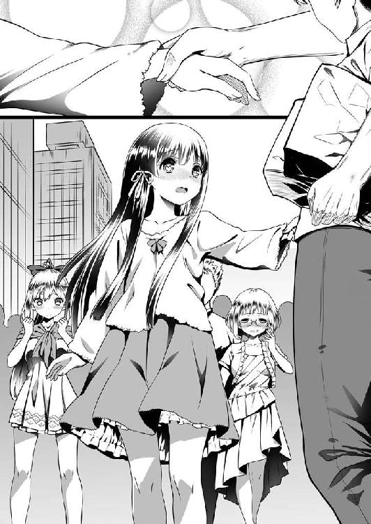
「画材。えっと、新しいスケッチブックとかえんぴつとか」
依子は、はしゃいだ声を出した。
「ほな、うちらも行こか。見たらわかるやろうけど、この人出やから迷子になってもうたらもうオシマイやで。はぐれんといてな」
綾が、テムジンの腕を引いた。
「まぁいい。どこへなりとも連れて行け。今日はてめぇらに任せてやる」
テムジンも言って、綾に腕を引かれたまま、ひとり背後に気配を残す弓奈を振り返った。
「おい、はぐれたら終わりらしいぞ」
親切心からそう声をかけてやったのだが、
「あんたに心配してもらうことじゃないわよ」
今日も今日とて弓奈の機嫌は悪かった。長い紐で肩に担いでいた小さな革の鞄をさっと腰の後ろに回したかと思うと、いきなり大股で歩き出してテムジンを追い越していく。
「ったくてめぇは可愛げがねぇな。ちったぁ、依子を見習ったらどうだ」
このまま最後尾を行くのはどうにも性分として我慢ならず、急いでテムジンも先を行く三人の後を追った。
弓奈を抜き返し様、鼻息荒いその横顔に向かって言ってやると、弓奈の肩が一瞬硬直するのがわかった。
それを見て、閃くものがあった。
嫁に迎えてやると公言した依子の名前を出した瞬間にこれということは......。
（なるほど、そういうことだったか。俺様もまだまだ修行が足りんな）
最近は、あまりそういうこともないのでうっかりしていた。
「そういうことなら早く言ってくれ、弓奈」
歩調を弓奈に合わせてやりつつ、テムジンは言った。
またしても訳がわからぬことを言い出したとでも思ったか、「は？」と目を丸くした弓奈がこちらを見た。
「いや、俺様もちょっとうっかりしてたんだ」
「な、何よ急に......」
「ボルテもそうだった。嫁に迎えたばかりの頃は、俺様が他の女に手を出すとすぐ不機嫌になったのを思い出した。だが、妬いているならはっきりそう言ってもらったほうが俺様としてもな......」
直後だった。
向こうずねに、これまで体験したことのない凄まじい衝撃が走った。あまりの衝撃に、崩れた脳みそが耳から飛び出してくるのではないかとすら思えた。
蹴られたのだ、と気付くと同時にテムジンは声も出せぬままその場に崩れ落ちた。
３
買い物そのものは、楽しかった。
確かに東京という街はこの国で一番と言うだけあって、何もかもが揃っていた。
テムジンの見た限りでは街のすべてが市のような、そんな印象である。
食い物や着る物、生活に必要な道具は言うに及ばず、書物に宝飾品、一見して何に使うのかさっぱりわからない謎な代物まであらゆる物を銭と交換で買うことができる。
いったいこれだけの品物をどこからかき集めてきたのかと北条に問うと、
「この国だけじゃなくて、世界中あっちこっちからさ」
さらりと驚くべき答えを告げた。
「金や西域とも取引があるってことか......」
「正確には、お前の言う金があったところ......かな？ 西域ってのは？」
「俺様も実際に見たことはねぇが、とにかく西だ。砂漠や山を越え、絹の道と呼ばれる街道の遙か向こう側にあるという国々のことだ」
「ヨーロッパのことか？ そうそう、そっち側もだし、太平洋......海を越えた先の国とかさ、そういうところから」
「ウミ？ ウミとはなんだ？」
「えぇ～？ そこからかよ......」
などと矢継ぎ早に質問しながら、テムジンはその目に映るすべてを脳裏に焼き付けるべく目まぐるしく視線を動かし続けていた。
やはり家がある街と同じく、この街の人間も誰ひとりとして武器を帯びていない。
客たる者だけではなく、売る側の商人たちも含めてだ。
高原にやって来る行商人や隊商たちは皆、自分自身も武装しているし、場合によっては銭や財宝で雇い入れた用心棒たちを引き連れているのが常であった。
そうしなければ、旅の途中で野盗どもに襲われた時は何も対応できない。たとえ無事に目的地に到着したとして、商売の最中に一瞬でも気を抜けば、武器を持って集まってきた集落の人間に身ぐるみ丸ごと剥がされて鳥の餌にされるのが落ちであった。
実際、テムジンも過去に備えの甘い隊商がヘラヘラした顔で集落に現れた際には、これ幸いと兵を引き連れてすべてを奪い去ったことが何度かある。
そうすることは、けっして悪ではない。悪と言うならば備えを怠った奴らのほうこそ、悪であった。無論、奪う側とてきちんと備えを整えている相手を甘く見れば痛い目に遭う。これはお互い様というやつだ。
そうやって奪うことも、時に奪われることも、テムジンたち高原に生きる者にすればごく当たり前の日常なのである。
だが、ここは違った。
テムジンの目に映る未来の人間たちは互いに赤の他人を信用して、笑顔で取引を行っている。だからこそ、テムジンはこの買い物を「楽しい」と感じたのだ。
この感覚は、テムジンに強烈な印象を残した。
いつだったかと同じように、争いのない世界についてまた思いを巡らせるテムジンであった。
街を歩き続け、やがて飯にしようという話になった。
見たこともないうまそうな料理を好きに注文してよいという夢のような店に入り、食事をした。この食事もまた、楽しかった。
が、その楽しい時間の中にあってひとつだけ気にかかることもあった。
弓奈のことである。
「いい加減、仲直りしたら君ら」
ガラスの器に注がれた、ほとんど黒に近い茶色をした飲み物をやたらに細い筒でチュルチュルとすすっていた北条が、テムジンと弓奈をやや疲れた目で眺めて言った。
「仲直りも何も、別に私こいつとケンカしてるわけでもないから」
北条の隣でそう応じた弓奈は、向かいに座るテムジンと目を合わせようともしない。
こちらも北条と同じ飲み物が入った器を手に取り、体ごと往来を行く人間たちのほうを向いている。
それぞれの買い物を一通り終え、綾の提案で『かっふぇ』というらしい飲み物や軽食を供する店に入ってこっち、ずっとこんな調子であった。
いや、この店でに限った話ではない。
買い物の間も、食事の時も、弓奈はひとりこんな調子であった。
「しょうがねぇなぁ。......ここは男のほうから折れておくのが賢明だと思うぞ、俺」
と、またテムジンに顔を向ける北条。
「知るか。そいつが勝手に機嫌悪くしてやがるだけだ」
器に直接口をつけ、中にあった氷をばりばりと噛み砕いたテムジンが言った。
ちなみにテムジンが飲んでいるのは、ただの水である。
細切れにした氷を浮かべて冷やした水（しかも湧かさずに飲める生水だ！）という、この世でこれ以上を望むべくもなかろう飲み物があるにもかかわらず、泥のような色と匂いのついた茶やらベタベタと甘ったるい果物の汁やらをありがたがって飲む気にはなれない。
買い物も街の雰囲気も楽しめたし、食事もたいそううまかったが、このあたりの価値観はまだテムジンの理解の外だった。
まぁ、それはともかくとして。
問題は、北条も言うように弓奈とテムジンの関係であった。
これまでもけっして良好とは言えない間柄であったが、向こうずねに蹴りを食らわされた一件で、これまで危ういところで保たれていた何かが完全に破綻してしまった感があることにはテムジンも気付いていた。
水と色つき茶のこともそうだが、まだまだ未来の世界については未知の部分が山のようにある。なので、うまくやっていくには極力敵は作らないほうが賢明だ。
誰に言われるまでもなくテムジンとてそう思っているので、あれから何度か自分から弓奈に話しかけ、族長の手本と言ってよい寛容さで弓奈に......機会を設けてやったのだが......そのすべてを弓奈は無視した。
で、とどめに今のこの態度である。
見る物すべてが人生初体験で興奮しきりだった気持ちも、さすがに萎えようというものだ。首をはねないだけありがたいと思え。正直、そんな心境になりつつあった。
（ただし、元の世界に戻る前には必ず体も心も陵辱し尽くして、これまでの無礼な振る舞いを後悔させてやるからな！）
そんな黒い決意も新たに、テムジンは策を変えた。
弓奈に心底からの協力をさせることがかなわないのであれば、他を探すまでである。
「依子、あとは他に欲しい物はねぇのか？ どんだけあるのか知らんが、美佐からそれなりに銭を渡されている。買える物なら俺様が買ってやるぞ」
右隣で焼き菓子をちびちびとやっている依子に、テムジンは愛想良く話しかけた。
「綾はどうだ？ 欲しい書物は手に入ったのか？」
左隣の綾にも気を配る。
「ほんまに？」
先に反応したのは綾だった。
「おうとも、言ってみろ」
「えー、それじゃあちょっと高くて迷ってた技術書があるんやけど......」
目を輝かせた綾が、テムジンの手を取って言いかける。
と、
「はいそこ、埼玉生まれ千葉育ちのエセ関西人！ 空気読む！」
テムジンの策に思いっきり水を差す形で、北条がわざとらしい咳払いとともに言った。 そっぽを向いたままの弓奈を指さす。「あっ」と、ばつが悪そうな顔になった綾が手を引っ込めた。
「気にするこたねぇ。弓奈はな、俺様が依子や綾と仲良くしてるのに妬いてやがるんだ。素直に自分も一緒に可愛がってくれと言えば、俺様だって広い心で受け入れてやるものを」
聞こえよがしにそう言って、テムジンが依子と綾の肩に両腕を伸ばしかけた時だった。
「もう付き合ってらんない。帰る」
一度だけ、キッとテムジンを睨み付けた弓奈が荒っぽい動作で席を立った。
「ゆ、弓奈ちゃん......」
依子がすがるような声で言うのに、
「ごめんね、依子ちゃん。でも、私......本当にごめん」
さすがに自分のせいで場の空気が悪くなっていることには罪悪感があるのか、顔を歪めて答えるものの決心に変化はないようだった。
「これ、お金」
自分の飲んでいた茶の代金を机に叩き付け、本当に店を出て行ってしまう。
「さすがに......ちょっとマズくない？」
弓奈が姿を消した後、北条がため息をついて言った。
「俺様は、何度も機会をやったんだぞ。無視したのは、あっちだ」
鼻を鳴らし、テムジンは椅子に座り直した。
「俺はさ、お前の言うこと割と信じてるよ。確かにお前は、蒼原じゃない」
そんなテムジンに、急に真面目な顔になって北条は語りかけてきた。
「何を今更......。何度もそう言ってるだろう」
「でも、弓奈ちゃんの気持ちとしてはやっぱり信じられないんだと思うぜ？」
「誰が何を思おうと事実は事実だ。こればっかりは、曲げられねぇ。草馬は俺様の代わりに高原で部族を率いていて、俺様はここにいる。それとも何か？ 弓奈の前でだけ、俺様は草馬のふりをしろとでも？」
「ま、蒼原だったらそうしてるかもな。俺はそこまで言うつもりはないよ」
「じゃあなんだ？ はっきり言え」
焦れて、テムジンは腰を浮かせかけた。それを制したのは、意外なことに依子だった。
「まず、弓奈ちゃんに謝ったほうがいいよ」
「俺様が謝ることなんぞ何もねぇ」
「そうちゃん......」
「俺様は草馬じゃねぇ！」
思わず、声を荒らげてしまった。一瞬、依子は怯えたように首をすくめたが、
「どっちでもいい」
またしても意外なことに、それで引っ込むことなく真っ直ぐにテムジンを見て言い返してくるのだった。
「そうちゃんでもテムちゃんでも、どっちでも......弓奈ちゃんには、優しくしてあげて。弓奈ちゃん、かわいそう」
かわいそう、と依子は繰り返した。
「とにかく、追いかけてふたりで話し」
今度は、綾だった。
弓奈が出て行った方向を指さして、テムジンを促す。
「どうして俺様が......」
「アオやんやったら、そうするから......かな？」
「かな？ じゃねぇ。なんだその理由は！ 俺様をあんな軟弱者と一緒にするな！」
「いいから行き！」
有無を言わさぬ口調で、綾がテムジンの尻をつねった。
「テムやんだって本当は、このままでいいことないって思ってるんやろ？」
「そんなことはねぇ」
「嘘や」
「嘘じゃねぇ」
「......ほな聞くけど、本当はテムやんのほうがアオやんに妬いてるんと違う？ うちや依子ちゃんには愛想いいけど、弓奈ちゃんにはそうできんのは、弓奈ちゃんだけがずーっとあんたを元のアオやんだと思ってるのが面白くないからやろ？」
違う。
テムジンは即座にそう答えようとしたが、なぜか言葉が出てこなかった。
そうなのか？ そんな馬鹿なことがと、自問してしまう。
綾の問いかけは、これまで考えもしなかった方向から飛んできてテムジンの胸をえぐっていた。死角からの矢は、かわせない。
（どうしてここで、ジャムカの野郎がちらつきやがる）
かつてボルテをジャムカから奪い取った時、ジャムカはボルテをどうにか翻意させようとあの手この手を弄してきた。自分がテムジンに劣っていることを潔く認めず、しばらくの間恨みがましい目で周囲をうろちょろしていたのを、テムジンはボルテの肩を抱き寄せてせせら笑っていたのだが......。
記憶の中にあるその情景が、変わっていた。
ボルテの顔が、弓奈に。テムジンの顔が、草馬に。ジャムカの顔が、テムジンに......。
悪夢のような幻影だった。
必死の思いでその幻影を頭の中から追い出す。それでも、しつこくまとわりついてくるのを全力で振り切るべく、テムジンは勢いをつけて立ち上がった。
草馬と一緒にされるだけでも我慢ならないのに、そこに加えて自分があのジャムカと同じところに堕しているなどと、考えるだけでも身の毛がよだつ。断じてあってはならないことだ。何がなんでも、違うということを証明せねばならなかった。
「冗談じゃねぇぞ！ この俺様があんな野郎と！」
テムジンは、狼のごときうなり声とともに叫んだ。
弓奈は、まだそう遠くへは行っていないはずだ。帰るとほざいていたからには、駅に向かったに違いない。
器の中に残っていた氷を一気に口の中に放り込み、すべてをひと噛みで粉砕してからテムジンは猛然と踵を返して弓奈を追った。
４
弓奈を探した。
この人混みの中である。時を置けば置くだけ、見つけられる可能性は下がっていく。
大小さまざまな道が行き交い、至る所で辻が口を開けている街中でたったひとりを探すのは、狼に追われて草原に散ってしまった家畜を見つけるよりも遙かに難しかった。
辛うじて頭の中に入っていた、駅までの道順をたどってテムジンは走った。
弓奈がこの道を歩いているならまだ目がある。既に駅に到着して電車に乗ってしまったか、もしくは気まぐれに「でぱぁと」なんぞに入られてしまっていたら、もうお手上げだ。
ちりちりと胸の中で焦燥感が火勢を強める中、テムジンは周囲に視線を飛ばした。
（ああくそっ！ どこにいやがる!?）
何度も舌打ちを繰り返し、探し続けるうちに巨大な駅の建物が見えてきた。
もはやこれまでかと諦めかけたその時、ふと視界の片隅に馬の尾のように束ねた髪を揺らす姿が入り込んだような気がした。
弾かれたようにそちらを見る。
......見つけた。間違いない。テムジンの目が、前方を歩く弓奈の後ろ姿を捉えていた。
ここから見る限り、弓奈の足取りは重たい。
やや肩を落とし、虚ろな様子でとぼとぼと歩いている。
これならばすぐに追いつくと、軽く額の汗をぬぐってからテムジンは歩を早めた。
弓奈の背中が、近づいてくる。
もう二、三歩で肩に手が届くという距離で、
「おい待て、弓奈！」
テムジンは街の喧騒にかき消されないよう、声を張り上げた。
次の瞬間、弓奈の肩がびくりと一度持ち上がった。
どうにか間に合ったか。まったく手間を取らせやがると、テムジンが安堵しかけた時、
「ちょっ！ 待てっ！」
突然、なんの前触れもなく弓奈が走り始めた。
明らかにテムジンの声に気がついているはずだが、こちらを振り返るどころか、何か声を発することすらなく逃げ出したのだ。
考えている時間はない。慌ててテムジンは後を追った。
弓奈は、俊足だった。肩にかけていた鞄を手でひっつかんだかと思うと、結った髪を激しく左右に揺らしながら物凄い速さで駆けていく。その様は、本当に気の立った駿馬が牧から逃げ出したのを追っているのではないかと錯覚させるほどだ。
いくら鍛え直している最中とは言え、本気になった弓奈とこの草馬の体では恐らく勝負にならない。振り切られるのは、時間の問題だった。
だが、ここで弓奈を見失えば今度こそおしまいだった。絶対に逃がすわけにはいかない。
（なめるなよ！ 馬追いならボオルチュにだって遅れは取らねぇ！）
前を行く弓奈にテムジンは目を懲らした。見るのは、足下だ。
草原を縦横に走り回る馬を捕まえるのに、真っ直ぐ馬鹿正直に追いかけていては話にならない。馬が次にどちらに向かうのかを瞬時に判断し、あらかじめその方向に先回りするのが馬追いの鉄則だった。
前方は行き止まりだ。右か、左か。じっと足下に注目し続ける。
右へ曲がるとすぐに大きな通りがあって、無数の自動車が行き交っている。
左なら駅への入口だ。
弓奈の右足が、わずかに外へ向いた。
（......右だ！）
弓奈が走る方向を変えるより早く、テムジンは動いた。目の前にいた小太りの中年男を突き飛ばすような格好で、テムジンは斜めに大通りへと突っ込んで行く。
男が何事か非難の声を上げたのが聞こえたが、無視した。
車の列が止まり、道を渡ろうと待ち構えていた人間たちが一斉に歩き始める。その中に、弓奈の姿もあった。
流れる人垣が弓奈の視界からテムジンを隠してくれる。この瞬間に限って、人混みがテムジンに味方した。
弓奈が道を渡りきるかどうかというところで、ぎりぎり先回りに成功し、
「話を聞け！」
ばっと弓奈の眼前に躍り出ながら、テムジンは言った。
「な、なんなのよ！ ついてこないで！」
さすがにこの展開は予期していなかったようで、弓奈がぎょっとした顔で言った。
「てめぇが逃げるからだ」
「に、逃げてなんかない。私はこっちに用があるの！」
「さっき帰ると言ってたろうが」
「う、うるさい！」
テムジンを押しのけて、弓奈が先へ進もうとする。
そうはさせじと、テムジンは腕を広げて立ちはだかった。
「どいて」
「話をさせろ」
「なんの話よ？」
「それは......」
......それは、なんだ？
広げたテムジンの両腕から力が抜けた。
まずは弓奈を追いかけ、捕まえることばかりを考えていて、肝心なことがすっぽりと頭から抜け落ちてしまっていたことに、ここで初めてテムジンは気付いた。
まずは、未だにテムジンのことを「頭がおかしくなってしまった状態の草馬」であると思い込んでいる弓奈の誤解を解く。
その上で、綾が指摘したことが間違いだと弓奈にもテムジン自身にも納得させる。
やるべきことはわかっているのだが、言葉が出てこない。
なんと言って納得させれば......そもそも、どう切り出せば良いのかまったく思い浮かばないテムジンであった。
（こ、こうなったら相討ち覚悟で一発ぶん殴って、気絶させたところをさらっちまうほうがいいか？ 話はその後で......）
などと、愚にも付かない下策が脳裏をかすめたりもしたところに、
「最低っ！」
弓奈が振り下ろした手刀が、広げっぱなしだったテムジンの右腕を打った。
「いでっ！」
じんと痺れた右腕をテムジンが反射的に下げたところを、弓奈が強引に押し通った。
また走って逃げようとはしないものの、肩を怒らせて大股で歩いて行く。
進む先に、また大きな道が横たわっていた。
テムジンのことなど一顧だにせずその道を渡る弓奈。とにかく、追いかけるしかできないテムジン。
やがて、やたらと派手な門のようなものが見えてきた。
テムジンがその門を見上げると、『歌舞伎町一番街』と書かれている。意味までは、わからない。落ち着いて眺めていれば、草馬の記憶が浮かび上がってきたりするのかもしれないが、今気にするのはそんなことではない。
「弓奈、聞け」
門をくぐって更に行く弓奈に、とにかくテムジンは声をかけた。
「話しかけないで。ついてこないで」
弓奈の返答は、にべもない。
ふと気がつくと、既に時刻は夕暮れ時を越えつつあった。過去でも未来でも、変わらず陽は西の地平に没し、夜がやって来る。
電気という不可思議な力が、街の至る所にある看板やら何やらにギラギラと目を焼くような灯りをともす。
その様子を見たテムジンならではの独特の嗅覚が、街の雰囲気が一変しつつあるのを鋭敏に感じ取っていた。
この街は、昼と夜とではその顔を変えるらしい。
以前、ボオルチュやベルグタイと連れ立って、金と結んでいるオングート族の集落を偵察に行ったことがあった。
オングートの民は金からもたらされた文化にどっぷりと染まり、ほぼ遊牧を捨てて一カ所に定住することを選んでいた。当時のテムジンはその言葉を知らなかったが、つまり街を作ったのだ。
無論、こことは比べるベくもない小さな街であったが、その街の裏通りを歩いた時と似たような感覚がテムジンを包んでいた。
通りには酒を供する店が並び、女も売っていた。中には、もっと危険な物も。
「芥子の実から取れる液を固めて粉にしたものに火を点け、煙を吸うのだ」
ボオルチュが言っていた。
「元々は、傷や病の痛み止めに使う物らしいのだが......これを健康な人間が吸うと、無類の快楽を得られるという。だが、吸い続ければ中毒となり、これ無しでは生きていけない体になってしまうのだそうだ」
「アピエンというらしいのですが、金はオングートの民にこの薬を戦の報酬として与えることで言うことを聞かせているのだとか」
暗く陰鬱で、かつ爛れた空気の中でベルグタイも顔をしかめていた。
（......同じ臭いがしやがる）
だいぶ薄まった感じではあるものの、どろりと淀んだあの空気が確かに漂っていた。
女子供がひとりでフラフラしていれば何が起きるかわからないような危うさがあることに、弓奈は気付いているのだろうか。
恐らく、気付いていまい。
弓奈は入り組んだ街の中を右へ左へと曲がりながら歩いている。少しでもテムジンを引き離そうという気持ちだけが先に立って、まったく周囲が見えていなかった。
「いい加減、その辺にしておけ。もう、陽が落ちてる」
「あっそ。だったら、ひとりで帰って美佐おばさんにご飯食べさせてもらえば？」
「狼が出るぞ」
「出るかっ！」
ギラギラした灯りの数が、少し減ったような気がした。
いつの間にか人気が失せている。その分、臭いが強まっていた。
わずかに通り一本それただけだが、そこに穴が開いているのだ。どうやら、ふたりともその穴の中に足を踏み入れつつあるようだった。
どうにかして弓奈の足を止めさせなければならない。
何か弓奈の耳に届く言葉はないのか。
......ある。実はひとつだけ、最初からテムジンには弓奈を振り返らせられる方法に心当たりがあった。
謝ってしまえばいいのである。自分から。
ところが、これが簡単なように思えて難しい。テムジンのような人間にとっては、特に。
まだ自分のものにしてすらいない女に軽々しく頭など下げられるかという思いが、どうしてもテムジンを躊躇させるのだった。
たとえば、ボルテに謝るのならいい。なぜなら、既にボルテはテムジンのものである。身も心もだ。喧嘩は日常茶飯事であったが、どれほど派手に言い争ったとしても最終的にボルテならば折れる。
本当の意味でボルテがテムジンに背くことなど、太陽が西から昇る以上にあり得ないことだと確信しているし、テムジンから謝ったとしてもあとから色々な形でいくらでも取り返しは利くのだから、それほど悩むこともない。
しかし、弓奈は違う。
テムジンの頭の中には常に、この未来の世界に最初にやって来た夜のことがこびりついている。スマホで弓奈と話をした時、いくら切羽詰まっていたとは言え哀願して助けを請うような真似をしてしまったことだ。
あれは、我ながら無様だった。モンゴル高原に生きる男として、戦士として、矜持も権威もあったものではなかった。
（何を迷う。弓奈などどうなろうが、知ったことじゃねぇだろう）
心の中で、もうひとりのテムジンが囁く。それもそうだ、と納得しかけると、
（だが、それじゃ綾の言うことを認めるようなもんだぞ？ 本当にジャムカの野郎と同じになっちまうぞ？）
また別の声が、背を押す。
こんな葛藤をしている間にも、弓奈は自分から狼に噛まれに行く羊のごとく、臭いの強いほう強いほうへと歩みを進めていく。
「ああっ！ くそっ！」
両手で、テムジンは頭をかきむしった。
そして、
「俺様が悪かった！ 謝るっ！ 俺様は、お前と諍いを起こしたいわけじゃねぇ。だから、話を聞いちゃくれねぇか？」
納得しがたいことは多々あるものの、先ほど食べていた氷のごとくにそのすべてを噛み砕き、飲み込んで、テムジンは言った。
ぴたり、と弓奈の足が止まった。
ほっと、テムジンが息をつきかけたその時だった。
「なになに？ 今のやつ」
「アレかな？ カノジョ、カレシと喧嘩しちゃった？」
「あらー、見た目けっこうカワイイのにカワイソー」
弓奈の、更に前方から男の声がした。
もう一度、テムジンは頭をかいた。
一足遅かった。こうなるのではないかという予感が当たってしまったことに、軽い苛立ちを覚えながらテムジンが近づいていくと、案の定、暗がりの奥から三人の男たちが弓奈を取り囲むように近づいてきていた。
真ん中を歩くひとりは、髪の毛が金色。右のふたりめは、そういう装飾品なのだろうか、耳や鼻、唇にまで金物の輪っかをいくつも通していた。最後の三人目は、顔に特徴こそないものの他のふたりに比べ頭抜けてでぶだった。
「な、なんですか......」
弓奈が、一歩後ずさった。それで、テムジンと肩が並ぶ。
「声もカワイイよー。アイドルみたい」
でぶが、醜く体を揺すって言った。金色と輪っかが、ゲラゲラと笑った。
三人とも、見るからに胡乱な目つきであった。そして、テムジンの鼻に障るあの臭いをまき散らしていた。
だが、そう大したことはない相手だとテムジンは踏んだ。
格好こそ奇抜だが、狼と呼ぶには可愛い手合いである。
オングートの集落で見かけた奴らは、もっと強烈な凄みを放っていたり、あるいは、本能的に近づかないほうが良いと思える狂気をはらんだ目つきをしていたものだ。
「失せろ。てめぇらに用はねぇ。とっとと、ねぐらに帰れ」
犬を追い払う仕草で手を振り、テムジンは三人組に向かって言った。
三人組が顔を見合わせ、次に全員揃って爆笑した。
「カレシ、カッコイイー！」
「でもさぁ、こんなカワイイ子のこと怒らせちゃギルティーでしょ」
「罰金もんなんじゃないのー」
テムジンの言うことなど、どこ吹く風。右から左に聞き流した様子で、
「カノジョもさ、こんなヒョロくてイケてない奴よりオレたちと遊ぼうよ。楽しい所、いっぱい知ってンだ。スッキリさせてあげるからさ」
金色が、テムジンと弓奈の間をこじ開けるように体を入れ、弓奈の腕を取ろうとした。
馬鹿な奴らだとテムジンは思った。
こいつらは、弓奈を知らない。弓奈の空手なら、この程度の相手なら全員一撃で地べたに這いつくばらせることができるだろう。
（カスどもめ、少し痛い目を見るがいい）
そうも思って、あえてテムジンはしばらく黙って様子を見ることにしたのだが、
「......や、やめてください」
そこでテムジンは、自分も知らない弓奈の姿を目の当たりにすることとなった。
あろうことか、弓奈は怯えていた。こんな格好ばかりのゴロツキ相手だというのに、拒絶する声は弱々しく、足まで震えているではないか。
何をしている。俺様を殴り飛ばした時のように、さっさと制裁の一撃をくれてやればいいだろう......。思いがけない展開にテムジンが呆然としていると、
「は、放して！」
やっとの思いといった感じで金色の手から逃れた弓奈が、三人組から顔を背けた。
そこでテムジンと弓奈の視線が、一瞬交錯した。
弓奈の目は、明らかにテムジンに何かを訴えていた。その目が、惚けてしまっていたテムジンの意識を覚醒させ、悟らせた。
どれほど技を鍛えていても、弓奈は素人なのだと。
テムジンは、黙って一歩踏み出した。さっきとは逆に弓奈を背中にかばようにして、まだ空中をふらふらと泳いでいる金色の手を取って引き寄せる。
「お？ お？」
金色が、何か面白いものを見るような目つきに変わった。
今のテムジンと金色では、頭ひとつテムジンのほうが低い。つかんでみてわかったことだが、金色は服の下にそこそこの肉体を隠している。
「カレシぃ......。あんまイキがんないほうがいいんじゃないの？」
あらゆる意味でテムジンを下に見て、金色が臭い口を開いた。
「そうだよ、今更遅いよなー。カノジョこんなトコに連れてきちゃって」
と、脇のデブ。
「三対一だぜ？ それにそいつ、キックかじってるからな？」
輪っかが続いた。
だが、すべてテムジンは無視した。ただ、金色の顔を睨み付け、これ見よがしに拳を握ってゆっくりと持ち上げる。
金色の顔が、下卑た歪みかたをしたその刹那、
「てめぇも素人か」
言うが早いか、テムジンは全力で金色の向こうずねを蹴り付けた。それも、踵で。
朝、弓奈に一発食らわされたのをテムジンは忘れていなかった。
完全に注意の外にある場所をいきなり攻撃されれば、その衝撃は来ると備えている時の何倍にも跳ね上がる。
固めて見せた拳は、完全に注意をそらすための撒き餌だった。
卑怯だとは微塵も思わない。元の鍛え抜いた肉体ならば、小細工抜きで正面からぶちのめせば済む話だが、今のテムジンに手段を選ぶ余裕はないのだから。
「いっでぇっ！」
唾を飛ばして、金色が叫んだ。背を丸めて、蹴られたすねに目をやる。
頭が、ちょうどいい高さに下がっていた。
やはり素人だ。殺しあいの最中に敵から目線を切るなど、自殺行為もいいところだった。
たとえ技や肉体が敵に劣っていても、最後は覚悟の差が物を言うのが戦いなのだということを、テムジンはその人生においてよくよく思い知っていた。
そして、ひとたび始めたならば完全に敵を叩き潰すまで一切手を抜くなということも。
勢いをつけたテムジンの頭突きが、ぐちゃり、と金色の鼻っ柱にめり込んだ。
パッと鮮血が舞い上がり、金色が顔をのけぞらせた。もはや、悲鳴もあがらない。
がら空きになった腹につま先をぶち込んだ。また背中を丸めてえづいたところに、膝。下からあごを突き上げる。前に後ろに金色の体が跳ね、仰向けに倒れた。
だが、まだ脅威は去っていない。
テムジンは、ひっくり返った金色の喉仏に踵を乗せて、輪っかとデブを睨んだ。
「もう一度言うぞ。失せろ。できるだけ遠く、俺様の目が届かない場所まで。さもなくば、てめぇらの仲間は、ここで死ぬ。喉を踏み砕かれてな。それでも構わねぇと言うなら、俺様も全力で相手をしてやるぜ」
輪っかとデブの顔が、真っ青になっていた。
だめ押しのつもりで、テムジンは喉仏にかかった踵にじわりと体重をかけた。金色が、潰れた蛙のような声を出した。
「や、やべぇよコイツ......。ぶっ飛んでやがる」
「お、俺......知らねぇ！」
歯の根が合わぬ様子でふたりが声を絞り出し、後ずさった。
「失せろっ！」
歯をむき出し、テムジンは叫んだ。弾かれたように、輪っかとデブが奇声を上げながら走り去っていった。
「ザコどもが」
ふたりが消えた方向に向かって毒づき、ようやくテムジンは金色から足をどけた。
さすがに、死んではいまい。
だが、すぐにこの場を離れたほうがいいのは間違いなかった。逃げたふたりが仲間を連れて戻ってくるかもしれないし、さすがにこれだけの騒ぎを起こせばどこかで人目についていることも考えられる。この街の衛兵にでも知らされて、あれこれほじくり回されるのもご免であった。
「おい、面倒なことになる前に消えるぞ」
言って、テムジンは背後の弓奈を振り返った。
返事を待たずその手を引くと、
「嫌っ!!」
弓奈が、強烈な拒絶の意志を発してテムジンの手を振り払った。
唖然として、テムジンは弓奈を見た。
異様な目つきになった弓奈の視線が、テムジンを貫いた。
まだ三人組の影に怯えてしまっているのかと思ったが、違った。怯えているのには変わりないが、その相手が違っている。
弓奈は、テムジンに怯えているのだった。
「おい......」
「ち、近づかないで！」
手にした鞄をめちゃくちゃに振り回し、弓奈が言った。
「助けてやったのに、なんだその態度は」
「そんなこと、どうでもいい！」
「なんだと？」
どうでもいいとは聞き捨てならず、テムジンも思わず剣呑な目つきになる。それを見た弓奈が、とっさに目をそらそうとした。しかし、何か思い直したように踏みとどまり、
「あなた......草馬じゃない」
言った。
「あなた、いったい誰なの!? 草馬は......草馬はこんなことしない！ できる子じゃない！ こんなひどいこと......」
弓奈の目が、テムジンの足下で伸びている金色に向いた。
「だから、何度も言っているだろう」
なんだか知らないが、ようやくわかったか。何を今更、と言いかけてテムジンはそこで言葉を失ってしまった。
見たくないものが目に入った。何よりテムジンが苦手なものだ。
弓奈が、泣いていた。ぽろぽろと、両の瞳からとめどなく涙の雫を溢れさせ、弓奈は何度も何度も喉をしゃくり上げていた。
「やだ......もうやだよう......」
手の平で顔を覆い、弓奈が言った。馬の尾に結った髪が、力なく左右に揺れる。
「お願い......。私が悪いなら謝ります。だから、返してください......」
「返せ......だと？」
「草馬を返して......。私の幼なじみで、いつもゲームばっかりやってる草馬を返してよ。北条くんたちと楽しそうにゲーム作ってる草馬を返してよ......。ずっとゲームやってていいから......私、もう怒らないから。草馬が好きなご飯もまた作ってあげるから。だから......帰ってきてよぅ、草馬ぁ......」
「弓奈......」
天神か、あるいは別に未来の人間が信じる神か......ともかくもう、弓奈はテムジンを見てはいなかった。他の誰かに向かって言っていた。祈るように。
まさか、こんな形になるとは思わなかった。
こうなってはもう、どうにもならない。弓奈の気持ちが多少なりとも落ち着くまでは、まともに話などできそうになかった。
「まったく......参るぜ......」
テムジンの全身から、気が抜けた。天神に祈りたいのは、こっちのほうだと天を仰ぐ。
その一瞬の気の緩みに、魔が宿った。
不意に、テムジンの腰に近い脇腹に熱が走った。
「......あん？」
何が起こったのかと体をよじり、見た。
「......っざけんな......よ......」
もごもごと、くぐもった声。
いつの間にかうつぶせになり、半身を起こした金色がいた。
金色が短刀を逆手に握っていた。そして、その短刀は......。
絶対に忘れてはいけないことを、テムジンは忘れた。弓奈の涙が、忘れさせてしまった。
敵はまだ死んではいない。殺していないなら、速やかにこの場を離れなければならなかった。当然だ。死んでいない敵は、いつまた立ち上がるかわからないのだから。
しまった、と思った時には往々にしてもう手遅れである。
体に力が入らない。ぐらり、と自分の体が傾くのがわかった。
脇腹に突き立っていた短刀が、更に傷を切り広げながら抜けた。倒れる寸前、その刃が真っ赤に染まっているのをテムジンははっきりと見た。痛みは、感じない。
弓奈が、叫んだような気がした。
同時にいくつかの足音がこちらに向かってくるような気もしたが、確かめることもできないまま、テムジンの頭は硬い地面に打ち付けられていた。
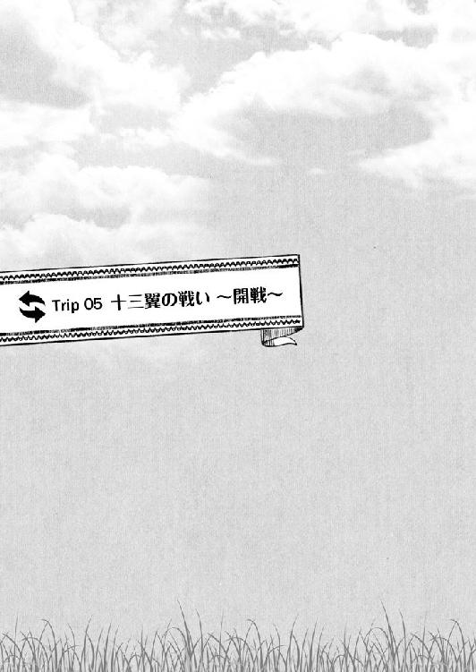
十三翼の戦い ～開戦～
１
「族長のアイディアを検討して、隊の最小単位を設定してみました。まず、一〇人を一隊として隊長を付けます。次に、その一〇人隊を一〇個まとめて一〇〇人隊を編成し、またそれを一〇隊集めて千人......」
作戦会議専用に新築した広いゲルの中央、巨木を丸ごと切り出した大きな円卓の上に何枚もの紙に記した図面を指しながら、ムカリの説明が続いていた。
「で、最後はその千人隊を一万人に編成したものを三つ。これをそれぞれ、チラウン殿、ボロクル殿、そして僕が率います。それでも数千が残りますので、これをカサル様とボオルチュ様、ジェルメ殿で分けてもらう......今のところ、このぐらいがちょうどいいんじゃないかと思うんですが」
会議に集まっている面々は、以下のとおり。
まずは、族長である草馬。
次に馬術と武術において非凡な才能を示したチラウン。
続いてカサルの守り役だった経験と、兵からの人気が高いことで抜擢されたボロクル。
唯一、草馬の秘密を知りながらも腹心中の腹心として仕えるボオルチュ。
後方支援の大役を一手に引き受けるベルグタイ。
そして、今回の軍議で説明役を買って出ているムカリ。
「一個、聞いてもええかのぉ」
そこで手を上げたのは、ボロクルだった。
「別にムカリの言うことにケチつけたいゆーことじゃないんじゃが、いくらなんでも大雑把すぎじゃ思うんよ。ほんまにこがぁな編成で大丈夫なんか？」
フウシン族という高原でも辺境も辺境の部族出身であるボロクルの言葉には、特有のなまりがある。少々聞き取りづらいと言えばそうなのだが、熊のぬいぐるみのような風貌のボロクルがこんな風に故郷の言葉使いで喋ると、なぜだか場が和む。この辺が、兵から人気がある理由のひとつかもしれなかった。
「ボロクル殿の懸念もわかります。ですが、急激に膨れあがった今の我が軍で金の軍隊が採用しているような複雑な編成をしてしまうと、余計な混乱を招くのがおちです」
ボロクルの質問に、ムカリがよどみなく答えた。
「族長やボオルチュ様と、何日もシミュレーションを繰り返した結果です。現状、この編成がベストと言っていいと思います」
あまり手入れのなっていない長い髪を背中まで垂らし、丈が足下まである外套を肩で引っかけているというムカリの出で立ちは、研究一筋の学者然としたものである。
事実、個人で金から書物を輸入しては読みふけっていたというだけあり、知識の量は抜群。その上、尋常ではない記憶力と吸収力の持ち主で、草馬が時折使ってしまう未来の言葉も難なくその意味を推測して自分の物にしてしまっているという筋金入りの頭脳派だ。
今使っている紙の製法を一族にもたらしたのも、ムカリの仕入れた知識だった。
「あのさ、俺っち学がねぇからあんまり難しい言葉使われるとわけわかんねぇんだよな。もうちょい、バカにもわかるように噛み砕いてくれっと助かンだけどよ」
そんなムカリに向かって言い、鼻の頭をかいたのはチラウンである。
元々は鍛冶屋だったという異色の経歴ながら、剣を取らせれば天下一品。加えて、元鍛冶屋らしく非常に手先が器用で、武器や鎧をもっと使いやすくできないかといつも改良にいそしんでいる。
ざっくばらんで砕けた物言いと、釣り目に細マッチョな見た目と合わせて、工業高校を出て自動車整備工かなんかになった元ヤンといった印象を草馬は抱いていた。
「ああ、これは失礼。ついつい......」
チラウンの言葉にぺこぺこと頭を下げたムカリが、草馬が教えたと言うか勝手に覚えた横文字をチラウンにもわかる形に直してもう一度説明した。
ニカッといい笑顔で笑ったチラウンが「よくわかったぜ」とうなずいたところで、
「いかかですか、族長」
ムカリが草馬に意見を求めた。
「いいと思うよ」
と、草馬。ムカリの描いた配置図を眺め、「赤ある？」と朱色を含ませた筆を手に取る。「あとは、伝令の方法だな。まずは馬による直接の伝令が、こうやって......こう」
○や△の記号で表された兵団の隙間を縫うように、草馬は筆を走らせた。
それをのぞき込む幕僚たちのほとんどが無言でいる中、「おお」と感嘆の声を上げたのはやはりムカリだった。
「素晴らしい。中継地点の設定もパーフェクトです。これなら、どれほど広く陣を展開しても最短距離を通って本陣からの指示が届きます」
「最前線からの報告もね」
筆を置き、草馬はチラウンを見た。
「チラウン、伝令部隊が使う専用の装備を作れるか？ 数は一〇〇もあればいい。とにかく軽くて馬に負担がかからず、身動きが取りやすい。そして、味方にはすぐにわかるけれども敵からは目立たないやつだ」
「そんなン、朝飯前っすよ。任しといてください！」
「それから......鏑矢っての？ ピューって音が鳴る矢」
「うっす。いくらでも作れます」
「音って変えられる？ ピューだったり、ぴょろぴょろ～だったり」
「もちっす！」
チラウンが頼もしく請け負うと同時に、ボロクルが手を打った。
「なるほどのー。音の違いで、本陣からの命令を伝えるゆーわけか」
「そういうこと。同時に色の違う旗を揚げさせる。赤なら攻撃、黒は退却......みたいに」
うなずきながら、草馬は手にしたままの筆で紙の余白に旗の絵を描き込んだ。
「目と耳と、両方で確実に命令を伝えられるということか」
「いいですね。もう少し工夫をすれば、色や形、音の組み合わせで味方だけに通じる符丁を作ることもできますよ」
ボオルチュが唸り、ムカリも乗り気そうにあごを撫でた。
「あとは、兵の訓練ですね。ボオルチュ殿の腕の見せ所というわけですか」
黙って話を聞いていたベルグタイも明るい声で言うと、
「それを言われると気が重い。また俺だけが嫌われ役ではないか」
最近は以前に比べて砕けたところが出てくると、民の間でももっぱらの噂になっているボオルチュが肩をすくめた。
ゲルの中が男たちの笑い声に包まれた。
と、
「申し上げます！」
ひとりの若い兵が、息せき切ってゲルの中に飛び込んできた。
「コラ、軍議中だぜ？」
チラウンがとがめ立てしたところに、
「そがぁに目くじら立てんでもええじゃろ。なんじゃ？ 言うてみんさい」
太い指でチラウンの肩をつかんだボロクルが、兵士に水を向けた。
「は、はい。コンギラトに行かれていた奥方様とジョチ様が、間もなく戻られるとのことです。たった今、護衛の隊からの伝令が到着しました」
兵士が、直立不動で言った。
「ボルテが？」
思わず浮かれた声を出してしまった草馬が、
「ご、ご苦労。下がっていい」
慌てて威厳を取り繕って言うと、くくっとベルグタイが忍び笑いを漏らした。
「良かったですね、兄上。姉上とお会いになるのも一カ月以上ぶりですか？ ジョチもまた少し大きくなったことでしょう」
「う、うるさいな」
軽くベルグタイを小突いて黙らせ、草馬は兵士に言った。
「母上や集落のみんなにも知らせてやってよ」
「ははっ！」
族長直々の命令に頬を紅潮させた兵士が、ゲルを飛び出して行った。
「では、今日のところはこの辺かのぉ。奥方様とジョチ様のお出迎えをせにゃいけん」
ボロクルが、のんびりした声で言った。
「宴っすか、これ？ 飲みになる感じっすか？」
「チラウン殿......」
期待に満ちた眼差しで草馬を見るチラウンを、ムカリがたしなめる。
それを笑って受け、草馬はベルグタイに「......頼める？」と言葉少なに告げた。
「万事お任せを」
すぐに察してくれたベルグタイが、酒宴の準備を整えるために一足先にゲルを出た。
それが散開の合図となって、草馬たちも後に続く。
この一ヶ月の間、兵たちは調練に次ぐ調練の日々を送っていたし、兵でない部民たちもいつ起こってもおかしくない戦に備えて切り詰めた生活を送っていた。
このあたりで発散させないと、と草馬も考えていたところに、ボルテの帰還はまたとないタイミングだった。出発前の言葉を信じれば、コンギラトからの支援物資や人員も山と届くことだろう。
久しぶりに賑やかで楽しい夜になるかもしれないと、草馬も内心で期待を膨らませているところに、ジェルメ率いる護衛隊に先導されて、ボルテの乗る馬車が戻ってきた。
出迎えのために草馬をはじめ主だった者たちが集落の広場に集まる中、まずは世話役の女に手を引かれて馬車を降りてきたのはジョチだった。
「おお、ジョチ！ ジョチー！」
長旅で疲れたのか、少々ぐずったジョチが危なっかしい足取りで歩き出すと、矢も楯もたまらず飛び出して行ったのはホエルンだ。
「よく帰ってきたねぇ、遠いところを偉かったねぇ。さあおいで、婆がうんと遊んでやろうねぇ。おやつもたんとあげるからねぇ」
まだ三〇そこそこの女盛りで、むんむんとした色気に満ちたホエルンだが、ジョチの前では「婆」でいいらしい。ジョチのことは任せておくのがいいだろうと、テムジンはボルテが降りてくるのを待った。
華やかなよそ行きの装束をまとったボルテが、ゆっくりと馬車から降りてきた。
「ボルテ！」
「テムジンちゃん！」
見物に集まった部民たちの歓声が上がる中、しばらくぶりに集落の土を踏んだボルテが、いつもの朗らかな笑顔で草馬を見た。
「ああっ、テムジンちゃん！ 会いたかった！」
そのまま、衆目をまるで気にすることなく草馬に駆け寄ってくるのを、草馬も目一杯に両腕を広げて受け止めようと構える。
「ただいま、テムジンちゃん！」
ボルテもすべてを委ねる気なのだろう。一際大きな声で言ってから地を蹴り、そのまま草馬の腕の中に飛び込もうとした時だった。
ズン、と急に草馬は体が重くなるのを感じた。
次の瞬間、猛烈な立ちくらみが襲いかかってきた。
まるで全身から一気に血が抜けてしまったかのようで、まったく体の自由が利かない。
（な、なんだ......これ......）
どうすることもできず、逆にボルテの胸に向かって草馬は倒れ込んだ。
「テムジンちゃん!?」
歓声から一転、驚くボルテの叫び声と部民たちの悲鳴が交錯するのが、なんだか物凄く遠い場所から聞こえてくるように感じながら、草馬の意識は遠のいていった。
２
丸二昼夜、草馬はそれこそ死んだように眠っていたらしい。
「疲れが出たのよ。ボオルチュから聞いたわ、休みなしでずーっと働きづめだったって」
自分こそ長旅の疲れが残っているだろうに、寝ずの看病をしてくれたボルテがベッドサイドで言うのを、草馬はまだどこか夢うつつで聞いていた。
どこも痛くはない。苦しくもない。ただ、ただ体がだるかった。
ボルテが差し出してくれる食事を摂るのも億劫だった。寝過ぎた、とかそういう話ではなく異様な倦怠感が全身を包んでいる。
原因は、今のところまったく思い当たらなかった。
未来に置いてきた自分のそれと違い、頑健なテムジンの肉体を使わせてもらっているおかげか、こちらに来てから風邪ひとつひいたことなかったところにこの突然の昏倒騒ぎで集落は一時パニックになりかけたという。
誰もがうろたえ、浮き足立つ中でいち早く──あのボオルチュよりも早く──冷静さを取り戻して場を収めたのも、ボルテだったという。
やはり一族にボルテは欠くべからざる存在であると再認識するところだったが、草馬が礼を言うより早く次なる凶報が耳を打つことになった。
「それと、こんな時に言いにくいんだけど......。とうとうジャムカが兵を挙げたって」
ジャムカ挙兵の報は、草馬が昏倒した直後に密偵が早馬で知らせてきたものだった。
草馬にとっても、そしてジャムカにとってもこれ以上はないというタイミングだった。
すぐさま対策の軍議が召集されたようだが、草馬不在ではどうにもならず、草馬が回復し次第すぐにでも出撃できるように準備だけ整えるという、ごく当たり障りのない結論に落ち着くしかなかったらしい。
「急がなきゃ。すぐにみんなを集めてくれ」
そこまでの話をボルテから聞き終え、草馬は寝かされていたベッドを降りた。
「密偵からの報告によれば、ジャムカはタイチウト氏を筆頭に、僕たちの陣営に加わることを良しとしない小氏族を糾合して連合軍を結成したようです。合流した氏族の勢力から推測して、その総数はおよそ三万から五万」
目を覚ました草馬によって再び緊急招集された幕僚たちを前に、ムカリが淡々とした声で言った。
ベルグタイとカサルの両名に、ボオルチュ、ジェルメ、チラウン、ボロクルといった将軍たち。そこに加えて千人隊を仕切る隊長たちまでが集結したゲルの中が、大きなどよめきに包まれた。
「互角じゃねっすか。したら、真っ向勝負っしょ！」
そのどよめきの中、チラウンがひとり気を吐いたが、
「いや、五万だと思っておくべきだ」
すぐに草馬が釘を刺した。
「多分、ジャムカは裏でケレイトのトオリルにも話を通しているはずだ。あのトオリルのことだ、今回も俺たちがメルキトと戦った時と同様にジャムカが勝てば上前をはねることにしてるんだろう」
「......ということは、クビライ将軍が今回は敵軍にいるってことですよね？」
草馬の言葉に、遠慮がちにかぶせてきたのはジェルメであった。
「それはわからないけど......心当たりが？」
草馬がジェルメにたずねた。
「実はコンギラトにクビライ将軍の使いという若い男と女のふたり組が来て、コンギラトがジャムカたちに付くのかこちらに付くのかを確かめていったと」
「ボルテの親父さんが、俺たちを裏切るとは考えられない」
集落にボルテが戻ってきた時、後方に延々と続く荷馬車に積まれたデイ・セチェンからの〝お土産〟を思い出しながら草馬は言った。
「......だが、話を聞く感じじゃあクビライが敵に回るのは確かなようだな。こりゃ厄介だなぁ」
続けて、目頭を揉む。相変わらず、体は重い。頭もあまり働かない。
「誰か族長に馬乳酒をお持ちしろ。できるだけ熟成されているやつだ」
そんな草馬を横目で見やっていたベルグタイが言った。すぐに下働きの者が瓶ごと馬乳酒を運んできて、草馬はそれを椀になみなみとすくって飲んだ。
「うわ、強烈......」
ベルグタイが運ばせた馬乳酒は、これでもかと発酵が進んでいて凄まじい酸味だった。
弛緩した脳細胞が引き締まるようだ。ベルグタイなりの気遣いに感謝しつつ、草馬は卓上の地図に目をやった。
「で、ジャムカ軍の動きは？」
「それは俺から説明しよう」
ボオルチュが進み出て、地図の上に駒を並べる。
「ジャムカ軍は、ジャダランの拠点を進発してから一度西へ進路を変え、それから一気に南下し始めているということだ。我らがまっすぐ最短距離を進んで迎撃に出るとして、想定される戦場は......」
「バジュルトの平原じゃなぁ」
駒の動きを先読みし、ボロクルが地図の一点を指す。
ボオルチュがうなずき、同時に草馬は天井を仰いだ。
「......くそ、やっぱりジャムカは嫌な野郎だけど、侮れない」
正確には、ダラン・バジュルト平原と呼ばれるその場所は、平原と名がつくものの実際には大小の岩山が点在している難所であった。
しかも平原自体が北から南へ向かって傾斜しており、岩山も北側に多い。つまり、ジャムカ軍は常に草馬たちより高い位置から弓による攻撃が可能で、また傾斜を利用して騎馬軍を突撃させれば、その破壊力は五割増しにもなる。
守る側としては、勢いを殺される昇り矢しか使えない上に、その攻撃も天然の防壁である岩山に阻まれてしまうという厄介な戦場だった。
当然、草馬も来たるジャムカとの戦いにおいて、ジャムカがバジュルト平原を戦場に選定する可能性は考慮していた。
そうさせない策もいくつか考えていたし、それを実行できるだけの実力が今のキヤト軍にはあるはずだったが......。
「なんだよ、ジャムカなんかおいらが片手でぶっ殺してやるよ。姉ちゃんをさらった奴のことを褒めるなんて、兄ちゃんらしくねぇぞ」
ジャムカの戦略眼を認めるような草馬の物言いに、カサルが食ってかかる。
「ちょっと静かにしててくれ！ 考えてる！」
草馬は、珍しく厳しい声を出してカサルを引っ込ませた。
カサルの武勇は草馬も心から信頼しているが、今回はその武勇を存分に活かしてやれる機会を作れる保証がない。タイミングが悪すぎた。
もう二日早く、ジャムカ挙兵の報を受けた瞬間に出撃を命じていれば違う戦場を選べた。
最悪、バジュルト平原でぶつかる事態になったとしても五分で引き分けて仕切り直せる可能性を探る時間ぐらいはあった。
だが、いずれの方法ももう間に合わない。
最速でも出撃できるのは明朝だ。休まず急行したとて、その時にはもうジャムカは平原で万全の体制を整えているだろう。
こうなったのも、すべては草馬が倒れてしまったことに起因するわけで、もはや運命のいたずらを呪うしかなかった。
それでも、戦わないわけにはいかなかった。もしバジュルト平原の更に南で迎撃すれば、無傷でバジュルトを押さえたジャムカたちはいつでもとって返して体勢を立て直せる。
そうなれば、消耗戦だ。敵味方ともにどれほどの被害が出るかわからない。
（あるいは......いっそその気配を見せて、ジャムカを引かせるか？）
ちらと別の可能性が草馬の脳裏をよぎったが、草馬はすぐにその考えを捨てた。
消耗戦に引きずり込まれたと悟った瞬間、ジャムカはケレイトのトオリルに助力を求めるだろう。もしケレイトがそれに応じれば、ほぼがら空きになっているこの集落を好きに蹂躙されてしまう。戻るところを失って尚、戦える軍隊など存在しない。
恐らくジャムカは、そこまで視野に入れている。だからこそ、クビライをトオリルに返さずに客将として厚遇しているのだ。
残された手段は、非常に少ない。
「......ボオルチュ、とにかく出撃準備だ。大至急」
その数少ない手段を活かすためには、一秒でも早くまずは戦場に到達する必要があった。
「皆の者！ 出撃の命が出た！」
つぶやくように言った草馬の言葉を受け、ボオルチュが声を張り上げた。
「敵の動きは速いが、族長には策がおありになる。だが、今それを伝えていては時間が惜しい。策は移動中に伝えると仰せである！ 急げ！ 一瞬を惜しめ！」
ボオルチュも草馬と同様に今回は難しい戦いになることを察しているのだろう。だが、それをそのまま口にしては士気に関わるので、こう言わざるを得ないのだ。
「......すまぬ」と、目で謝るボオルチュにうなずきで返し、草馬も支度を調えるべく立ち上がった。体の重さは、まったく抜けていなかった。
３
「クビライ将軍、敵は分散して陣を敷きました」
「そうか」
伝令の言葉に、クビライは馬上で小さくうなずいた。
「どうかしたんですか？」
そばに控えていたスブタイがその顔色をうかがうように言うので、
「いや、なんでもない」
すぐに首を振って、眼下の戦場に目をこらした。
（あの目の覚めるような奇策を放ったテムジン殿が、なぜこうも後手に回る？ バルジュトの平原を易々と我々に押さえさせるなど......）
クビライの胸に去来するのは、メルキトとの戦いの記憶だ。
あの時、テムジンが──実際には、草馬が──示した戦術というものに、クビライは一瞬で魅せられていた。以来、自身も戦術とは何かということについて自分なりに思索する日々を送っていた。
考えたことを実践する機会は、すぐに訪れた。単にテムジン憎しで集まった数ばかりの軍を調練する役目をジャムカに任されたクビライは、その手腕を存分に発揮して短い間に烏合の衆を一端の軍隊に育て上げた。
その際も常に、「テムジン殿ならどうするか？」ということを問い続けていた。
クビライは、自身のうちに相反する感情が渦巻いていることを自覚していた。
ひとつは、テムジンの配下となってその機略を間近で存分に学びながら用兵というものを極めてみたいという思い。
もうひとつは、ひとりの武人として全身全霊をもってテムジンとぶつかり、自分の用兵で彼を打ち破ってみたいという思いである。
前者は、今のところ叶うべくもない。が、後者は叶う。その機会は、今目の前にある。
だが、記憶の中にあるテムジンの用兵と比べ、今こうして相対するテムジンの用兵には以前感じたような凄みが無いようにも思うクビライだった。
「あの布陣は、何か意味があるんですかね？ まるで本陣を隠すみたいな」
またスブタイが言った。
このスブタイという男、請われたので少々面白く思ってそばに置いてみたが、実に筋が良かった。腕も立つ。共に配下に加えたジェベも同様で、ふたりともこのひと月の間にクビライにとって頼りになる幕僚の地位を占めていた。
「ジェベはどうしている？」
クビライはたずねた。
「指示された場所で待っています。ひたすら」
スブタイが答えた。
「......出番はないかもしれない」
「そんなこと、気にする奴じゃありませんよ。あいつは」
「それならいいのだが」
言いつつ、クビライはまったく逆のことを考えていた。
このままで終わってくれるな。私を戦場に引きずり出してくれ。もう一度私に、あの時の興奮を味わわせてくれ......と。
バジュルト平原に到達した草馬が取った策は、草馬のポリシーからするとあまり使いたくない方法であった。
それは、兵力の分散配置である。
そうしたくない理由はいくつかあるが、最も大きな理由は各個撃破の餌食になる危険を常に孕んでいるからである。
それでも今回、分散に踏み切ったのは、圧倒的優位にあるジャムカ軍に攻撃の的を絞らせないのと同時に、的を絞ってもらうためでもあった。
「三万とちょっとの全軍を、それぞれ均等の兵力で十三の部隊に編成する。これを平原全体に広く展開して、敵を待ち受ける」
一部の人間以外には体調不良を押し隠し、草馬は本陣で作戦を説明した。
「ただし、部隊同士の間隔を開けすぎないこと。もし、どこか一隊に敵が戦力を集中してきたらすぐに近くの隊が援護に回るんだ。そうして、まずは敵の動きを見る」
「動きとは？」
ジェルメがたずねてきた。
「俺の首を獲ろうという動きだ」
「な、何を言い出すんですか！ そんなこと、私がさせません！」
親衛隊を預かる身として、ジェルメが目を剥くのも当然だった。
草馬は軽く笑って、できるだけいつもの調子で説明を続けた。
「当たり前だろ。俺だって死にたくないよ。でも、このまま全軍が正面からぶつかれば向こうのほうが有利なの。どかーんと一発、ぶつかってこられたらこっちは総崩れ。それでおしまいなの」
「は、はあ......」
「もちろん、敵からすりゃそうしたい。で、やるからには確実に大将の俺がいるところを狙ってぶつかりたい。だからまず、敵に狙いを絞らせないために同じ規模の部隊を散らばらせるんだ」
「いずれバレますよ！」
「そこがポイントだ。そう、敵はいつか俺の所在を探し当てる。そしたら、ジェルメだったらどうする？」
「数は少ないんですから、そこに戦力を集中させます。当たり前です」
「その時に最も頼りにするのは誰だ？」
「......クビライ将軍ですか」
「そうだ。今のジャムカ軍において彼女以上に優秀な人材はいない。逆に言えば......」
一同の注目を集めるためにパチンと指を鳴らし、やや大げさに間を取ってから草馬は策の要となる部分に触れた。
「クビライ隊を叩けば、俺たちが主導権を握れる目も出てくるってことだ」
「族長自ら的になってクビライ将軍をおびき出すというのはわかるが、それならばこちらも一丸となって堂々と族長を先頭に押し立てたほうが良いのではないか？」
と、ボオルチュ。彼らしい、真っ当な指摘だった。
「それはこういうことではないですか」
ボオルチュの指摘に草馬が答える前に反応したのは、ムカリだ。
「敵にようやく族長の所在を探り当てたと思わせるための細工が必要なのです。的を絞りきれず苛立っているところで族長を捉えたならば、敵としては『ここを逃せば次はいつ機会が訪れるかわからない。ここで確実に仕留めたい』と思うはず。そうなれば、最も信頼のおけるクビライ将軍を差し向ける可能性も高まります」
さすがにムカリは、よく心得ていた。
そのとおり、とムカリの回答に合格点を付けて草馬はあとを引き継いだ。
「これは正直、戦術とか作戦っていう次元の話じゃない。ジャムカだって馬鹿じゃないんだ。そう易々とこっちの思惑に乗ってくれやしないだろう。それでも、負けないためにはやるしかない。今回はとにかく、大負けしないことが重要なんだ」
「勝つため......ではないのだな？」
草馬の意図を確かめるように、ボオルチュが言った。
「この戦いのあとのこともちょっとは考えてるけど、今それを説明したところで意味はないんだよ。まずは、みんな揃って生きて帰ることに集中しよう」
出撃直前のことを思い出しながら、草馬は言った。
ボオルチュの指揮でほぼ全軍が集落を出て、あとは草馬たちの出発を残すのみというところで、草馬はボルテとベルグタイを呼び出していた。
そこで草馬は、『この戦いのあとのこと』について、ふたりにだけ打ち明けたのだった。
話を聞いたボルテもベルグタイも驚いていたが、草馬が本気だと知ると何も言わずに草馬の頼みを聞き入れてくれた。
「メルキトの時といい、ベルグタイには無茶ばっかり頼んで悪いと思ってる」
そう言って謝る草馬に、
「頭を打って変わられる前から、兄上の無茶をどうにかするのが私の役目。そういう星の下に生まれたとのだと思い定めています。どうぞ、こちらのことはご心配なさらず、存分に力を尽くしてください」
余計な心配をかけないよう、いつものように穏やかに、爽やかにベルグタイは笑った。
ボルテのほうも、
「私はテムジン様の妻です。あなたの仰ること、なさることには黙って従う覚悟をして嫁いできました」
そう口にしてから、ひしと草馬の体を抱きしめ、
「......だからお願い。テムジンちゃんも約束して。必ず、生きて帰ってくるって」
気丈に涙を噛み殺しながら訴えたのだった。
ボルテ、ベルグタイだけでなく、今この場にいる仲間たちも同じ気持ちで草馬に従ってくれている。彼らを無駄死にさせるようなことだけはできない。
何より、草馬自身もここで死ぬわけにはいかない。この体は、何があっても無事にテムジンに返さなければいけないのだから。
戦いは、その当初から苛烈を極めた。
草馬は十三の集団に分けた部隊を有機的に連携させ、近くの集団同士が互いの隙を補い合うように腐心して、どうにかジャムカに全面攻勢の機会を与えないように努めた。
体のだるさは、倒れた時ほどではないものの未だ抜けていない上に一歩間違えれば数で勝る敵に弱いところを突き崩され、戦線は崩壊しかねない危うい戦いだ。
それでもどうにか一昼夜を凌げたのは、ムカリ、チラウン、ボロクルの三名が草馬の期待にほぼ完璧に応えてくれたからであった。
ムカリは常に部隊の位置取りに心を砕き、特に歩兵を効果的に使ってよく守った。
チラウンは幾度となく精鋭の騎馬隊で果敢に突出しては敵に出血を強いて、その武勇を敵味方に轟かせた。
が、いかにムカリが守りチラウンが攻めても長丁場を保たせるのは至難の業である。 そんな時、これ以上は危ないという実に絶妙のタイミングでボロクルが出てくるのだ。
ボロクル自身にはこれと言って抜きん出た実力はないものの、彼には疲弊した味方を鼓舞して士気を高める不思議な魅力があった。
また、まだ完成の域には達していないものの、素早く無駄のない伝令によって草馬の指示が全軍にきちんと行き渡っているのも善戦の要因だった。
これについては、ボオルチュの功績に寄るところが大きい。ボオルチュは、キヤトの集落を進発した軍がバジュルト平原に到着するまでの数日、あえて取るに足らない細かい指示を矢継ぎ早に出すことで伝令役の兵を鍛え続けていたのだった。
が、そんな優秀な幕僚たちの支えがあっても、限界は草馬の予測より早く訪れた。
それほどまでに地の利を得たジャムカ軍の勢いは強かったのである。
特に草馬を悩ませたのは、やはり平原全体の傾斜だった。
最初から想定していたことではあるが、矢の撃ち合いでまともな勝負にならない。
兵と兵が揉み合う時に上から押さえつけるのと下から跳ね返すのとでは、同兵力同士であっても下側のほうがより消耗する。
これでは局地戦でぶつかる度に戦力差が開くばかりであった。
戦闘が二日目の中頃に突入した頃には、その差が如実に表れてきた。押し負ける回数が加速度的に増えてきた。
草馬は部隊に対して基本的に円陣を組んで守るように指示していたのだが、最初は平原全体に広がっていた円陣と円陣の間隔が徐々に狭まり、場所によっては重なり合ってしまう所まで出てきた。
当然、敵もそのことには気付いているわけで、いくつかの円陣をひとまとまりとみなして、半包囲の中に取り込もうと動き出す。
恐らくはクビライが調練を行ったのだろう、なかなかの練度と認めざるを得ない。
このままでは、先が見えていた。いずれ時を置かずして、草馬たちは四個か五個の集団に力ずくでまとめさせられ、それぞれが各個撃破されるという危機的状況を迎えてしまう。
やむなく、草馬は作戦を修正した。
「ジェルメ！ カサル！ 俺たちが最前線へ出るぞ！」
雄叫びと剣戟の響きが幾重にも重なり合う中、草馬は決断を伝えるべく大声で言った。
「おおっし！ やっとこっちから攻め込むんだな！」
「い、いいんですか族長!?」
すぐに駆け寄ってきたカサルとジェルメが、対照的な反応を見せた。
「よかない。よかないけど、これじゃジリ貧だ。味方を包囲させないためにも、俺たちが目立って敵の注意を引く必要がある」
「いいぞ！ やるぞ！ おいらがみーんなぶち殺すぞ！」
「敵はまだ、私たちの位置を見定めている気配はありません。今ここで目立つ動きを見せては、クビライ隊を釣り上げられないのでは？」
「そこは、お前とカサルにかかってる。頼む、一戦でいい。みんなが一時退くための盾になってくれ！ 次の一撃を無傷で俺たちが凌いで見せれば、他の有象無象じゃ歯が立たないってことで必ずクビライが出てくる！」
「む、無傷で!?」
「いちいちうるせぇぞ、ジェルメ！ 兄ちゃんがやれって言うなら、やるんだよ！」
激しく武者震いしたカサルが、その勢いでジェルメに体をぶつけて吠えた。
「わ、わかりました！」
それで覚悟を決めたか、ジェルメも表情を引き締めてうなずく。
「伝令！ 一番近いチラウンに、俺が動くとだけ伝えろ！ チラウンならそれで通じる」
伝令を走らせ、草馬も自分の馬に鞭を入れた。
体が重いのなんのと言っていられる場合ではない。幾多の戦いを生き残り、鍛え抜かれたテムジンの肉体を信じるしかなかった。
「行くぞ！ 続けぇっ！」
親衛隊二千を背後に従え、草馬が動いた。これまでは味方の兵と兵の間を縫うように巧妙に姿を隠していたのを、高々と大将旗を掲げ、敵に存在を誇示しながら突き進む。
「野郎ども、絶対に兄ちゃんに敵を近づけんなよ！ 寄ってくる奴は必ず殺せ！ 真っ二つだかんな！」
「族長を守れっ！ 親衛隊の使命を忘れるなっ！」
異口同音に同じ指示を部下たちに発したカサルとジェルメが、草馬に並び、追い越す。
走りながら陣形を楔形に再編し、最も近い位置にいる敵部隊に狙いを定めた。
「やんのか族長!? ......っしゃあ！ 気張れよてめぇら！」
その敵部隊は、チラウンと向かい合っていた。伝令が草馬たちの動きを伝え、意図を察したチラウンが、全力で前へ出て草馬たちの通り道をわざと塞ぐように敵を押し出した。
そこへ草馬の親衛隊が横合いから突っ込む。楔が打ち込まれ、一撃で敵を引き裂いた。
勢いがついたところで、次の敵へ。今度は正面からの激突になった。
「死んでも!!」
「退かねぇぞおっ!!」
壮絶な乱戦になった。カサルとムカリが背中合わせになり、草馬を仕留めて名を挙げようとする連中を片っ端からなぎ倒していく。
その鬼神もかくやという奮戦ぶりに、敵が浮き足立つのがわかった。
「今だ！ 押し返せ！」
草馬は、気力を振り絞って叫んだ。二千の親衛隊が一丸となって押す、押す、押す！
敵陣が、崩れる。そこにカサルが躍り込んだ。血煙が、舞い上がった。
「カサル様を援護しつつ、守りを固めろ。もう無理に押さなくていい！」
的確に状況を判断してジェルメが指示を飛ばす。全身を返り血に染めたカサルが戻ってくるのを確認して、草馬は部隊をまとめ直した。
この様子は必ずジャムカと、クビライの目に入っているはずだ。
本当の勝負は、ここからだった。
４
「テムジンの本隊を発見しました！」
急報が、クビライの下に届けられた。
「間違いないのか？」
はやる気持ちを抑えてクビライが確認すると、伝令の兵が大きくうなずき、
「大将旗が揚がっています。なお、最後方にいたジャムカ様の部隊がテムジンを討つべく前進を開始しました」
自信たっぷりに答えた。
その答えの中に聞き捨てならない情報が混じっていて、クビライは内心で舌打ちした。
いまだ前線から遠い位置にいるジャムカの哄笑がここまで聞こえてきそうだった。
この二日、配下の将や他の氏族たちにのみ戦わせておきながら、最後だけは勇ましく出てきて最も大きな功績を手にしようというわけだ。
狼の狩りを草や雪の陰からじっと眺めていて、狼が獲物を仕留めるや否や陰から飛び出し、肉の一番うまい部分をくわえて全力で走り去って行く雪キツネと同じだ。
（ジャムカめ......簡単に乗せられてどうする）
が、今この状況であれだけ所在を隠し続けていたテムジンが、いきなり姿を現した意味をクビライは考えていた。
あのテムジンが、なんの策もなく身をさらすはずがない。何か意図があってのことだ。
「どう思う？」
試みにスブタイに問うてみると、
「大将同士の一騎打ちを狙っているとか」
素早くスブタイは答えた。
それは十分にあり得る。だが、もしそうならばテムジンはひとつ重要なことを見落としていることになる。
それは、他ならぬクビライの存在だ。
このまま戦い続ければ勝ちを拾える状況で、大将たるジャムカが自ら前線に出ては敵に逆転の好機を差し出すようなものであった。
ジャムカが前に出てきたと知れば、間違いなく敵はそこに攻撃を集中させる。さすがに首を獲るところまではいかなくとも、仮に大将旗を掲げる部隊同士が激突してジャムカが敗走するようなことになれば、否応なしに前線も下げざるを得なくなる。
それを看過できるクビライではなかった。たとえ不興を買ってでもジャムカより前に出てテムジンと一戦交えなければならない。
もし勝ったのならば、その時は改めてジャムカにとどめを任せ、長きにわたるキヤトとの確執を精算してもらえばそれでいい。負けても、その敗北を見てジャムカが前線に出る愚を思いとどまってくれるならば意味が生まれる。
（そこを考えぬテムジン殿ではない。......ということは......）
自然と導き出された結論に、クビライは身震いした。
それが、奇妙な嬉しさから来るものであることに気付くまで、しばし時間がかかった。
（テムジン殿は......最初から私と戦うつもりか）
そう考えれば、辻褄が合った。
自分で言うのもなんだが、今のジャムカ軍において自分以上に用兵のなんたるかに精通している者はいないだろう。
その自分を倒せば、ある意味でジャムカを討つ以上の衝撃をこちらに与えることができるのではないか。テムジンは、それほどに自分を認めてくれているのか。
（乗せられたのは......私のほうか）
愚かで的外れな見解かもしれない。
今や高原にその名を轟かせる一族の長たるテムジンが、いち客将に過ぎないクビライのことを気に掛けていると考えるなど、自惚れもいいところかもしれない。
だが、
（それでもいい）
そう思わされてしまうほどに、その考えは甘美な魅力を持っていた。
ジャムカの頼みは聞いても命令を受ける義務はない客将という気楽な身分が、更にその考えに芳醇な香りをまとわせていた。
テムジンが直々に率いる精鋭と自分とが、直接戦場で戦える。この魅力にきっぱりと抗えるほどにクビライは達観していなかったし、武人でありすぎた。
ジャムカには悪いが、この機は逃したくなかった。せっかくの挑戦、受けねば非礼に当たるだろう。
「ジャムカ殿が直接手を下すまでもない。テムジンの首は、私が獲る。そうジャムカ殿にお伝えしろ」
気付けば、クビライは伝令に向かって口にしてしまっていた。もう、あとには引けない。
「......いいんですか？」
伝令がクビライからの伝言を携えて去ったところで、スブタイがたずねてきた。
「いいも何も......もう言ってしまったからな」
クビライは、しれっとした顔で言った。
「実はな、スブタイ。別に隠すことでもないから言ってしまうが、私は最初からこういう機会が来るのを待っていたんだ」
「クビライ様って、いつも涼しい顔をしている割に血の気が多かったんですね」
「軽蔑するか？」
「いえ、気持ちはわかります。オレも、強い奴と戦いたい。自分が一番になりたいって気持ちはあるんで」
案外、社交辞令でもなく本気でスブタイは言っているように聞こえた。
その言葉に後押しされるように、クビライはついに指示を出した。
「私の隊でテムジン殿を討つぞ」
「はっ！」
間髪入れずに、スブタイが答えた。
その返事に満足してひとつうなずき、クビライは続けた。
「ジェベに連絡しろ。出番が来たとな」
５
遊牧民にとって、弓は必需品だ。
それは狩りの道具であり、身を守る武器でもある。
遊牧民はどんな部族や氏族でも子供の頃から弓の扱いを習う。男も、女も。揺れる馬上からでも素早く得物に狙いを定め、矢を放てるように繰り返し練習を積む。
だから、遊牧民が使う弓は短い。馬の上で自由に取り回せ、速射ができるように長い時間をかけてこの形に進化してきた。
だが、ジェベは生まれて初めて弓を手に取った三歳の頃からずっと他の人間とは違う考えを抱いていた。
わざわざ不安定な馬の上で弓を構え、早撃ちの技術を頼みに撃ちまくるという方法が、本当に正しいのかと。もっと、いい方法があるのではないかと。
普通、弓の扱いは親から教わる。親の教えは、絶対だ。ジェベがそういう考えを抱いたとしても、親が「そんなことはない。これこそ先祖代々受け継がれてきた遊牧民の知恵なのだ」と諭したなら、きっとジェベもそれ以上のことは考えなかっただろう。
ジェベがこの年になるまでその考えを捨てなかった理由......ジェベには、自分に教えを授けてくれる親がいなかった。
ジェベが生まれたベスト氏は、ジェベが五歳になった時にタイチウト氏によって滅ぼされた。目の前で両親は殺され、集落は焼かれ、家畜は強奪された。
ジェベに残されたのは集落一の狩人だった父親が使っていた大人用の弓と、二歳下の弟、それからまだ生まれて三月の妹だけだった。
弟妹を守らなければならない。守れるのは、ジェベだけだった。
タイチウトの人買いが生き残った子供たちを一カ所に集めて品定めしている時、ジェベは父の弓を抱えて自分から進み出た。
人買いを撃って逃げるためではない。人買いに、自分の価値を認めさせるためだった。
大きく硬い父の弓をジェベは引いた。地面に弓の下端を固定し、膝を突いてしゃがんで体を安定させ、一発の矢に自身と弟妹の運命を託した。
だいぶ離れた場所に建っていたゲルの焼け残りに、カラスが止まっていた。普通に考えればとても子供の腕で撃ち落とせる距離ではなかったが、この時のジェベは異常な状況の中で極限の集中力を発揮していた。
ジェベが放った矢は一発でカラスの首を正確に射抜き、絶命させた。カラスが止まっていたゲルの屋根からぽとりと落ちたのを見た瞬間、ジェベの中で何かが覚醒した。
ジェベの並外れた腕前を見た人買いは、ジェベの懇願を聞き入れて弟と妹と一緒にジェベを買った。以来、ジェベはタイチウトの隷属民となった。
生きるためにひたすらに弓の腕を磨いた。自分の腕一本で、獣を狩り続けた。誰も教えてくれる者はいない。すべて自分で考え、工夫するしかなかった。
そうしてジェベは、他の誰にも真似のできない自分だけの形を作り上げたのだった。
「クビライ将軍より伝令、『出番が来た』だ」
「......わかった」
単なる使いっ走りの兵が居丈高に言った。兵はタイチウト氏に属す人間で、どんな下級兵であっても隷属民であるジェベより地位は上である。
なので反抗することも怒ることもなく、ただ無表情にジェベは了解の意を伝えた。
ジェベが今いる場所は、平原に点在する岩山の頂上である。岩山と言っても、その上には土が積もっていて、草も生えている。弓を固定するには、十分だった。
その岩山の上で、ジェベは戦いが始まった時からずっと待ち続けていた。二日もの間、一歩もそこを動くことなく。
そして今、命令が来た。やることは、ひとつだった。
弓を構え、矢をつがえた。
その辺の兵が使うような並の矢ではない。まず、太い。そして長い。それも単に太く長いのではなく、鏃のある先端から中ほどに向かって緩やかに太くなっていき、矢羽根のほうに向かって今度はまた緩やかに細くなるという独特の形状をしていた。
これも、ジェベが試行錯誤の果てにたどり着いたひとつの形だった。この形が、もっとも遠くまで飛ぶ上に威力が落ちないのだ。
その、一本一本丹念に作り上げた特別製の矢をつがえたところで、ジェベはすうっと口をすぼめて息を吸った。
息を止め、弓を引いた。力自慢のスブタイが全力を振り絞っても微塵も動かないほどに張った強弓の弦が、どうひいき目に見ても華奢という域を出ない体格をしたジェベの手に掛かるといとも簡単に引き絞られた。
弓は力で引くものではないことを、ジェベは知っている。が、ではどうして引けるのかと聞かれると答えられない。答えられるとすれば、人買いの前で弓を引いて見せたあの時からどんな弓でも引けるようになってしまったということだけだった。
そうして完全に弓を引き絞った体勢のまま、ジェベは待った。
すぐには放たない。
静かに神経を研ぎ澄ませ、風の声を聞き、最後は自分の心の中を覗く。心の奥底には、いつも五歳のジェベがいた。
どんな時でも、最後は彼女が決めるのだ。矢を放つべき瞬間を。
「撃って」
五歳のジェベが言った。その声は、けっしてジェベ以外の誰かの耳には届かないが、ジェベにだけははっきりと聞こえるのだった。
瞬間、ジェベはごく自然に矢から手を放した。
びゅううううん！ と、弦の鳴り響く音が岩山に響き渡った。
放たれた矢が、風を切り裂いて飛ぶ。
ジェベは、その行く先をじっと見つめた。ジェベの目には、しっかりと見えていた。
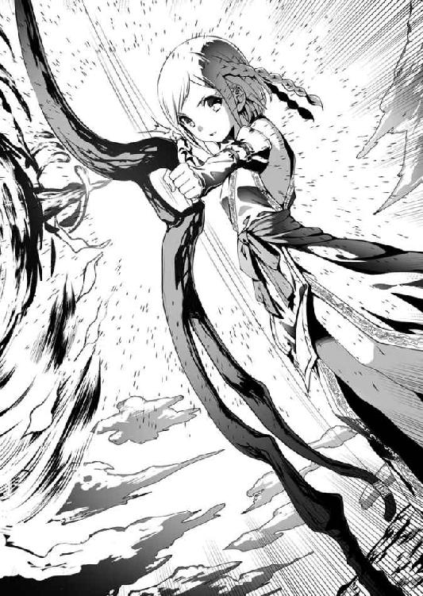
矢が、今の雇い主であるクビライ将軍が率いる隊の頭上を越え、黄金色の大将旗を掲げる敵のど真ん中に吸い込まれていく様が。
ジェベがクビライに命じられていたのは、クビライの隊が直接敵とぶつかる際にこの強弓をもって敵の足を止めよということだった。
（だけど......）
と、初撃を放ってからジェベは考えた。
（敵将を討ち取っちゃだめとも......言われてない）
名のある敵を討てば、それだけ恩賞も多い。弟と妹が、それだけおいしいものを食べられる。暖かい服を着て冬を乗り切ることもできる。
ジェベは、自分の為すべきことに忠実で......それ以上に貪欲だった。
最初の一発で、細かいずれを修正するのに必要な感触は手にしていた。
二本目の矢を、ゆっくりとジェベはつがえた。
どこから撃たれたのか、草馬にはまったくわからなかった。
気付いた時には、異様に太くて長い矢が馬の首を貫通していた。
無論、馬は絶命している。草馬の体は、地面の上に投げ出された。
「族長！ お怪我は!?」
すぐさまジェルメが手勢を率いて草馬の周囲を固めた。
「撃たれた！ どこかに弓兵がいる！」
死んだ馬の体に身を隠すようにして、草馬は叫んだ。
「そんな馬鹿な！」
すぐにジェルメが叫び返してくる。無理もない。既に弓隊が撃ち合う距離での戦いではなくなっている。この乱戦の中で闇雲に撃てば同士討ちになってしまう。
だが、今はそんなことよりこの場を離れるのが先決だった。
草馬の読みどおりに、クビライが自身の騎馬隊を率いて真っ直ぐにこちらへと向かっていた。もう、目と鼻の先である。ここで留まっていれば、斜面を駆け下りてくる馬蹄の群れに踏みつぶされるのは目に見えていた。
「これに乗ってください！」
ジェルメが用意した換えの馬に草馬は飛び乗った。
「クビライは!?」
「来ます!!」
ジェルメが言った。突き出した剣の先に、メルキトとの戦いでも目にしたクビライの紋章を縫い取った軍旗がはためいているのが、はっきりと見えた。
「兄ちゃん、先に行くぜ！」
クビライの軍旗を認め、カサルが動いた。
一度足を止められてしまった草馬の隊よりも、走り続けていたカサルのほうが勢いを残している。
「行けっ！ 止めろ！」
ここは任せるべきと判断し、自分は後詰めとなるべく馬の腹を蹴った。
カサルとクビライがついに交錯するかという、その刹那だった。
「上です!! 族長っ!!」
ジェルメの鋭い声がした。
え？ と草馬は言われるままに視線を斜めに持ち上げた。
空の彼方から、一本の矢がこちらに向かって飛んでいる。
まったくの死角だった。普通の弓兵が放つ矢ではあり得ない角度で飛んできたのは、先ほど草馬の馬を一撃で射殺したものに違いなかった。
「避けてくださああああいっ!!」
言われるまでもない。草馬は、馬の手綱を引いて馬首をめぐらせ、矢の軌道から逃れようと体をひねる。しかし、そこに運命の落とし穴があった。
普段から草馬が乗り慣れている馬であれば、この際どい手綱捌きにもついてこられただろう。しかし、この時草馬が乗っていたのは、本来の主を失って戦場を所在なく駆け回っていた空馬の一頭をジェルメが拾ってきたものだった。
草馬が乱暴に引いた手綱に、馬が抗った。
いななき、前脚で宙を引っ掻く。
考えられる中でも最悪のパターンだった。これでは前に進むことも、左右に逃れることもできない。完全な棒立ちだ。
直後、カサル隊が発する雄叫びとクビライ隊のそれとがぶつかり合った。
何もかもが激しく動き、揺さぶられる中、草馬だけが静止していた。
その草馬目がけて......矢が飛んでくる。
（避けられない!!）
なんの意味もないとわかっていながら、草馬は目を閉じた。閉じてしまった。
目の前に、闇が下りる。
「族長おおおおおっっ!!」
その闇の中で、魂が破けるようなジェルメの絶叫が響き渡った。
つづく
あとがき
どうも、おかずです。
えーと......今回のお話は、妙に中途半端なところで終わっちゃってごめんなさい。
僕としても尻の据わりが悪いと言いますか、もうすぐ入稿なんですけどなんかこう書き終わった感が薄いと言いますかモヤモヤするのは確かでして（本当はこんなこと言ったらいけないかもですが）、ええ。
普段は、
「あー終わった！ もうしばらくワープロソフトの画面は見たくないぜ！」
ってなるんですが、今回は、
「あかん。はよ続き書かなずっと尻がムズムズする！」
というような気持ちになっております。珍しい。
なので、今回はあとがきと言っても何も僕の中で語るべきことがありません（笑）
この後また色々あって、こんなんなって、あーなって、それで綺麗に着地するイメージは見えているので、その時にまた今回の分まで語らせていただきたく存じます。
願わくば、その機会が早いうちに訪れることを心より願いつつ、今回はこの辺で。
最後になりますが、カバーイラスト・本文挿絵のやすゆき先生、今回も素敵なイラストどうもありがとうございました。大変お忙しいところ、色々と細かい調整に対応していただきましたこと、この場を借りて改めてお礼申し上げます。
また、本書の発行にご尽力いただきましたすべての方、そしてこの本を手にとってくださった皆様、いつもどおりの形で恐縮ですが心よりお礼申し上げます。
どうもありがとうございました。
ではまた、できれば次のお話で。
平成二八年 冬 おかず
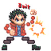
おかず
今年は、なんか例年より早く花粉症の症状が出始めて困っています。
花粉症の人、みんな同じこと言うけど......僕も言わずにいられない。
「杉、切ろう！」
へっくしょん！！
俺とカーンの賢者タイム２
電子版発行 ２０１６年４月８日
著 者 おかず
発行者 長谷川 洋
発行所 株式会社一二三書房
〒１０２－００７２
東京都千代田区飯田橋２－14－２ 雄邦ビル
電話 ０３－３２６５－１８８１
イラスト：やすゆき
©HIFUMI SHOBO
本書の無断複製（コピー）は、著作権上の例外を除き、禁じられています。
●本書は『俺とカーンの賢者タイム２』（２０１６年３月20日 初版第１刷）に基づいて制作されました。